대덕초교과 융합 프로젝트 수업
2026학년도 2학기

교과 융합 프로젝트
수업사례집
초등학교 1–6학년
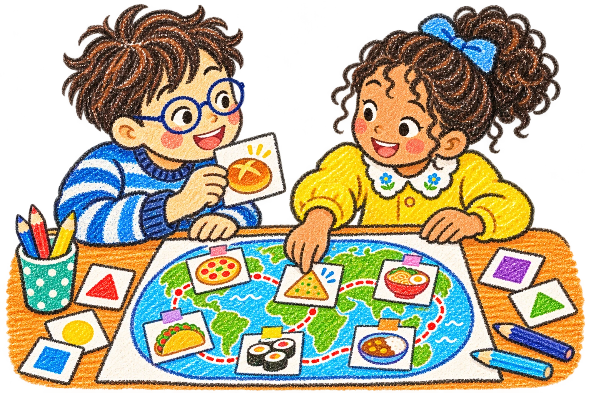
대덕초
수업사례집교과 융합 프로젝트
초등학교 1–6학년

대덕초
프로젝트 안내대덕초 글로컬 세움(돋움, 채움, 틔움) 프로그램의 역할
글로컬 세움(돋움, 채움, 틔움) 프로그램의 역할서부다문화 클러스터에서는 이주배경학생과 비이주배경학생이 함께 배우도록 교과 수업을 설계했습니다. 한 차시에 어떤 배움을 돕고 싶은지에 따라 중점 프로그램을 정하였습니다.
학생이 자기 문화를 존중받고, 필요한 지원을 활용하며, 자신이 가진 강점으로 친구들과 협력하는 경험이 쌓일 때 주도적 적응력이 자라납니다.

마음 돋움은 이주배경학생과 비이주배경학생이 일상의 수업에서 서로의 문화를 접하며 다문화 감수성을 기르는 프로그램입니다. 학생들은 같은 주제를 두고 생각이 다른 까닭을 서로의 생활 경험에 비추어 이해합니다.
프로젝트에서는 각자의 경험을 탐구의 출발점으로 삼습니다. 친구의 이야기에서 자신이 미처 생각하지 못한 점을 발견하고, 서로의 궁금증을 모아 함께 탐구할 질문을 정합니다. 이 과정에서 문화적 차이를 열린 태도로 받아들입니다.
연결되는 역량:

실력 채움은 이주배경학생의 한국어 수준과 학습 경험에 맞추어 교과 학습에 참여할 기회를 보장하는 프로그램입니다. 교사는 학생이 교과 개념을 이해하고 자신의 생각을 표현할 수 있도록 수업에 쓰는 말과 자료, 참여 방법을 조정합니다.
학생은 자신의 생활과 이어지는 탐구 과제에서 목표를 세우고, 자신에게 알맞은 자료와 방법을 선택합니다. 탐구 과정과 결과를 돌아보며 더 필요한 도움을 살피고 다음 배움을 스스로 계획합니다.
연결되는 역량: 

강점 틔움은 이주배경학생의 이중언어 역량과 문화적 경험을 공동의 학습 자원으로 살리는 프로그램입니다. 학생은 친구들과 나눌 경험과 이를 표현할 방법을 스스로 선택하고, 공동의 과제에서 자신이 맡을 역할을 정합니다.
학생들은 서로의 생각을 발전시키고, 다양한 언어와 관점이 드러나는 결과물을 함께 만듭니다. 자신의 문화적 정체성을 살려 학급의 배움에 기여하는 경험은 지역과 세계 공동체에 관심을 갖고 참여하는 바탕이 됩니다.
연결되는 역량: 

프로젝트 안내대덕초수업을 이끄는 네 단계S.E.U.M.은 교과 융합 프로젝트를 설계할 때 사용하는 네 단계입니다.
학생의 처음 생각이 탐구할 질문이 되고, 친구와 함께 만든 결과가 다시 자신의 배움을 돌아보는 자료가 됩니다.
학생들은 주제에 관해 이미 알고 있는 것과 더 알고 싶은 것을 나눕니다. 서로 다른 경험에서 나온 궁금증을 모아 함께 탐구할 질문으로 다듬습니다. 이 질문을 중심으로 배움의 목표를 정하고, 무엇을 어떤 순서로 알아볼지 계획합니다.

 xplore탐구하기
xplore탐구하기탐구 질문에 맞는 방법으로 자료를 모으고, 여러 교과에서 배운 개념을 연결하여 그 의미를 해석합니다. 처음의 생각이 자료에서 찾은 근거와 맞는지 살펴보고, 새롭게 알게 된 점을 바탕으로 자신의 설명을 다듬습니다.
 nite협력하기
nite협력하기각자 알아낸 내용과 그 근거를 나누며 서로 다른 관점을 살펴봅니다. 의견이 다를 때에는 공동의 목표에 비추어 판단할 기준을 정합니다. 이를 바탕으로 실천할 방법을 선택하고, 각자의 강점을 살려 역할을 나누어 실행합니다.
 ake표현하기
ake표현하기전하려는 대상과 목적에 맞게 탐구 과정과 결과를 정리하여 나눕니다. 처음의 질문으로 돌아가 새롭게 알게 된 점과 달라진 생각을 살펴봅니다. 서로 주고받은 의견을 바탕으로 배운 내용을 생활 속 실천이나 다음 탐구로 이어 갑니다.
 프로젝트 안내대덕초
프로젝트 안내대덕초| 차시 | 교과 | 본시 학습 주제 | 교과 역량 | 다문화 주도성 요소 |
|---|---|---|---|---|
| 1 | 수학 | 세계 음식에서 모양 찾기 | 추론 역량 연결 역량 |  |
| 2 | 수학 | 여러 가지 모양의 특징을 알고 같은 모양을 찾아 놀이하기 | 추론 역량 의사소통 역량 | |
| 3 | 국어 | 글의 의미를 생각하며 그림책 읽기 | 비판적‧창의적 사고 역량 |  |
| 4 | 국어 | 인물의 마음을 생각하며 문장을 자연스럽게 띄어 읽기 | 의사소통 역량 |  |
| 5 | 통합 (슬생) | 여러 가지 모양으로 나만의 음식 만들기 | 지금-여기-우리 삶을 살아가는 힘 | |
| 6 | 통합 (바생) | 지구 음식 여행 지도 완성하기 | 지금-여기-우리 삶을 살아가는 힘 | |
| 차시 | 교과 | 본시 학습 주제 | 교과 역량 | 다문화 주도성 요소 |
|---|---|---|---|---|
| 1 | 통합 (즐생) | 여러 나라 날씨와 생활 모습의 특징 알기 | 지금-여기-우리 삶을 살아가는 힘 | |
| 2 | 통합 (슬생) | 계절 상차림에 어울리는 음식 꾸미기 | 지금-여기-우리 삶을 살아가는 힘 | |
| 3 | 수학 | 세계 여러 나라의 계절 음식 자료를 분류하고 표로 나타내기 | 정보처리 역량 | |
| 4 | 국어 | 이어질 이야기 쓰기 | 비판적‧창의적 사고 역량 | |
프로젝트 안내대덕초| 차시 | 교과 | 본시 학습 주제 | 교과 역량 | 다문화 주도성 요소 |
|---|---|---|---|---|
| 1 | 사회 | 배울 내용을 알아보고 프로젝트 계획하기 | 문제해결 역량 | |
| 2 | 사회 | 문화의 의미와 특징 알기 | 정보활용 능력 | |
| 3 | 사회 | 그림 그래프를 읽고 다양한 문화 찾기 | 정보활용 능력 | |
| 4 | 미술 | 전통의상의 무늬를 탐색하고 나만의 무늬 만들기 | 창의‧융합 역량 | |
| 5~6 | 사회 | 다양한 문화를 조사하고 소개 자료 만들기 | 정보활용 능력 | |
| 7 | 사회 | 다양한 문화가 함께할 때의 좋은 점 알기 | 의사소통 및 협업능력 | |
| 8~9 | 사회 | 편견과 차별을 알고 공감을 통해 사회 문제 해결하기 | 공동체 역량 | |
| 10 | 사회 | 모두를 위한 디자인 설계하기 | 창의적 사고력 | |
| 차시 | 교과 | 본시 학습 주제 | 교과 역량 | 다문화 주도성 요소 |
|---|---|---|---|---|
| 1 | 사회 | 우리 지역을 알리는 방법을 알고 소개하기 | 정보활용 능력 | |
| 2 | 국어 | 주제에 맞는 의견과 이유를 제시하며 토의하기 | 의사소통 역량 | |
| 3 | 수학 | 세계 여러 나라의 상징물 구성하기 | 문제 해결 역량 | |
| 4 | 수학 | 소수의 덧셈과 뺄셈으로 수영 기록 비교하기 | 문제 해결 역량 | |
| 5 | 미술 | 한국의 학교 생활을 네 컷 사진으로 표현하기 | 시각적 소통 역량 | |
| 6 | 사회 | 세계 여러 지역의 특징을 알리는 홍보 자료만들기 | 창의적 사고력 | |
프로젝트 안내대덕초| 차시 | 교과 | 본시 학습 주제 | 교과 역량 | 다문화 주도성 요소 |
|---|---|---|---|---|
| 1 | 도덕 | 폭염‧한파 속 생활 문제를 찾고 탐구 계획 세우기 | 도덕적 공동체 의식 | |
| 2 | 국어 | 위협 받는 인권을 생각하며 시 쓰기 | 의사소통 역량 | |
| 3 | 과학 | 여러 나라의 집에 숨은 단열의 원리 찾기 | 과학적 탐구 능력 | |
| 4 | 도덕 | 기후 위기 극복 녹력을 조사하고 교실의 대처법 찾기 | 도덕적 사고 능력 | |
| 5 | 실과 | 인권‧다문화 카드뉴스 만들기 | 기술적 실천 역량 | |
| 6 | 도덕 | 지구 환경 위기의 심각성 알기 | 도덕적 공동체 | |
| 7 | 미술 | 캠페인 자료를 완성하고 발표회 열기 | 시각적 소통 역량 | |
| 8 | 실과 | 캠페인을 알리고 생활 속 실천을 약속하기 | 기술적 실천 역량 | |
| 차시 | 교과 | 본시 학습 주제 | 교과 역량 | 다문화 주도성 요소 |
|---|---|---|---|---|
| 1 | 사회 | 프로젝트의 흐름을 이해하고 탐구 계획 세우기 | 문제해결력 의사결정력 | |
| 2 | 사회 | 기후에 따른 식생활 문화 비교하기 | 정보활용 능력 | |
| 3 | 수학 | 세계 여러 나라의 건출물 모형 만들기 | 의사소통 | |
| 4 | 사회 | 국가 간의 무역을 하는 이유 알기 | 문제해결력 의사결정력 | |
| 5 | 실과 | 다른 나라 친구를 배려한 우리나라 밥상 차리기 | 실천적 문제해결 | |
| 6 | 실과 | 식사 예절을 알고 실천하기 | 관계 형성 | |
| 7 | 미술 | 다문화 공존과 배려의 의미를 담은 배지 디자인하기 | 심미적 감성 역량 | |
| 8 | 도덕 | 다문화 공존을 위한 실천 다짐하기 | 도덕적 공동체 의식 | |
모양 따라 냠냠, 맛있는 지구 여행!
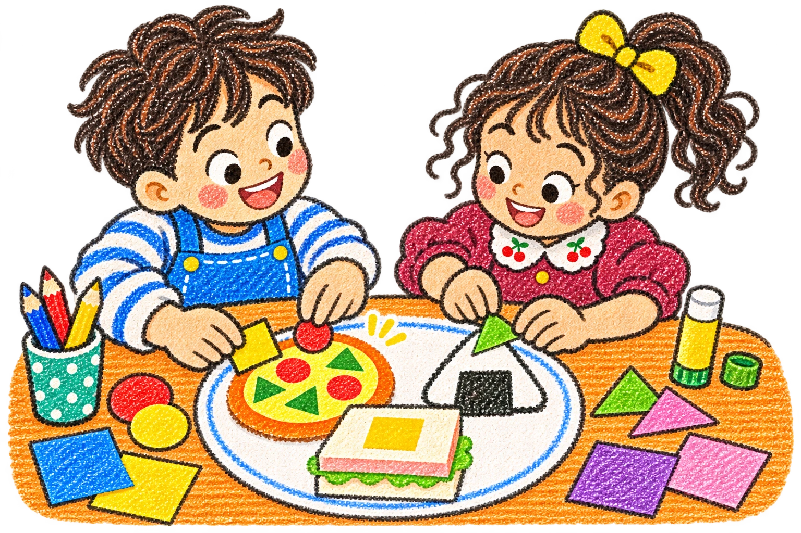
| 차시 | 교과 | 학습 주제 | 교과 역량 |
|---|---|---|---|
| 1 | 수학 | 세계 음식에서 모양 찾기 | 추론 역량 연결 역량 |
| 2 | 수학 | 여러 가지 모양의 특징을 알고 같은 모양을 찾아 놀이하기 | 추론 역량 의사소통 역량 |
| 3 | 국어 | 글의 의미를 생각하며 그림책 읽기 | 비판적‧창의적 사고 역량 |
| 4 | 국어 | 인물의 마음을 생각하며 문장을 자연스럽게 띄어 읽기 | 의사소통 역량 |
| 5 | 통합(슬생) | 여러 가지 모양으로 나만의 음식 만들기 | 지금-여기-우리 삶을 살아가는 힘 |
| 6 | 통합(바생) | 지구 음식 여행 지도 완성하기 | 지금-여기-우리 삶을 살아가는 힘 |
교과 융합 프로젝트 수업대덕초 · 1학년설계 의도 본 프로젝트는 초등학교 1학년 학생들이 친숙한 ‘음식’을 매개로 세계 여러 나라의 문화를 이해하고, 서로 다른 음식 문화를 존중하는 태도를 기르는 데 목적이 있다. 학생들은 여러 나라 음식의 모양과 특징을 탐색하고, 그림책을 통해 서로의 생각과 감정을 나누며 문화적 다양성을 경험한다. 또한 여러 가지 모양으로 음식을 표현하고 작품을 공유하며, 서로의 차이를 인정하고 존중하는 다문화 감수성과 공동체 역량을 기를 수 있다.
| 융합과목 | 수학 | 3. 모양과 시각 | 성취 기준 | [2수03-03] 교실 및 생활 주변에서 여러 가지 물건을 관찰하여 삼각형, 사각형, 원의 모양을 찾고, 이를 이용하여 여러 가지 모양을 만들 수 있다. |
|---|---|---|---|---|
| 국어 | 6. 문장을 읽고 써요. | [2국02-02] 의미가 잘 드러나도록 문장과 짧은 글을 알마게 띄어 읽는다. | ||
| 슬생 | 7. 상상 | [2슬04-02] 상상한 것을 다양한 매체와 재료로 구현한다. |
| 차시 | 프로젝트 단계 | 주요 학습 내용 | 관련 교과 | 학습자료 | |
|---|---|---|---|---|---|
| 1 | et 준비하기 | 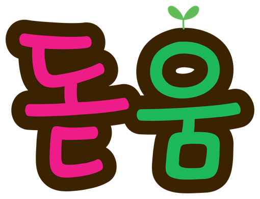 | 세계 여러 나라 음식에서 □, △, ○ 모양 찾아보기 -찾은 모양을 기준에 따라 분류하기 | 수학 | 태블릿 웹앱 |
| 2 | -여러 가지 모양의 특징 알아보기 -모양 맞추기 달리기 놀이하기 | 수학, 즐생 | 모양카드 | ||
| 3 | xplore 탐구하기 |  | -『샌드위치 바꿔 먹기』 읽고 내용 이해하기 -서로 다른 음식을 바라보는 등장인물의 마음과 생각 나누기 | 국어 | 그림책 |
| 4 | -『샌드위치 바꿔 먹기』 등장인물이 되어 목소리 연극하기- 등장인물에게 하고 싶은 말을 생각하며 자연스럽게 띄어 읽기 | 국어 | 연극대본 | ||
| 5 | nite 협력하기 |  | -다양한 음식의 모양과 특징 살펴보기 -여러 가지 모양을 활용하여 친구들과 음식 작품 꾸미기 | 슬생 | 도형자료 |
| 6 |  ake ake표현하기 | -지구 음식 여행 지도 만들고 전시하기 -친구들의 작품을 감상하며 다양한 음식 문화 존중하기 | 바생 | 음식작품, 전시자료 | |
✔세계 여러 나라 음식의 다양한 모양과 특징을 탐색하고, 서로 다른 음식 문화에 대한 이해와 존중의 태도 기르기 ✔그림책 속 등장인물의 생각과 감정에 공감하며 음식 문화의 차이를 자연스럽게 받아들이고, 문화적 편견 없이 다양성을 존중하는 태도 함양하기 | |
| ✔세계 여러 나라 음식에서 다양한 모양과 특징을 스스로 발견하고 분류하며, 자신의 생각을 바탕으로 탐구 활동에 주도적으로 참여하기 ✔여러 가지 모양을 음식 재료로 자유롭게 상상하고, 자신만의 음식 작품을 계획하고 창의적으로 표현하는 과정에서 자기주도적 학습역량 강화하기 |
| ✔세계 여러 나라의 음식 문화를 탐색하며 문화적 다양성을 이해하고, 서로 다른 문화가 공존하는 지구촌 공동체의 구성원으로서 존중과 배려의 태도 기르기 ✔자신과 친구들의 음식 경험 및 작품을 공유하며 세계의 다양한 음식 문화를 일상생활과 연결하고, 서로의 차이를 인정하며 함께 어울리는 공동체 의식 함양하기 |
| ✔그림책 속 서로 다른 음식 문화로 인해 발생하는 갈등 상황을 이해하고, 등장인물의 입장에서 생각하며 문화적 차이를 긍정적으로 받아들이는 태도 기르기 ✔음식 작품을 만들고 공유하는 과정에서 친구들의 다양한 생각과 표현을 수용하고, 새로운 관점과 아이디어를 유연하게 받아들이는 적응력 함양하기 |
교과 융합 프로젝트 수업대덕초 · 1학년ake ⑥| 평가내용 | 평가방법 | 매우 잘함 | 잘함 | 보통 | |
|---|---|---|---|---|---|
①여러 나라 음식에서 모양 찾아 분류하기 [2수03-03] | 관찰법 | 여러 나라 음식의 일부분에서 □, △, ○ 모양을 스스로 찾아 같은 모양끼리 정확하게 분류하고, 그 까닭을 설명할 수 있다. | 여러 나라 음식에서 □, △, ○ 모양을 찾아 같은 모양끼리 분류할 수 있다. | 교사나 친구의 도움을 받아 음식에서 □, △, ○ 모양을 찾고 같은 모양끼리 분류할 수 있다. | |
②모양의 특징을 알고 같은 모양 구별하기 [2수03-03] | 관찰법 | □, △, ○ 모양의 특징을 정확하게 이해하고, 크기와 방향이 다른 모양도 바르게 구별하며 그 까닭을 설명할 수 있다. | □, △, ○ 모양의 특징을 알고, 같은 모양을 찾아 바르게 구별할 수 있다. | 교사나 친구의 도움을 받아 □, △, ○ 모양의 특징을 살펴보고, 같은 모양을 찾을 수 있다. | |
③글의 의미를 생각하며 그림책 읽기 [2국02-02] | 관찰법 | 그림책을 읽고 글의 내용을 바탕으로 의미를 정확하게 파악할 수 있다. | 그림책을 읽고 글의 의미를 파악할 수 있다. | 그림책을 읽으며 교사나 친구의 도움을 받아 글의 의미를 파악할 수 있다. | |
④인물의 마음을 생각하며 문장 띄어 읽기 [2국02-02] | 관찰법 | 의미가 잘 드러나도록 문장을 자연스럽게 띄어 읽을 수 있다. | 의미가 잘 드러나도록 문장을 띄어 읽을 수 있다. | 문장을 띄어 읽을 수 있다. | |
⑤여러 모양으로 나만의 음식 표현하기 [2슬04-02] | 관찰법 | 여러 가지 모양을 다양하게 조합하여 자신만의 음식을 창의적으로 표현할 수 있다. | 여러 가지 모양을 활용하여 자신만의 음식을 표현할 수 있다. | 도움을 받아 여러 가지 모양을 활용하여 자신만의 음식을 표현할 수 있다. | |
⑥지구 음식 여행 지도를 함께 만들고 서로의 표현 존중하기 [2바04-02] | 관찰법 | 친구들과 적극적으로 협력하여 지구 음식 여행 지도를 완성하고, 서로 다른 생각과 표현을 존중하는 태도를 보인다. | 친구들과 함께 지구 음식 여행 지도를 완성하고, 서로 다른 생각과 표현을 존중하는 태도를 보인다. | 도움을 받아 지구 음식 여행 지도 완성 활동에 참여하고, 친구들의 다양한 생각과 표현을 존중하려고 노력한다. | |
| 이주배경학생 평가 시 유의점 | |||||
① 음식에 대한 사전 지식이나 한국어 표현보다 모양을 알아보고 분류하는 과정을 평가한다. | ③ 인물의 마음은 그림·표정·몸짓으로도 표현하고 음식 문화는 희망자만 소개하도록 한다. | ||||
⑤ 모양을 창의적으로 활용한 과정과 음식 작품에 드러난 학생의 문화적 경험을 평가한다. | |||||
교과 융합 프로젝트 수업대덕초 · 1학년일 시 | 대 상 | 1학년 3반 | 교과서 | 수학 64~67(2/9) | 지도교사 | ||||||||||
|---|---|---|---|---|---|---|---|---|---|---|---|---|---|---|---|
프로젝트 | 모양 따라 냠냠, 맛있는 지구 여행! (1/6) |  et et |  | ||||||||||||
본시 성취기준 | [2수03-03] 교실 및 생활 주변에서 여러 가지 물건을 관찰하여 삼각형, 사각형, 원의 모양을 찾고, 이를 이용하여 여러 가지 모양을 만들 수 있다. | 본시 관련교과 | 수학 | ||||||||||||
학습목표 | 세계 여러 나라의 음식에서 □, △, ○ 모양을 찾아 같은 모양끼리 모을 수 있다. | ||||||||||||||
수업 모형 | 개념 형성 학습 모형 | 교과 역량 | 추론 역량, 연결 역량 | ||||||||||||
수업전략 | 수업 의도 | - 수업 목표에 맞게 직접 제작한 웹앱 「모양 음식 분류 놀이」를 활용하여, 학생들이 음식 카드를 자유롭게 분류하고 결과를 확인·수정하며 모양의 공통점을 발견하고 이름을 붙이는 과정에서 수학적 개념을 형성하도록 한다. - 이주배경학생의 모국을 비롯한 세계 여러 나라의 음식을 학습 소재로 활용하여, 학생들이 자신의 경험을 바탕으로 탐구에 참여하고 서로 다른 음식 문화에 관심을 가지며 다양성을 존중하는 태도를 기르도록 한다. | |||||||||||||
다문화 주도성 |  | 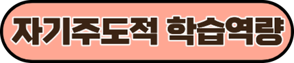 |  | ||||||||||||
☑ | ☑ | ☐ | ☐ | ||||||||||||
이주배경학생 지도계획 | - 이주배경학생이 언어적 부담 없이 수업에 참여할 수 있도록 음식 사진과 모양 카드 등 시각 자료를 충분히 제공한다. - 학생의 문화적 배경과 경험을 존중하되, 특정 국가의 음식 소개를 강요하지 않고 자신의 생각을 자유롭게 표현할 수 있는 허용적인 분위기를 조성한다. | ||||||||||||||
단계 (시간) | 학습요소 | 교수·학습 활동 | 자료(▶) 및 유의점(☞) |
|---|---|---|---|
문제 상황 제시 하기 (5´) | 동기유발 | ▣ 학습동기 유발 ◦ 세계 음식 여행 초대장 살펴보기 ∙ 세계 음식 여행을 떠나기 위해 어떤 나라를 방문하면 좋을까요? - 이집트에 가 보고 싶습니다. 프랑스가 궁금해요. ∙ 선생님이 보여주는 사진은 어떤 음식일까요? - 빵인 것 같아요. 처음 보는 음식이에요. | ▶ 프레젠테이션 |
공부할 문제 파악 | ▣ 공부할 문제 확인 ♣ 세계 여러 나라의 음식에서 □, △, ○ 모양을 찾아 같은 모양끼리 모아 봅시다. | ||
학습활동 안내 | ▣ 학습활동 안내 【활동1】 세계 음식에서 모양 찾기 【활동2】 같은 모양끼리 모으기 【활동3】 모양의 이름 짓기 | ||
사례 탐색하기 (10´) | 음식에서 모양 탐색하기 | ▣ 【활동1】 세계 음식에서 모양 찾기 ◦ 세계 여러 나라의 음식 사진 관찰하기 ∙ 여러 나라의 음식 사진을 살펴봅시다. 어떤 음식들이 보이나요? - 호떡이 보이고 처음 보는 음식도 있습니다. ∙ 음식의 어느 부분에서 □, △, ○ 모양을 찾을 수 있나요? - 호떡에서 동그라미 모양을 찾았습니다. - 오니기리에서 세모 모양을 찾았습니다. ◦ OHP 필름을 활용하여 찾은 모양 따라 그리기 ∙ 음식 사진 위에 OHP 필름을 덮고, 찾은 모양을 네임펜으로 따라 그려 봅시다. ∙ OHP 필름을 들어 올려 봅시다. 어떤 모양이 나타났나요? - 동그라미 모양이 나타났습니다. | ▶ 프레젠테이션, 활동지, OHP필름, 네임펜 ☞ 출력물 위에 OHP필름을 테이프로 고정한다. |
교과 융합 프로젝트 수업대덕초 · 1학년단계 (시간) | 학습요소 | 교수·학습 활동 | 자료(▶) 및 유의점(☞) |
|---|---|---|---|
공통점 발견하고 분류하기 (10´) | 모양 비교하고 분류하기 | ▣ 【활동2】 같은 모양끼리 모으기 ◦ 모양 음식 분류 놀이로 음식 분류하기 ∙ 음식 카드를 살펴보고 같은 모양끼리 모아 봅시다. - 음식 카드를 손가락으로 끌어 알맞은 모양판으로 옮깁니다. - 잘못 옮긴 것 같으면 다시 다른 모양판으로 옮겨 봅니다. ◦ 분류한 결과 확인하기 ∙ 확인 버튼을 누르고 같은 모양끼리 잘 모였는지 함께 살펴봅시다. | ▶ 태블릿, 웹앱 ☞ 모양판에는 □, △, ○ 그림만 제시하고 이름은 보이지 않게 하여 활동3에서 학생이 직접 이름을 짓도록 한다. |
개념 형성하기 (10´) | 모양의 공통점 발견하기 | ▣ 【활동3】 모양의 이름 짓기 ◦ 같은 모양끼리 모은 음식들의 공통점 찾아보기 ∙ □, △, ○ 모양판에 모인 음식에서 찾은 모양들은 어떤 점이 닮았나요? - 책 모양과 닮았습니다. - 뾰족한 부분이 있습니다. - 둥글게 이어져 있습니다. ◦ 모양에 어울리는 이름 지어 보기 ∙ 같은 모양끼리 모은 것에 어떤 이름을 붙이면 좋을까요? - 동그라미 모양이라고 부르고 싶습니다. - 산 모양이라고 부르고 싶습니다. ∙ 교사용 대시보드를 통해 친구들이 지은 이름을 살펴봅시다. | ▶ 태블릿, 웹앱 ☞ 모양의 형식적인 정의보다 학생들이 직관적으로 발견한 공통점과 일상적인 표현을 존중한다. |
개념 적용 및 정리하기 (5´) | 학습내용 정리 | ▣ 학습내용 정리하기 ◦ 배운 내용 정리하기 ∙ 오늘 세계 여러 나라의 음식에서 어떤 모양을 찾아보았나요? - 네모, 세모, 동그라미 모양을 찾아보았습니다. ∙ 서로 다른 나라의 음식들을 살펴보며 새롭게 알게 된 점은 무엇인가요? - 다른 나라 음식에서도 비슷한 모양을 찾을 수 있었습니다. - 나라는 달라도 닮은 모양의 음식이 있었습니다. | |
▣ 차시 예고 ♣ 여러 가지 모양의 특징을 알아보고, 음식 모양 맞추기 놀이를 해 봅시다. |
판서계획 | 3. 모양과 시각 | ||||||
|---|---|---|---|---|---|---|---|
♣ 세계 여러 나라의 음식에서 □, △, ○ 모양을 찾아 같은 모양끼리 모아 봅시다. |
| ||||||
【활동1】 세계 음식에서 모양 찾기 【활동2】 같은 모양끼리 모으기 【활동3】 모양의 이름 짓기 |
평가 계획 | 평가내용 | 척도 | 채점 기준 | 평가 방법 |
|---|---|---|---|---|
세계 여러 나라의 음식에서 □, △, ○ 모양을 찾아 분류할 수 있는가? | 매우 잘함 | 여러 나라 음식의 일부분에서 □, △, ○ 모양을 스스로 찾아 같은 모양끼리 정확하게 분류하고, 그 까닭을 설명할 수 있다. | 관찰법 | |
잘함 | 여러 나라 음식에서 □, △, ○ 모양을 찾아 같은 모양끼리 분류할 수 있다. | |||
보통 | 교사나 친구의 도움을 받아 음식에서 □, △, ○ 모양을 찾고 같은 모양끼리 분류할 수 있다. | |||
이주배경학생 평가 시 유의점 | 음식에 대한 문화적 배경지식이나 한국어 표현 능력보다는 모양을 직관적으로 인식하고 분류하는 수학적 사고 과정을 중심으로 평가한다. | |||
교과 융합 프로젝트 수업대덕초 · 1학년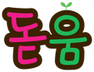
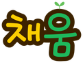

1학년 ( )반 ( )번 이름:
여러 나라의 음식 사진을 자세히 살펴보세요. 투명 필름(OHP 필름)을 올리고, 음식에서 찾은 모양의 테두리를 따라 그려 보세요.
한국 - 호떡 영국 - 샌드위치
일본 - 오니기리 벨기에 - 와플
프랑스 - 크레페 이집트 - 바스부사
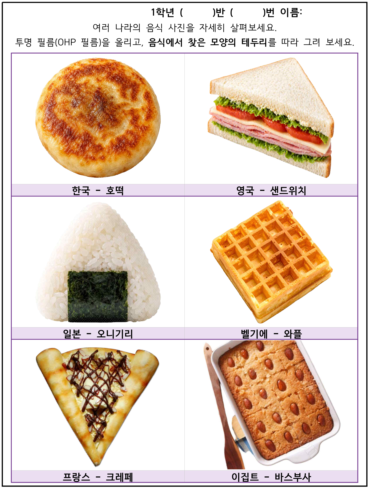
교과 융합 프로젝트 수업대덕초 · 1학년융합과목 | 수학, 즐생 | 대 상 | 1학년 | 프로젝트 단계 | et (준비하기) | ||||||
|---|---|---|---|---|---|---|---|---|---|---|---|
프로젝트 | 모양 따라 냠냠! 맛있는 지구 여행(2/6) | | |||||||||
성취기준 | [2수03-03] 교실 및 생활 주변에서 여러 가지 물건을 관찰하여 삼각형, 사각형, 원의 모양을 찾고, 이를 이용하여 여러 가지 모양을 만들 수 있다. | ||||||||||
학습목표 | 여러 가지 모양의 특징을 알고, 같은 모양을 찾아 놀이할 수 있다. | ||||||||||
수업전략 | 수업모형 | 놀이 중심 학습 모형 | 교과 역량 | 추론 역량, 의사소통 역량 | |||||||
다문화 주도성 | | | |||||||||
☑ | ☑ | ☐ | ☐ | ||||||||
단계 (시간) | 학습요소 | 교수·학습 활동 | 자료(▶) 및 유의점(☞) | |
|---|---|---|---|---|
도입 (5′) | 동기유발 | ▣ 동기 유발 ◦ 세계 여러 나라의 음식에서 찾은 모양 떠올리기 ∙ 오니기리와 샌드위치 반쪽은 크기도 생김새도 다른데, 왜 같은 모양끼리 모았을까요? | ▶ 프레젠테이션 | |
공부할 문제 파악 | ▣ 공부할 문제 확인 ♣ 여러 가지 모양의 특징을 알아보고, 음식 모양 맞추기 놀이를 해 봅시다. | |||
놀이 준비하기 (10′) | 모양의 특징 탐색하기 | ▣ 【활동1】 여러 가지 모양의 특징 알아보기 ◦ □, △, ○ 모양의 특징 살펴보기 ∙ 여러 가지 모양을 관찰하고 특징을 이야기해 봅시다. ∙ 크기와 방향이 달라도 같은 모양인지 살펴봅시다. ◦ 모양 맞추기 달리기 놀이 준비하기 ∙ 놀이 방법을 알아보고 지켜야 할 규칙을 확인해 봅시다.
| ▶ 프레젠테이션 ☞ 모양의 크기와 방향이 달라도 같은 모양임을 발견하도록 다양한 모양 카드를 제시한다. | |
놀이 실행하기 (20′) | 모양 구별 및 적용하기 | ▣ 【활동2】 음식 모양 맞추기 달리기 놀이하기 ◦ 모양의 특징을 활용하여 음식 카드 찾기 ∙ 선생님이 보여 주는 모양과 닮은 음식 카드를 찾아봅시다. ∙ 선생님이 알려 주는 모양의 특징을 듣고 알맞은 음식 카드를 찾아봅시다. ◦ 모양 맞추기 결과 확인하기 ∙ 친구들이 찾은 모양 카드를 함께 살펴봅시다. | ▶ 세계 음식 모양 카드, 반환점 바구니, 라바콘 | |
놀이 정리하기 (5′) | 학습내용 정리하기 | ▣ 학습내용 정리 ◦ 여러 가지 모양의 특징 정리하기 ∙ 놀이에서 찾은 □, △, ○ 모양의 특징을 이야기해 봅시다. ◦ 놀이 활동 돌아보기 ∙ 새롭게 알게 된 점이나 재미있었던 점을 이야기해 봅시다. | ||
▣ 차시 예고 ♣ 『샌드위치 바꿔 먹기』를 읽고, 서로 다른 음식을 바라보는 등장인물의 마음과 생각을 나누어 봅시다. |
교과 융합 프로젝트 수업대덕초 · 1학년일 시 | 대 상 | 1학년 4반 | 교과서 | 국어 194~207(12/16) | 지도교사 | ||||||||||
|---|---|---|---|---|---|---|---|---|---|---|---|---|---|---|---|
프로젝트 | 모양 따라 냠냠, 맛있는 지구 여행! (3/6) |  xplore xplore |  | ||||||||||||
본시 성취기준 | [2국02-02] 의미가 잘 드러나도록 문장과 짧은 글을 알맞게 띄어 읽는다 | 본시 관련교과 | 국어 | ||||||||||||
학습목표 | 글의 의미를 생각하며 읽을 수 있다. | ||||||||||||||
수업 모형 | 반응 중심 학습 모형 | 교과 역량 | 비판적‧창의적 사고 역량 | ||||||||||||
수업전략 | 수업 의도 | - 그림책 『샌드위치 바꿔 먹기』 속 인물의 말과 행동을 살펴보고, 인물에게 질문하고 답하는 활동을 통해 글의 의미를 이해하고 인물의 마음을 짐작하도록 한다. - 학생들에게 친숙한 음식을 소재로 서로의 입맛과 음식 문화가 다를 수 있음을 이해하도록 한다. 특히 이주배경학생과 비이주배경학생이 함께 인물의 입장을 생각하며, 자신에게 낯선 음식과 문화도 존중하는 태도를 기르도록 한다. | |||||||||||||
다문화 주도성 | | | |||||||||||||
☑ | ☑ | ☐ | ☑ | ||||||||||||
이주배경학생 지도계획 | - 이주배경학생의 한국어 이해 및 표현 수준을 사전에 파악하고, 그림책의 주요 어휘와 인물의 감정을 이해할 수 있도록 음식 그림, 감정 카드, 질문·답변 예시를 준비한다. 핫시팅 활동에서는 짝과 함께 연습하거나 그림·몸짓으로 표현할 수 있도록 지원하며, 자신의 음식 문화와 경험은 희망하는 경우 자연스럽게 나눌 수 있도록 한다. | ||||||||||||||
단계 (시간) | 학습요소 | 교수·학습 활동 | 자료(▶) 및 유의점(☞) |
|---|---|---|---|
반응 준비하기 (5´) | 동기유발 | ▣ 학습동기 유발 ◦ 내가 먹어 본 다른 음식에 대한 경험 말하기 ∙ 다른 나라 음식을 먹어본 경험이 있나요? - 태국에 가서 똠양꿍이라는 것을 먹어보았습니다. - 말레이시아에서 두리안을 먹어봤는데 냄새가 이상했습니다. ∙ 다른 나라 음식을 처음 보았을 때 어떤 생각이 들었나요? - 낯설어서 먹고 싶지 않았던 적이 있습니다. | ▶ 프레젠테이션 |
공부할 문제 파악 | ▣ 공부할 문제 확인 ♣ 글의 의미를 생각하며 그림책을 읽어 봅시다. | ||
학습활동 안내 | ▣ 학습활동 안내 【활동1】 그림책 읽기 【활동2】 내용 확인하기 【활동3】 책 속 인물에게 질문하기 | ||
반응 형성하기 (12´) | 책 표지 살펴보고 그림책 읽어보기 | ▣ 【활동1】 그림책 읽기 ◦ ‘샌드위치 바꿔 먹기’ 책 표지 살펴보기 ∙ 책 제목은 무엇인가요? - 샌드위치 바꿔 먹기입니다. ∙ 그림 속 주인공들은 서로 어떤 사이인 것 같나요? - 서로 친구 사이인 것 같습니다. ◦ ‘샌드위치 바꿔 먹기’ 함께 읽기 ◦ ‘샌드위치 바꿔 먹기’ 주요 문장 읽어 보기 ∙ 문장을 소리 내어 읽어 보세요. | ▶ ‘샌드위치 바꿔 먹기’ 그림책 ☞ 문장 읽기에 어려움이 있는 학생의 경우, 문장 단위로 친구와 번갈아 글을 읽어 보게 해 읽기 부담을 줄인다. |
교과 융합 프로젝트 수업대덕초 · 1학년단계 (시간) | 학습요소 | 교수·학습 활동 | 자료(▶) 및 유의점(☞) |
|---|---|---|---|
반응 명료화 하기 (7´) | 글의 의미 파악하기 | ▣ 【활동2】 내용 확인하기 ◦ ‘샌드위치 바꿔 먹기’ 그림책 속 글의 의미 파악하기 ∙ 릴리와 셀마는 서로의 샌드위치를 보고 어떤 말을 했나요? - “우웩, 구역질 나!”라고 이야기했습니다. ∙ 샌드위치 싸움 이야기가 친구들에게 퍼져 나가고, 식당에서 어떤 일이 일어났나요? - 서로 편을 갈라서 음식을 던지며, 음식 싸움을 하기 시작했습니다. | ▶ 내용 확인 활동지 |
반응 심화하기 (12´) | 책 속 인물에게 질문하기 | ▣ 【활동3】 책 속 인물에게 질문하기 ◦ 책 속 인물들에게 묻고 싶은 질문 정리하기 ∙ 책 속 인물들에게 궁금한 점이 있나요? 질문으로 만들어 봅시다. ◦ 셀마와 릴리가 되어서 핫시팅하기 ∙ 셀마에게 질문해 주세요. - 릴리가 샌드위치 싫다고 말했을 때 어떤 마음이 들었나요? - 릴리의 샌드위치를 바꿔 먹기 전에는 어떤 생각이 들었나요? ∙ 릴리에게 질문해 주세요. - 싸우는 친구들을 보았을 때 기분이 어땠나요? - 셀마의 샌드위치 맛은 솔직히 어땠나요? | ▶ 질문 활동지 ▶ 인물 얼굴 그림 ☞ 핵심 질문으로 글의 의미를 잘 이해했는지 평가한다. |
평가하기 (4´) | 학습내용 정리 | ▣ 학습내용 정리하기 ◦ 배운 내용 정리하기 ∙ 오늘 배운 내용과 문제를 해결한 소감을 말해 봅시다. - 다른 나라 음식을 먹을 때 릴리와 셀마처럼 먹어보고 이해해야겠다는 생각이 들었습니다. - 내가 좋아하지 않는 음식도 친구에게는 소중할 수 있다는 것을 알았습니다. | ☞ 다른 나라와의 문화 차이에 대해 존중하는 분위기가 이뤄질 수 있도록 지도한다. |
▣ 차시 예고 ♣ 그림책 속 등장인물이 되어 목소리 연극을 해 봅시다. |
판서계획 | 6. 문장을 읽고 써요 | ||
|---|---|---|---|
♣ 글의 의미를 생각하며 그림책을 읽어 봅시다. | 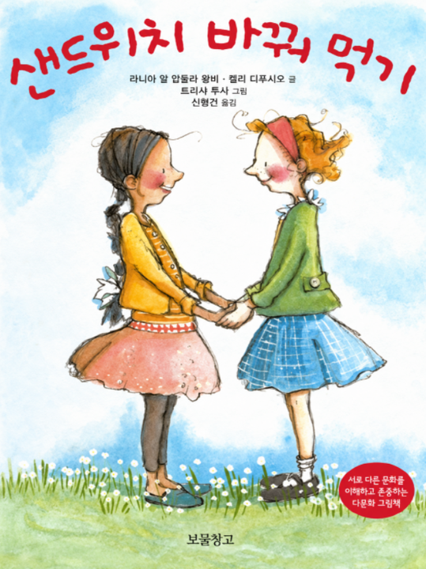 | ||
【활동1】 그림책 읽기 【활동2】 내용 확인하기 【활동3】 책 속 인물에게 질문하기 |
평가 계획 | 평가내용 | 척도 | 채점 기준 | 평가 방법 |
|---|---|---|---|---|
글의 의미를 생각하며 그림책을 읽을 수 있는가? | 매우 잘함 | 그림책을 읽고 글의 내용을 바탕으로 의미를 정확하게 파악할 수 있다. | 관찰법 | |
잘함 | 그림책을 읽고 글의 의미를 파악할 수 있다. | |||
보통 | 그림책을 읽으며 교사나 친구의 도움을 받아 글의 의미를 파악할 수 있다. | |||
이주배경학생 평가 시 유의점 | 이주배경학생은 한국어 숙달도와 음식 문화에 대한 경험이 다를 수 있으므로, 말하기의 유창성보다 인물의 말과 행동을 바탕으로 마음을 이해하는지에 중점을 두어 평가한다. 말로 표현하기 어려운 경우 그림, 표정, 몸짓 등 다양한 표현 방식을 허용하고, 자국의 음식이나 문화에 대한 발표를 강요하지 않으며, 서로 다른 음식 문화를 존중하는 태도를 긍정적으로 평가한다. | |||
교과 융합 프로젝트 수업대덕초 · 1학년[활동2] 내용 확인하기
※ ‘샌드위치 바꿔 먹기’를 읽고 물음에 답해 봅시다. 1. 릴리와 셀마가 먹은 샌드위치 이름은 무엇인지 접시에 쓰세요.
릴리의 샌드위치 셀마의 샌드위치
2. 교장실에 불려간 다음 날, 릴리는 셀마에게 ( ㅇ ㄱ )를 내어 땅콩버터 잼 샌드위치를
한 입 먹어보고 싶은지 물어봤어요. 3. 서로의 샌드위치를 나눠 먹고 셀마와 릴리는 교장 선생님께 찾아가서 세계 여러 나라의
( ㅇ ㅅ )을 나눠 먹는 행사를 제안했어요.
[활동3] 책 속 인물에게 질문하기
※ 셀마와 릴리에게 물어보고 싶은 말을 써 봅시다.
셀마
셀마에게 하고 싶은 질문 쓰기
릴리
릴리에게 하고 싶은 질문 쓰기
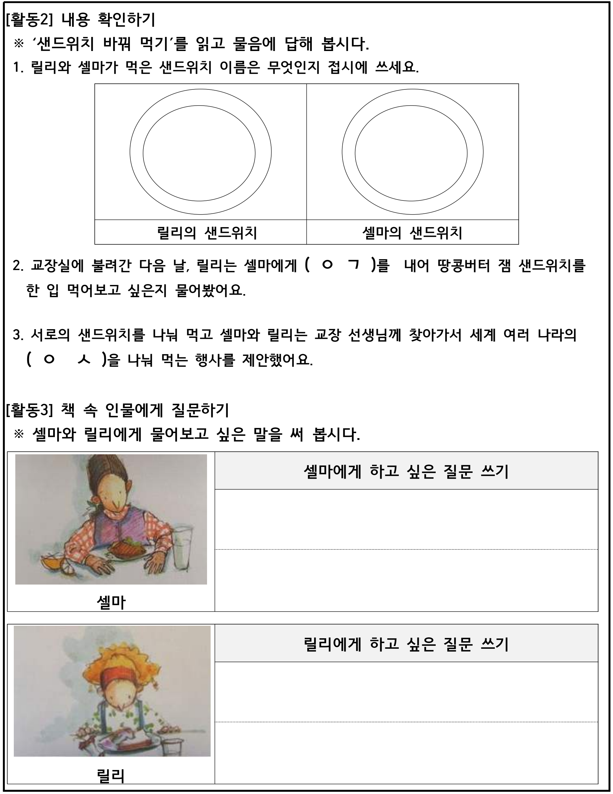
교과 융합 프로젝트 수업대덕초 · 1학년융합과목 | 국어 | 대 상 | 1학년 | 프로젝트 단계 | xplore (탐구하기) | ||||||
|---|---|---|---|---|---|---|---|---|---|---|---|
프로젝트 | 모양 따라 냠냠! 맛있는 지구 여행(4/6) | | |||||||||
성취기준 | [2국02-02] 의미가 잘 드러나도록 문장과 짧은 글을 알맞게 띄어 읽는다. | ||||||||||
학습목표 | 인물의 마음을 생각하며 문장을 자연스럽게 띄어 읽을 수 있다. | ||||||||||
수업전략 | 수업모형 | 역할 수행 학습 모형 | 교과 역량 | 의사소통 역량 | |||||||
다문화 주도성 | | | |||||||||
☑ | ☑ | ☑ | ☑ | ||||||||
단계 (시간) | 학습요소 | 교수·학습 활동 | 자료(▶) 및 유의점(☞) |
|---|---|---|---|
상황 설정하기 (5′) | 동기유발 | ▣ 학습동기 유발 ◦ 같은 문장을 다르게 읽는 소리 듣기 ∙ 선생님이 읽는 두 가지 방법을 비교해 보세요. ∙ 어느 쪽이 내용을 이해하기 쉬웠나요? ∙ 왜 그렇게 생각하나요? | ▶ 프레젠테이션 |
공부할 문제 파악 | ▣ 공부할 문제 확인 ♣ 인물의 마음을 생각하며 문장을 자연스럽게 띄어 읽어 봅시다. | ||
준비 및 연습하기 (10′) | ‘샌드위치 바꿔 먹기’ 그림책 속 대본 함께 읽어보기 | ▣ 【활동1】 목소리 연극 준비하기 ◦ ‘샌드위치 바꿔 먹기’ 내용 떠올리기 ∙ 릴리와 셀마는 왜 다투었나요? ◦ 목소리 연극에서 자연스럽게 읽는 방법 알아보기 ∙ 친구들이 내용을 잘 이해하려면 어떻게 읽어야 할까요? ◦ 역할을 나누고 대본 연습하기 | ▶ 목소리 연극 대본 ☞ 교사의 안내에 따라 반복적으로 연습한다. |
실연하기 (20′) | 등장인물이 되어 목소리 연극하기 | ▣ 【활동2】 목소리 연극하기 ◦ 인물의 마음을 생각하며 모둠별 목소리 연극하기 ∙ 자신이 맡은 인물의 마음을 생각하며 자연스럽게 읽어 보세요. ◦ 목소리 연극 듣는 모둠은 다른 친구의 발표 평가하기 ∙ 다른 친구가 문장을 자연스럽게 읽고 있는지 평가표에 평가해 보세요. ◦ 모둠별 목소리 연극 발표 듣고 이야기 나누기 ∙ 친구가 자연스럽게 읽는 부분은 어디인가요? | ▶ 동료평가지 ☞ 발표할 때는 바른 자세로 서서 이야기를 읽도록 지도하고, 앉아 있는 학생들은 발표를 듣고 친구의 문장 읽기를 평가한다. |
평가 하기 (5′) | 학습내용 정리하기 | ▣ 학습 내용 정리 ◦ 릴리와 셀마에게 하고 싶은 말 이야기하기 ∙ 릴리와 셀마에게 어떤 말을 해주고 싶은지 이야기해 봅시다. ◦ 오늘의 활동 생각하며 스스로 확인해보기 ∙ 문장을 자연스럽게 읽으려면 어떻게 해야 할까요? ∙ 내가 잘한 점과 다음에 더 연습하고 싶은 점을 이야기해 봅시다. | ☞ 목소리 연극에 참여한 소감을 나누고, 학습한 내용이 자신에게 어떤 도움이 되었는지 자유롭게 이야기할 수 있는 분위기를 조성한다. |
▣ 차시 예고 ♣ 배운 내용을 마무리해 봅시다. |
교과 융합 프로젝트 수업대덕초 · 1학년일 시 | 대 상 | 1학년 2반 | 교과서 | 상상 26~27(5/39) | 지도교사 | ||||||||||
|---|---|---|---|---|---|---|---|---|---|---|---|---|---|---|---|
프로젝트 | 모양 따라 냠냠, 맛있는 지구 여행! (5/6) |  nite nite |  | ||||||||||||
본시 성취기준 | [2슬04-02] 상상한 것을 다양한 매체와 재료로 구현한다. | 본시 관련교과 | 슬생 | ||||||||||||
학습목표 | 여러 가지 모양으로 내가 상상한 음식을 만들 수 있다. | ||||||||||||||
수업 모형 | 문제해결 학습 모형 | 교과 역량 | 지금-여기-우리 삶 | ||||||||||||
수업전략 | 수업 의도 | - 이주배경학생을 비롯한 우리 반 학생들이 경험한 다양한 식재료를 살펴보고, 식재료에 나타난 여러 가지 모양과 특징을 탐색하도록 한다. 학생들은 자신이 관찰하고 경험한 대상을 상상 속에서 자유롭게 변형하고 재구성하며, 이를 바탕으로 자신만의 새로운 음식을 창의적으로 표현하도록 한다. - 서로 다른 문화적 경험과 생각이 담긴 작품을 공유하며 표현의 다양성을 발견하고, 서로의 차이를 인정하고 존중하는 태도를 기르도록 한다. | |||||||||||||
다문화 주도성 | | | |||||||||||||
☑ | ☑ | ☐ | ☐ | ||||||||||||
이주배경학생 지도계획 | - 이주배경학생의 문화적 경험을 학습 자원으로 활용할 수 있도록 자신이 경험한 음식과 식재료를 사진이나 그림으로 소개하는 사전 활동을 계획한다. 또한 학생의 한국어 이해 및 표현 수준을 사전에 파악하고, 원활한 수업 참여를 위해 그림 낱말 카드와 시각 자료 등 필요한 학습자료를 준비한다. | ||||||||||||||
단계 (시간) | 학습요소 | 교수·학습 활동 | 자료(▶) 및 유의점(☞) |
|---|---|---|---|
문제 확인하기 (5´) | 동기유발 | ▣ 학습동기 유발 ◦ 우리 반 지구 음식 여행 지도 살펴보기 ∙ 지구 음식 여행 지도를 살펴보고 무엇이 필요한지 이야기해 봅시다. - 지도에 음식이 필요합니다. ∙ 지구 음식 여행 지도를 완성하려면 어떻게 해야 할까요? - 여러 가지 모양으로 특별한 음식을 만듭니다. | ▶ 지구 음식 여행 지도 ☞ 학생들이 지도를 살펴보며 지도를 완성하기 위해 필요한 것을 자유롭게 이야기하도록 유도한다. |
공부할 문제 파악 | ▣ 공부할 문제 확인 ♣ 여러 가지 모양으로 내가 상상한 음식을 만들어 봅시다. | ||
학습활동 안내 | ▣ 학습활동 안내 【활동1】 무엇이 될까? 【활동2】 모양 따라 냠냠 | ||
문제 해결 방법 탐색 하기 (7´) | 여러 가지 모양으로 음식 상상하기 | ▣ 【활동1】 무엇이 될까? ◦ 세계 여러 나라 음식에서 모양 찾기 ∙ 여러 나라의 음식 사진을 살펴보고 어떤 모양을 찾을 수 있나요? - 미국의 브라우니에서 네모를 찾았습니다. - 멕시코 토르티야에서 세모를 찾았습니다. - 인도네시아 클레폰은 동그라미 모양입니다. ◦ 여러 가지 모양으로 음식 상상하기 ∙ 여러 가지 모양에서 어떤 음식이나 식재료가 떠오르나요? - 동그라미는 토마토가 될 수 있습니다. - 네모는 치즈가 될 수 있습니다. - 세모 모양 스콘이 떠오릅니다. ∙ 같은 모양을 보고 친구들이 떠올린 음식을 비교해 봅시다. - 같은 동그라미인데 서로 다른 음식을 생각했습니다. | ▶ 프레젠테이션 ☞ 이주배경학생에게 친숙한 음식을 활동 자료로 활용하여 자신의 문화적 경험을 바탕으로 적극적으로 참여할 수 있도록 한다. |
교과 융합 프로젝트 수업대덕초 · 1학년단계 (시간) | 학습요소 | 교수·학습 활동 | 자료(▶) 및 유의점(☞) |
|---|---|---|---|
문제 해결하기 (23´) | 여러 가지 모양으로 나만의 음식 만들기 | ▣ 【활동2】 모양 따라 냠냠 ◦ 여러 가지 모양으로 나만의 음식 만들기 ∙ 동그라미, 세모, 네모 모양을 함께 사용하면 어떤 음식을 만들 수 있을까요? - 네모와 동그라미로 샌드위치를 만들 수 있습니다. - 동그라미와 세모로 피자를 만들 수 있습니다. - 세모와 네모로 과일 꼬치를 만들 수 있습니다. ∙ 여러 가지 모양을 자유롭게 합쳐서 나만의 특별한 음식을 만들어 봅시다. - 동그라미와 세모를 이용하여 피자를 만들었습니다. - 네모와 동그라미를 이용하여 만두를 만들었습니다. - 세모와 동그라미를 이용하여 꼬치를 만들었습니다. ∙ 내가 만든 음식의 특징을 생각하며 이름을 지어 봅시다. - 여러 가지 색깔이 들어간 ‘무지개 피자’입니다. - 달콤한 과일이 들어간 ‘달콤 마라탕’입니다. - 세모 모양 고기가 올라간 ‘세모세모 만두’입니다. | ▶ 프레젠테이션, 활동지, 모양스티커 ☞ 학생들이 여러 가지 모양을 자유롭게 조합하여 자신만의 음식을 창의적으로 표현할 수 있도록 다양한 생각과 표현 방식을 존중한다. ☞ 모양 스티커로 표현하기 어려운 부분은 활동지에 직접 그려 자유롭게 표현할 수 있도록 안내한다. |
평가하기 (5´) | 학습내용 정리 | ▣ 학습내용 정리하기 ◦ 배운 내용 정리하기 ∙ 오늘 배운 내용과 나만의 음식을 만든 소감을 이야기해 봅시다. - 세계 여러 나라의 음식에서 동그라미, 세모, 네모 모양을 찾을 수 있었습니다. - 같은 모양으로도 여러 가지 음식과 재료를 표현할 수 있다는 것을 알게 되었습니다. - 여러 가지 모양으로 나만의 특별한 음식을 만들어서 재미있었습니다. | ☞ 학생들이 활동에서 활용한 모양과 만든 음식의 특징을 되짚어 보며 학습 내용을 정리할 수 있도록 한다. |
▣ 차시 예고 ♣ 친구들과 함께 지구 음식 여행 지도를 완성해 봅시다. |
판서계획 | 7. 상상 | ||||||
|---|---|---|---|---|---|---|---|
♣ 여러 가지 모양으로 내가 상상한 음식을 만들어 봅시다. |
| ||||||
【활동1】 무엇이 될까? 【활동2】 모양 따라 냠냠 |
평가 계획 | 평가내용 | 척도 | 채점 기준 | 평가 방법 |
|---|---|---|---|---|
여러 가지 모양을 활용하여 자신만의 음식을 창의적으로 표현할 수 있는가? | 매우 잘함 | 여러 가지 모양을 다양하게 조합하여 자신만의 음식을 창의적으로 표현할 수 있다. | 관찰법 | |
잘함 | 여러 가지 모양을 활용하여 자신만의 음식을 표현할 수 있다. | |||
보통 | 도움을 받아 여러 가지 모양을 활용하여 자신만의 음식을 표현할 수 있다. | |||
이주배경학생 평가 시 유의점 | 이주배경학생이 자신의 문화적 경험을 바탕으로 친숙한 음식이나 식재료를 표현할 수 있으므로, 사전 지식이나 한국어 표현 능력보다는 여러 가지 모양을 활용하여 창의적으로 표현하는 과정을 중심으로 평가하고, 학생의 고유한 문화적 경험이 작품으로 드러나는 점을 의미 있게 살펴본다. | |||
교과 융합 프로젝트 수업대덕초 · 1학년1. □,△,○를 이용하여 나만의 특별한 음식을 만들어 봅시다.
2. 내가 만든 음식의 이름을 지어 봅시다.
3. 음식의 이름을 그렇게 지은 까닭을 써 봅시다.
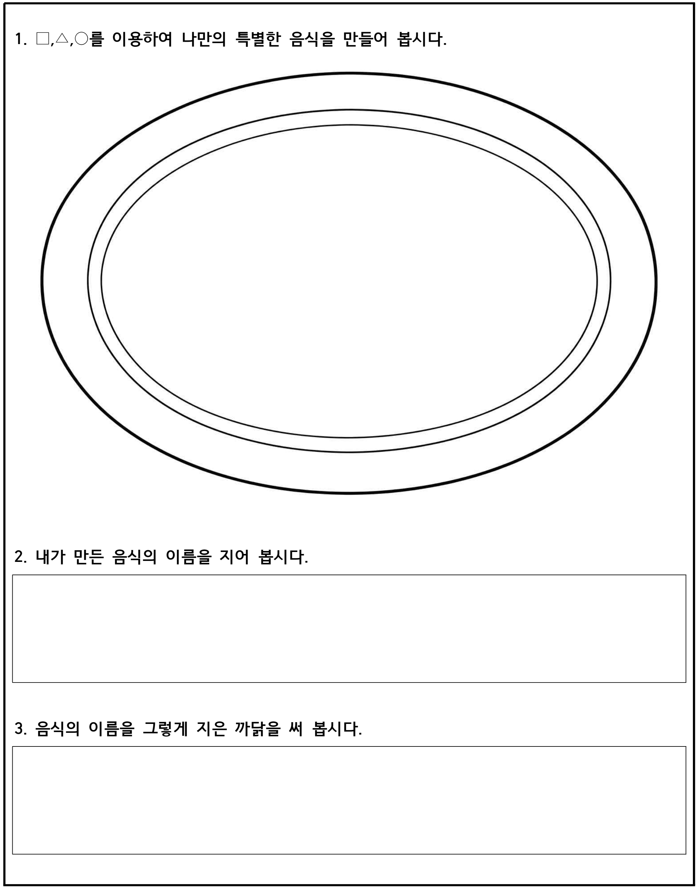
교과 융합 프로젝트 수업대덕초 · 1학년융합과목 | 바생, 수학 | 대 상 | 1학년 | 프로젝트 단계 | ake (표현하기) | ||||||
|---|---|---|---|---|---|---|---|---|---|---|---|
프로젝트 | 모양 따라 냠냠! 맛있는 지구 여행(6/6) | | |||||||||
성취기준 | [2바04-02] 다양한 생각이나 의견에 대해 개방적인 태도를 형성한다. | ||||||||||
학습목표 | 친구들과 함께 지구 음식 여행 지도를 완성해 봅시다. | ||||||||||
수업전략 | 수업모형 | 문제해결 학습 모형 | 교과 역량 | 문제해결 역량 | |||||||
다문화 주도성 | | | |||||||||
☑ | ☐ | ☑ | ☐ | ||||||||
단계 (시간) | 학습요소 | 교수·학습 활동 | 자료(▶) 및 유의점(☞) |
|---|---|---|---|
문제 확인하기 (5′) | 동기유발 | ▣ 학습동기 유발 ◦ 내가 만든 음식을 좋아할 친구들 상상하기 ∙ 지난 시간에 만든 음식을 살펴보고 어느 나라 친구들이 좋아할지 상상해 봅시다. | ▶ 학생 작품 ☞ 특정 나라의 사람들의 음식 취향을 일반화하지 않도록 유의한다. |
공부할 문제 파악 | ▣ 공부할 문제 확인 ♣ 친구들과 함께 지구 음식 여행 지도를 완성해 봅시다. | ||
문제해결방법 탐색하기 (10′) | 친구들이 만든 음식 살펴보기 | ▣ 【활동1】 친구의 음식이 궁금해! ◦ 친구들이 만든 음식 살펴보기 ∙ 친구들이 만든 음식을 살펴보고 궁금한 점을 이야기해 봅시다. ∙ 친구들이 만든 음식 중 먹어 보고 싶은 음식을 찾아보고 까닭을 이야기해 봅시다. | ▶ 학생 작품 ☞ 친구들이 만든 음식의 특징과 표현 방법을 살펴보며 서로의 생각을 이해할 수 있도록 한다. |
문제 해결하기 (20‘) | 지구 음식 여행 지도 완성하기 | ▣ 【활동2】 지구 음식 여행 지도 완성하기 ◦ 지구 음식 여행 지도에 음식 붙이기 ∙ 세계 지도에서 내가 만든 음식을 소개하고 싶은 나라를 찾아봅시다. ∙ 친구들이 붙인 음식을 살펴보며 우리 반의 지구 음식 여행 지도를 완성해 봅시다. | ▶ 지구 음식 여행 지도 ☞ 학생들이 자신이 선택한 나라에 음식을 자유롭게 붙일 수 있도록 한다. |
지구 음식 여행 지도 감상하기 | ▣ 【활동3】 세계 음식 여행을 떠나요! ◦ 지구 음식 여행 지도 감상하기 ∙ 완성된 지구 음식 여행 지도를 살펴보고 가 보고 싶은 나라와 만나 보고 싶은 음식을 이야기해 봅시다. | ▶ 지구 음식 여행 지도 | |
평가 하기 (5′) | 학습내용 정리하기 | ▣ 학습내용 정리 ◦ 지구 음식 여행을 마친 소감 나누기 ∙ 친구들과 함께 지구 음식 여행 지도를 완성한 소감을 이야기해 봅시다. | |
▣ 차시 예고 ♣ 음악을 들으며 장난감들의 움직임을 표현해 봅시다. |
세계 여러 나라의 계절
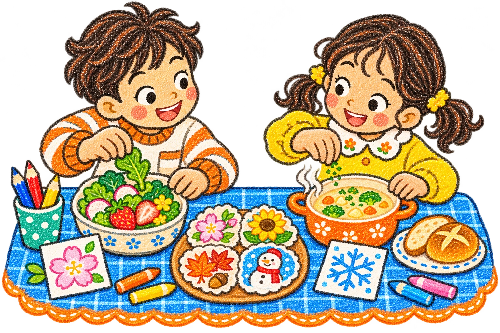
| 차시 | 교과 | 학습 주제 | 교과 역량 |
|---|---|---|---|
| 1 | 통합(즐생) | 여러 나라 날씨와 생활 모습의 특징 알기 | 지금-여기-우리 삶을 살아가는 힘 |
| 2 | 통합(슬생) | 계절 상차림에 어울리는 음식 꾸미기 | 지금-여기-우리 삶을 살아가는 힘 |
| 3 | 수학 | 세계 여러 나라의 계절 음식 자료를 분류하고 표로 나타내기 | 정보처리 역량 |
| 4 | 국어 | 이어질 이야기 쓰기 | 비판적‧창의적 사고 역량 |
교과 융합 프로젝트 수업대덕초 · 2학년설계 의도 본 프로젝트는 세계 여러 나라의 계절과 음식 문화를 탐색하며 자연환경에 따른 생활 모습의 다양성을 이해하고 존중하는 태도를 기르는 데 목적이 있다. 학생들은 우리나라와 다른 나라의 계절별 음식 문화를 살펴보고, 계절에 어울리는 상차림을 구성하며, 친구들과 협력하여 여러 나라의 음식을 기준에 따라 분류하는 활동에 참여한다. 또한 서로 다른 계절과 생활 모습을 소재로 이야기를 창작하고 공유하며, 다양한 문화를 열린 마음으로 받아들이고 자신의 생각을 주도적으로 표현하는 역량을 기를 수 있다.
| 융합과목 | 즐생 | 5. 계절 | 성취 기준 | [2즐03-02] 자연의 변화를 느끼며 놀이한다. |
|---|---|---|---|---|
| 슬생 | 5. 계절 | [2슬03-02] 계절과 생활의 관계를 탐구한다. | ||
| 수학 | 5. 표와 그래프 | [2수04-02] 자료를 분류하여 표로 나타내고, 자료를 표로 나타내면 편리한 점을 말할 수 있다. | ||
| 국어 | 8. 나도 작가 | [2국05-03] 작품 속 인물의 모습, 행동, 마음을 상상하여 시, 노래, 이야기, 그림 등으로 표현한다. |
| 차시 | 프로젝트 단계 | 주요 학습 내용 | 관련 교과 | 학습자료 | |
|---|---|---|---|---|---|
| 1 | et 준비하기 | 프로젝트 안내 및 계획하기 -여러 나라 날씨의 특징 알아보기 -일기 예보 작성하기 -우리는 날씨 안내자 | 슬생, 즐생 | 활동지 | |
| 2 | xplore 탐구하기 | | 우리나라의 제철 음식 알아보기 세계 여러 나라의 계절별 음식 알아보기 외슐랭 별점은 내 것! | 슬생, 즐생 | 동영상, 클레이 |
| 3 | nite 협력하기 | | -세계 여러 나라의 계절 음식 자료 살펴보기 -모둠별로 계절에 따라 음식 자료 분류하기 -분류한 자료의 개수를 세어 표로 나타내기 -표를 통해 알 수 있는 내용 이야기하기 | 수학, 슬생 | 활동지 |
| 4 | ake 표현하기 | -한국과 이집트의 겨울 모습 비교하기 -이야기 속 인물의 행동과 마음 상상하기 -이야기 이어 쓰기 -작품 발표 및 동료 피드백 나누기 | 국어, 슬생 | 활동지 | |
✔세계 여러 나라의 계절과 생활 모습의 차이를 이해하고, 다양한 음식과 생활 문화를 열린 마음으로 존중하기 | |
| ✔우리나라와 세계 여러 나라의 계절 음식을 탐색하고, 관심 있는 음식을 스스로 선택하여 계절 상차림을 구성하기 ✔학습한 내용을 바탕으로 이야기의 전개를 구상하고, 자신의 생각을 주도적으로 표현하기 |
| ✔나라마다 자연환경과 계절에 따른 생활 모습이 다를 수 있음을 이해하고 문화적 다양성을 인정하기 ✔서로 다른 환경에서 살아가는 사람들의 입장과 마음을 상상하며 배려와 존중의 태도를 기르기 |
| ✔계절과 음식의 관계에 대한 배움을 활용하여 계절에 어울리는 상차림을 창의적으로 표현하기 ✔계절에 따른 생활 모습의 차이를 이야기로 창작하고, 동료 피드백을 활용하여 작품을 발전시키기 |
교과 융합 프로젝트 수업대덕초 · 2학년ake ④| 평가내용 | 평가방법 | 매우 잘함 | 잘함 | 보통 | |
|---|---|---|---|---|---|
①여러 나라의 날씨와 생활 모습을 일기 예보 역할극으로 표현하기 [2즐03-02] | 관찰법 | 여러 나라 날씨와 생활 모습을 적절히 연결하여 일기 예보 역할 놀이 대본을 쓰고 바른 자세로 발표할 수 있다. | 여러 나라 날씨에 대한 일기 예보 역할 놀이 대본을 쓰고 발표할 수 있다. | 여러 나라 날씨에 대한 일기 예보 역할 놀이 대본을 도움 자료를 참고하여 쓸 수 있다. | |
②계절에 알맞은 음식 만들기 [2슬03-02] | 관찰법 | 사계절의 특징을 이해하고 그 계절에 알맞은 음식을 적절하게 만들 수 있다. | 사계절의 특징을 알고, 그 계절에 알맞은 음식을 만들 수 있다. | 계절에 알맞은 음식을 만들 수 있다. | |
③계절 음식을 표로 정리하고 표의 편리한 점 말하기 [2수04-02] | 관찰법 | 계절 음식 자료를 정확하게 분류하여 표로 나타내고, 표를 통해 알 수 있는 내용과 편리한 점을 구체적으로 설명할 수 있다. | 계절 음식 자료를 분류하여 표로 나타내고, 표의 편리한 점을 말할 수 있다. | 도움을 받아 계절 음식 자료를 분류하여 표로 나타낼 수 있다. | |
④한국과 이집트의 계절을 바탕으로 인물의 마음을 상상해 이야기 이어 쓰고 나누기 [2국05-03] | 관찰법 | 계절에 따른 생활 모습과 등장인물의 행동 및 마음을 구체적으로 상상하여 이야기를 창의적으로 이어쓰고, 다른 친구의 발표를 듣고 칭찬할 점을 생각해 말할 수 있다. | 계절에 따른 생활 모습과 등장인물의 행동 및 마음을 상상하여 이야기를 쓰고, 친구들의 이야기를 바른 태도로 경청한다. | 교사와 친구의 도움을 받아 등장인물의 행동이나 마음을 상상하는 글쓰기를 할 수 있다. | |
| 이주배경학생 평가 시 유의점 | |||||
② 사계절이 뚜렷하지 않은 곳에서 자란 학생이 평소 먹는 음식으로 꾸민 상도 인정한다. | ④ 그림·짧은 글로 인물의 마음과 행동을 상상한 과정, 친구 작품을 존중하는 태도를 평가한다. | ||||
교과 융합 프로젝트 수업대덕초 · 2학년융합과목 | 슬기로운 생활, 즐거운 생활 | 대 상 | 2학년 | 프로젝트 단계 | et 준비하기 | ||||||
|---|---|---|---|---|---|---|---|---|---|---|---|
프로젝트 | 세계 여러 나라의 계절(1/4) | | |||||||||
성취기준 | [2즐03-02] 자연의 변화를 느끼며 놀이한다. | ||||||||||
학습목표 | 여러 나라 날씨와 생활 모습의 특징을 알 수 있다. | ||||||||||
수업전략 | 수업모형 | 이야기 모형 | 교과 역량 | 지금-여기-우리 삶 | |||||||
다문화 주도성 | | | |||||||||
☑ | ☑ | ☐ | ☐ | ||||||||
단계 (시간) | 학습요소 | 교수·학습 활동 | 자료(▶) 및 유의점(☞) |
|---|---|---|---|
이야기 열기 (5′) | 동기유발 | ▣ 학습동기 유발 ◦ 여러 나라의 날씨 사진 관찰하기 ∙ 오늘의 날씨는 어떤가요? ∙ 다른 나라의 날씨 사진을 보며 이야기를 나누어 봅시다. | ▶ 날씨 사진 자료 ☞ 나라마다 계절별 날씨가 다름을 자연스럽게 도입한다. |
공부할 문제 파악 | ▣ 공부할 문제 확인 ♣ 여러 나라 날씨와 생활 모습을 알아봅시다. | ||
이야기 하기 (20′) | 날씨와 생활 모습의 관계 알아보기 | ▣ 【활동1】여러 나라 날씨의 특징 알아보기 ◦ 여러 나라 날씨와 생활 모습에 대해 알아보기 ∙ 우리 나라 날씨의 가장 큰 특징은 무엇일까요? ∙ 그림을 보고 어느 계절에 볼 수 있는 날씨인지 말해 봅시다. ∙ 다른 나라의 계절별 날씨는 어떨까요? | ▶ 프레젠테이션 ☞ 날씨와 생활 모습을 알아볼 때 열린 마음으로 학생들의 의견을 수용하도록 한다. |
모둠별로 일기 예보 함께 작성하기 | ▣ 【활동2】 일기 예보 작성하기 ◦ ‘일기 예보’의 뜻 알기 ∙ 영상을 보며 ‘일기 예보’는 어떤 것인지 알아봅시다. ◦ 모둠별로 일기 예보 함께 작성하기 ∙ 나라와 계절을 정하고 역할을 나누어 일기 예보 놀이 대본을 완성해 봅시다. | ▶ 활동지 ☞ 전문 용어를 쓰기보다는 경험을 토대로 자연스럽게 대본을 작성하도록 한다. | |
이야기 맺기 (15′) | 일기 예보 역할 놀이 발표하기 | ▣ 【활동3】 우리는 날씨 안내자 ◦ 모둠별로 일기 예보 역할 놀이 발표하기 ∙ 모둠별로 쓴 대본을 토대로 일기 예보 역할 놀이를 발표해 봅시다. ∙ 일기 예보 발표를 감상할 때 어떤 것을 지켜야 할까요? | ▶ 배경음악, 활동지 |
학습내용 정리하기 | ▣ 학습내용 정리 ◦ 일기 예보 놀이를 한 소감 나누기 ∙ 여러 나라 날씨와 생활 모습에 대한 일기 예보 놀이를 한 후 소감을 발표해 봅시다.배운 내용과 느낀 점 이야기하기 | ||
▣ 차시 예고 ♣ 계절 상차림에 어울리는 음식을 꾸며 봅시다. |
교과 융합 프로젝트 수업대덕초 · 2학년일 시 | 대 상 | 2학년 1반 | 교과서 | 계절 48~49(2/4) | 지도교사 | |||||||||
|---|---|---|---|---|---|---|---|---|---|---|---|---|---|---|
프로젝트 | 세계 여러 나라의 계절 (2/4) | xplore | | |||||||||||
본시 성취기준 | [2슬03-02] 계절과 생활의 관계를 탐구한다. | 본시 관련교과 | 슬생 | |||||||||||
학습목표 | 계절 상차림에 어울리는 음식을 꾸밀 수 있다. | |||||||||||||
수업 모형 | 표현 놀이 중심 교수학습 모형 | 교과 역량 | 지금-여기-우리 삶 | |||||||||||
수업전략 | 수업 의도 | - 이주배경학생이 생활했던 모국의 날씨와 계절을 생각해 보고, 그에 알맞은 음식들을 이야기하면서 이주배경학생의 경험을 수업에 활용할 수 있다. - 계절이 음식에 미치는 영향을 생각해 보고, 우리나라와 다른 나라의 계절별 음식의 비슷한 점과 다른 점들을 비교하면서 계절과 생활의 관계를 충분히 이해할 수 있다. | ||||||||||||
다문화 주도성 | | | ||||||||||||
☑ | ☑ | ☐ | ☐ | |||||||||||
이주배경학생 지도계획 | - 이주배경학생이 모국의 날씨와 다양한 음식을 소개할 수 있도록 사전 활동을 계획하며 한국어 수준을 고려하여 필요한 학습 자료를 마련한다. | |||||||||||||
단계 (시간) | 학습요소 | 교수·학습 활동 | 자료(▶) 및 유의점(☞) |
|---|---|---|---|
준비하기 (7´) | 동기유발 | ▣ 학습동기 유발 ◦ 계절별 간식 알아보기 ∙ 겨울이 되면 먹는 간식은 무엇이 있을까요? - 군고구마와 붕어빵이 있습니다. ∙ 여름이 되면 먹는 간식은 무엇이 있을까요? - 팥빙수, 아이스크림, 수박이 있습니다. ◦ 동화 지구 레스토랑 듣기 ∙ 외계인들이 지구 레스토랑에서 어떤 음식을 주문했나요? - 사계절 고급요리입니다. ∙ 지구 레스토랑은 외슐랭 별점을 몇 개 받았나요? - 별점 백개를 받았습니다. | ▶ 프레젠테이션, 동영상 ☞ 동화를 들으며, 우리나라뿐만 아니라 다른 나라의 계절도 함께 생각해 보는 기회를 제공한다. |
공부할 문제 파악 | ▣ 공부할 문제 확인 ♣ 계절 상차림에 어울리는 음식을 꾸며 봅시다. | ||
학습활동 안내 | ▣ 학습활동 안내 【활동1】 우리나라 제철 음식 알아보기 【활동2】 여러 나라의 계절별 음식 알아보기 【활동3】 외슐랭 별점은 내 것! | ||
탐색하기 (10´) | 우리나라 계절의 특징에 맞는 음식 알아보기 | ▣ 【활동1】 우리나라 제철 음식 알아보기 ◦ 우리나라의 제철 음식에 대해 알아보기 ∙ 봄에는 어떤 음식을 먹나요? - 진달래화전, 쑥국, 봄나물 비빔밥, 딸기입니다. ∙ 여름에는 어떤 음식을 먹나요? - 삼계탕, 물냉면, 팥빙수, 콩국수입니다. ∙ 가을에는 어떤 음식을 먹나요? - 송편, 갈비찜, 대하구이, 홍시입니다. ∙ 겨울에는 어떤 음식을 먹나요? - 붕어빵, 떡국, 군고구마, 어묵꼬치입니다. | ▶ 프레젠테이션 ☞ 계절에 따라 음식들이 어떤 특징이 있는지 생각해 보게 한다. |
교과 융합 프로젝트 수업대덕초 · 2학년단계 (시간) | 학습요소 | 교수·학습 활동 | 자료(▶) 및 유의점(☞) |
|---|---|---|---|
다른 나라 계절의 특징에 맞는 음식 알아보기 | ▣ 【활동2】 여러 나라의 계절별 음식 알아보기 ◦ 세계 여러 나라의 계절별 음식 알아보기 ∙ 미국에서는 계절에 따라 어떤 음식을 주로 먹을까요? - 봄에는 딸기케이크, 여름에는 핫도그, 가을에는 펌킨 파이, 겨울에는 클램차오더입니다. ∙ 프랑스에서는 계절에 따라 어떤 음식을 주로 먹을까요? - 봄에는 양고기슈트, 여름에는 라따뚜이, 가을에는 코코뱅, 겨울에는 고기 슈트입니다. ∙ 그밖에, 헝가리, 중국, 일본, 호주에서는 계절별로 어떤 음식을 먹는지 알아보겠습니다. | ▶ 프레젠테이션 ☞ 이주배경학생에게 우리나라 계절과 모국의 계절이 어떻게 다른지 이야기할 기회를 제공한다. | |
표현놀이하기 (20´) | 계절에 어울리는 음식 만들기 | ▣ 【활동3】 외슐랭 별점은 내 것! ◦ 계절별 음식의 특징 알아보기 ∙ 이렇게 우리나라, 외국의 다양한 계절별 음식들을 알아보았는데, 계절별 음식들에는 어떤 특징이 있나요? - 여름에는 시원한 음식을 먹고, 겨울에는 따뜻한 음식을 먹어요. - 그 계절에 쉽게 구할 수 있는 재료로 음식을 만들어요. ◦ 나만의 계절 음식 만들어 보기 ∙ 내가 지구 레스토랑 쉐프라면, 외계인에게 어떤 음식을 만들어서 외슐랭 별점을 많이 받을 수 있을지 생각해 봅시다. ∙ 사계절 중 하나를 선택한 후 우리나라와 외국의 음식들을 섞어서 그 계절에 맞는 최고의 음식을 꾸며 봅시다. | ▶ 클레이, 활동지 ☞ 계절의 특징을 생각하며 클레이로 음식을 만들어 보도록 지도한다. |
정리하기 (3´) | 학습내용 정리 | ▣ 학습내용 정리하기 ◦ 나만의 계절 음식 만들기 활동 소감 나누기 ∙ 계절의 특징을 살려 음식을 만든 소감을 발표해 봅시다. - 나라별 제철 음식을 합쳐서 만드니 계절 음식이 더 다양해 졌어요. - 외계인이 지구 음식을 좋아했으면 좋겠습니다. | ☞ 다른 나라도 계절에 맞는 음식을 먹는 것이 우리나라와 비슷하다는 것을 인식하도록 한다. |
▣ 차시 예고 ♣ 세계 여러 나라의 계절 음식 자료를 분류하여 표로 나타내 봅시다. |
판서계획 | 5. 계절 | ||
|---|---|---|---|
♣ 계절 상차림에 어울리는 음식을 꾸며 봅시다. | * 우리나라 제철음식 봄:진달래화전, 여름:냉면 가을:대하구이 겨울:군고구마 * 프랑스의 계절별 음식 봄:양고기슈트, 여름:라따뚜이 가을:코코뱅 겨울:고기슈트 | ||
【활동1】 우리나라 제철음식 알아보기 【활동2】 여러 나라의 계절별 음식 알아보기 【활동3】 외슐랭 별점은 내 것! |
평가 계획 | 평가내용 | 척도 | 채점 기준 | 평가 방법 |
|---|---|---|---|---|
계절에 알맞은 음식을 만들 수 있는가? | 매우 잘함 | 사계절의 특징을 이해하고 그 계절에 알맞은 음식을 적절하게 만들 수 있다. | 관찰법 | |
잘함 | 사계절의 특징을 알고, 그 계절에 알맞은 음식을 만들 수 있다. | |||
보통 | 계절에 알맞은 음식을 만들 수 있다. | |||
이주배경학생 평가 시 유의점 | 이주배경학생이 생활한 모국의 계절이 뚜렷하지 않아서 계절에 맞는 음식을 선택하지 못할 수도 있으므로, 일반적인 계절에서 먹을 수 있는 음식으로 꾸며도 가능하다는 허용적인 태도를 갖고 다문화 수용성 측면에서 긍정적으로 반영한다. | |||
교과 융합 프로젝트 수업대덕초 · 2학년봄 식단
여름 식단
가을 식단
겨울 식단
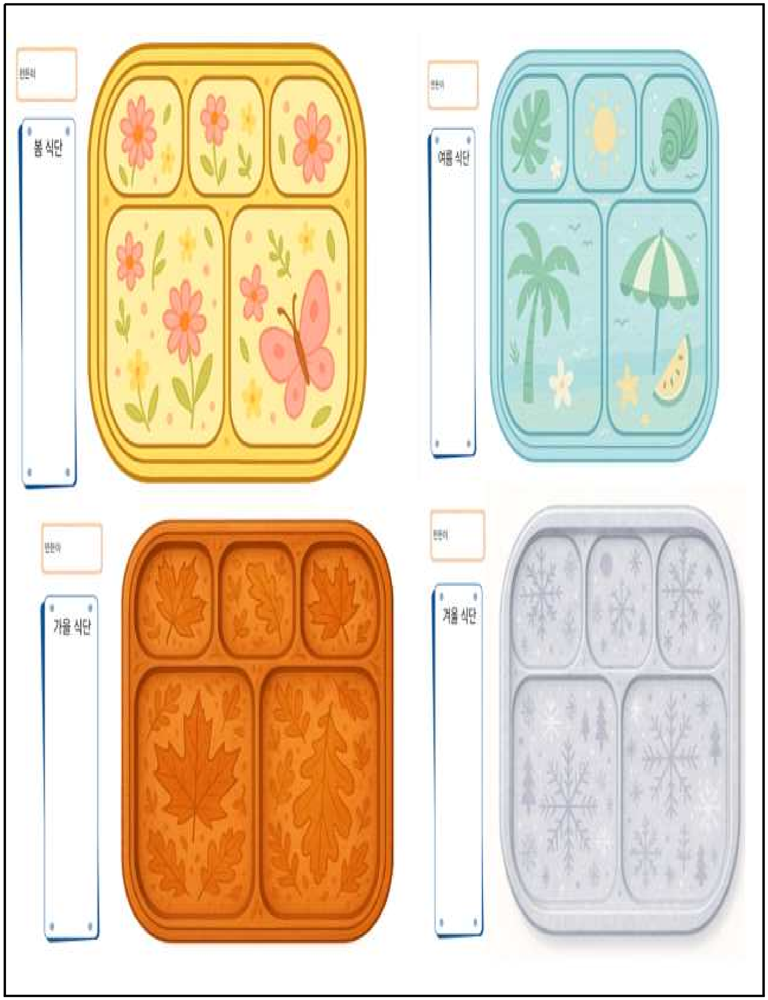
교과 융합 프로젝트 수업대덕초 · 2학년융합과목 | 수학, 슬기로운 생활 | 대 상 | 2학년 | 프로젝트 단계 | nite (협력하기) | ||||||
|---|---|---|---|---|---|---|---|---|---|---|---|
프로젝트 | 세계 여러 나라의 계절(3/4) | | |||||||||
성취기준 | [2수04-02] 자료를 분류하여 표로 나타내고, 자료를 표로 나타내면 편리한 점을 말할 수 있다. | ||||||||||
학습목표 | 세계 여러 나라의 계절 음식 자료를 분류하여 표로 나타내고, 표의 편리한 점을 말할 수 있다. | ||||||||||
수업전략 | 수업모형 | 문제해결 학습 모형 | 교과 역량 | 정보처리 역량 | |||||||
다문화 주도성 | | | |||||||||
☑ | ☑ | ☐ | ☑ | ||||||||
단계 (시간) | 학습요소 | 교수·학습 활동 | 자료(▶) 및 유의점(☞) |
|---|---|---|---|
문제 확인하기 (5′) | 동기유발 | ▣ 학습동기 유발 ◦ 지난 시간에 만든 계절 상차림과 음식 자료 살펴보기 ∙ 세계 여러 나라의 계절 음식을 살펴본다. ∙ 자료를 한눈에 알아보기 쉽게 정리하는 방법을 생각해 보게 한다. | ▶ 프레젠테이션 ☞ 지난 시간의 계절 상차림 활동과 자연스럽게 연결되도록 한다. |
공부할 문제 파악 | ▣ 공부할 문제 확인 ♣ 세계 여러 나라의 계절 음식 자료를 분류하여 표로 나타내 봅시다. | ||
문제해결방법 탐색하기 (10′) | 자료 분류하기 표 만드는 방법 알기 | ▣ 【활동1】 계절에 따라 음식 자료 분류하기 ◦ 여러 나라의 계절 음식 자료 살펴보기 ∙ 음식 자료에 나타난 나라, 음식 이름, 계절을 함께 확인해 봅시다. ∙음식 자료를 봄, 여름, 가을, 겨울로 나누어 분류해 봅시다. ∙ 분류한 음식 자료를 모둠별로 다시 확인해 봅시다. ◦ 분류한 자료를 정리하는 방법 알아보기 ∙ 분류한 자료의 개수를 세어 봅시다. ∙ 자료를 표로 나타낼 때 들어가야 할 내용을 확인해 봅시다. ∙ 표의 제목, 항목, 개수의 위치를 살펴봅시다. | ▶ 활동지 ☞ 표의 형식을 분명하게 강조하여 지도한다. |
문제 해결하기 (20‘) | 표 만들기 | ▣ 【활동2】 분류한 자료를 표로 나타내기 ◦ 음식 자료의 개수를 세어 표로 나타내기 ∙ 모둠별로 계절에 따라 분류한 음식 자료의 개수를 세 봅시다. ∙ 활동지의 표에 봄, 여름, 가을, 겨울 항목을 확인해 봅시다. ∙ 각 계절에 해당하는 음식 자료 수를 표에 적어 봅시다. ∙ 표의 제목을 정하고 완성해 봅시다. | ▶ 활동지 ☞ 자료의 개수를 빠뜨리지 않고 정확하게 세도록 한다. |
표 해석하기 | ▣ 【활동3】 표를 보고 알게 된 점 이야기하기 ◦ 완성한 표 살펴보기 ∙ 표를 보고 어떤 계절의 음식이 가장 많은지 살펴봅시다. ∙ 표를 보면 좋은 점이 무엇인지 생각해 봅시다. ∙ 모둠별로 완성한 표를 비교하며 공통점과 차이점을 살펴봅시다. | ▶ 활동지 ☞ 표를 보고 알 수 있는 내용을 말해 보도록 지도한다. | |
정리 하기 (5′) | 학습내용 정리하기 | ▣ 학습내용 정리 ◦ 배운 내용과 느낀 점 이야기하기 ∙ 여러 나라의 음식 문화를 보고 느낀점을 말해 봅시다. | |
▣ 차시 예고 ♣ 두 나라의 계절과 생활 모습을 생각하며 이어질 이야기를 상상해 봅시다. |
교과 융합 프로젝트 수업대덕초 · 2학년일 시 | 대 상 | 2학년 4반 | 교과서 | 국어 252~259(9/15) | 지도교사 | |||||||||
|---|---|---|---|---|---|---|---|---|---|---|---|---|---|---|
프로젝트 | 세계 여러 나라의 계절 (4/4) | ake | | |||||||||||
본시 성취기준 | [2국05-03] 작품 속 인물의 모습, 행동, 마음을 상상하여 시, 노래, 이야기, 그림 등으로 표현한다. | 본시 관련교과 | 국어 | |||||||||||
학습목표 | 등장인물의 마음이 드러나도록 이어질 이야기를 쓰고 친구들과 나눌 수 있다. | |||||||||||||
수업 모형 | 창의성 계발 모형 | 교과 역량 | 비판적·창의적 사고 역량 | |||||||||||
수업전략 | 수업 의도 | - 세계 여러 나라의 계절과 생활 모습을 탐구한 경험을 바탕으로, 한국과 이집트의 서로 다른 겨울 풍경을 소재로 이어질 이야기를 창작하도록 구성하였다. 학생들은 이야기 속 인물의 행동과 마음을 상상하고, 계절에 따른 자연환경과 생활 모습의 차이를 이야기 속에 표현한다. 또한 모둠 친구들과 작품을 공유하고 긍정적인 동료 피드백을 주고받으며, 다양한 문화를 존중하는 태도와 창의적 표현 능력을 기르고자 한다. | ||||||||||||
다문화 주도성 | | | ||||||||||||
☑ | ☑ | ☐ | ☑ | |||||||||||
이주배경학생 지도계획 | - 글쓰기 과정에서 낱말과 문장의 예시를 선택적으로 제공한다. 글을 쓰는 것을 어려워한다면, 그림이나 짧은 문장 등 다양한 방법으로 자신의 생각을 표현할 수 있도록 한다. | |||||||||||||
단계 (시간) | 학습요소 | 교수·학습 활동 | 자료(▶) 및 유의점(☞) |
|---|---|---|---|
문제 발견하기 (5´) | 동기유발 | ▣ 학습동기 유발 ◦ 한국과 이집트의 겨울 모습 비교하기 ∙ 두 사진을 살펴봅시다. 어떤 나라의 모습인가요? - 한국과 이집트의 모습입니다. ∙ 두 사진은 모두 겨울의 모습입니다. 어떤 점이 다른가요? - 한국에는 눈이 내리고 있지만 이집트는 햇볕이 따뜻합니다. ∙ 두 나라의 겨울 모습이 다른 까닭은 무엇일까요? - 나라마다 자연환경과 날씨가 다르기 때문입니다. ∙ 이 두 나라의 친구들이 만나 겨울에 대하여 이야기를 나눈다면 어떤 이야기를 나누게 될까요? | ▶ 프레젠테이션 ☞ 두 나라의 계절을 단순히 겨울과 여름으로 구분하지 않도록 한다. |
공부할 문제 파악 | ▣ 공부할 문제 확인 ♣ 두 나라의 계절과 생활 모습을 생각하며 이어질 이야기를 상상해 봅시다. | ||
학습활동 안내 | ▣ 학습활동 안내 【활동1】 두 친구의 마음 살펴보기 【활동2】 이어질 이야기 쓰기 【활동3】 이야기 작가 발표회 | ||
아이디어 생성하기 및 아이디어 선택하기 (10´) | 이야기 듣고 이어질 장면 상상하기 | ▣ 【활동1】 두 친구의 마음 살펴보기 ◦ ‘같은 겨울, 다른 풍경’ 이야기 듣기 ∙ 두 친구의 겨울은 어떻게 다른가요? - 민지는 눈이 내리는 겨울을 보내고 있습니다. - 아미르는 햇볕이 따뜻한 겨울을 보내고 있습니다. ◦ 이어질 이야기 상상하기 ∙ 두 친구가 서로에게 어떤 겨울 선물을 보낼 수 있을까요? - 서로의 겨울을 그림으로 그려 보낼 것입니다. ∙ 두 친구에게 어떤 새로운 일이 일어날 수 있을까요? - 서로의 겨울에 대해 새로운 질문을 할 것 같습니다. | ▶ 프레젠테이션, 이야기자료 ☞ 등장인물의 행동과 마음을 자유롭게 상상하도록 한다. |
교과 융합 프로젝트 수업대덕초 · 2학년단계 (시간) | 학습요소 | 교수·학습 활동 | 자료(▶) 및 유의점(☞) |
|---|---|---|---|
아이디어 적용하기 (14´) | 이야기 상상해서 쓰기 | ▣ 【활동2】 이어질 이야기 쓰기 ◦ 자신이 구상한 이야기 쓰기 ∙ 선택한 사건을 바탕으로 이야기를 써 봅시다. ∙ 한국과 이집트의 계절 모습이 나타나도록 이야기를 꾸며 봅시다. ∙ 등장인물의 마음을 생각하며 이야기를 써 봅시다. ∙ 이야기의 마지막 장면을 상상하며 글을 완성해 봅시다. | ▶ 프레젠테이션, 활동지 |
아이디어 적용하기 (8´) | 작품 나누기 | ▣ 【활동3】 이야기 작가 발표회 ◦ 모둠 친구들에게 이야기 들려주기 ∙ 모둠 친구들에게 완성한 이야기를 들려줍시다. ∙ 친구의 이야기를 듣고 계절의 특징과 등장인물의 마음이 잘 드러나는 부분을 찾아봅시다. ◦ 친구의 이야기를 듣고 잘한 점 칭찬하기 ∙ 친구의 이야기에서 인상 깊었던 부분은 무엇인가요? - 계절과 아주 잘 어울리는 선물을 준비한 점입니다. - 다른 나라 친구를 배려하는 모습을 잘 나타냈습니다. | ▶ 프레젠테이션, 활동지 ☞ 친구의 발표를 듣고 잘한 점을 구체적으로 찾아 칭찬하도록 한다. |
정리하기 (3´) | 학습내용 정리 | ▣ 학습내용 정리하기 ◦ 프로젝트 활동 돌아보기 ∙ 세계 여러 나라의 계절을 알아보며 새롭게 알게 된 점은 무엇인가요? - 나라마다 계절과 날씨, 생활 모습이 모두 다릅니다. ∙ 서로 다른 나라의 생활 모습을 대할 때 어떤 태도를 가져야 할까요? - 서로의 차이를 존중합니다. | ☞ 나라별로 생활 모습의 차이를 존중하는 태도를 강조한다. |
▣ 차시 예고 ♣ 릴레이 이야기를 만들어 봅시다. |
판서계획 | 8. 나도 작가 | ||
|---|---|---|---|
♣ 두 나라의 계절과 생활 모습을 생각하며 이어질 이야기를 상상해 봅시다. | <이야기를 이어쓸 때 생각할 점> 1. 계절에 따른 날씨와 생활 모습 2. 등장인물의 행동과 마음 3. 앞부분과 자연스럽게 이어지는 사건 <친구의 작품을 감상하는 방법> 잘한 점을 찾으면서 듣고 칭찬해주기 | ||
【활동1】 두 친구의 마음 살펴보기 【활동2】 이어질 이야기 쓰기 【활동3】 이야기 작가 발표회 |
평가 계획 | 평가내용 | 척도 | 채점 기준 | 평가 방법 |
|---|---|---|---|---|
한국과 이집트의 계절과 생활 모습을 바탕으로 등장인물의 행동과 마음을 상상하여 이어질 이야기를 쓰고 친구들과 나눌 수 있는가? | 매우 잘함 | 계절에 따른 생활 모습과 등장인물의 행동 및 마음을 구체적으로 상상하여 이야기를 창의적으로 이어쓰고, 다른 친구의 발표를 듣고 칭찬할 점을 생각해 말할 수 있다. | 관찰법 | |
잘함 | 계절에 따른 생활 모습과 등장인물의 행동 및 마음을 상상하여 이야기를 쓰고, 친구들의 이야기를 바른 태도로 경청한다. | |||
보통 | 교사와 친구의 도움을 받아 등장인물의 행동이나 마음을 상상하는 글쓰기를 할 수 있다. | |||
이주배경학생 평가 시 유의점 | 글의 분량이나 맞춤법보다는 등장인물의 행동과 마음을 상상하여 표현하는 과정에 중점을 두며, 그림과 짧은 문장 등 다양한 표현 방식을 허용한다. 또한 친구의 작품을 존중하며 감상하고 의견을 나누는 과정도 긍정적으로 평가한다. | |||
교과 융합 프로젝트 수업대덕초 · 2학년1. 이야기 속 두 친구의 마음을 상상해요
(1) 민지는 이집트의 겨울 이야기를 듣고 어떤 생각을 했을까요?
(2) 아미르는 한국의 겨울 이야기를 듣고 어떤 생각을 했을까요?
2. 이어질 이야기를 계획해 보아요. 생각할 내용 나의 생각
민지가 준비한 겨울 선물
아미르가 준비한 겨울 선물
두 친구에게 일어날 새로운 일
이야기의 마지막 장면
3. 이어질 이야기를 써요.
4. 친구를 칭찬해요
네 글에서 계절의 모습이 잘 드러난 부분은 ( )이야. 네 글에서 인물의 마음이 잘 드러난 부분은 ( )이야.
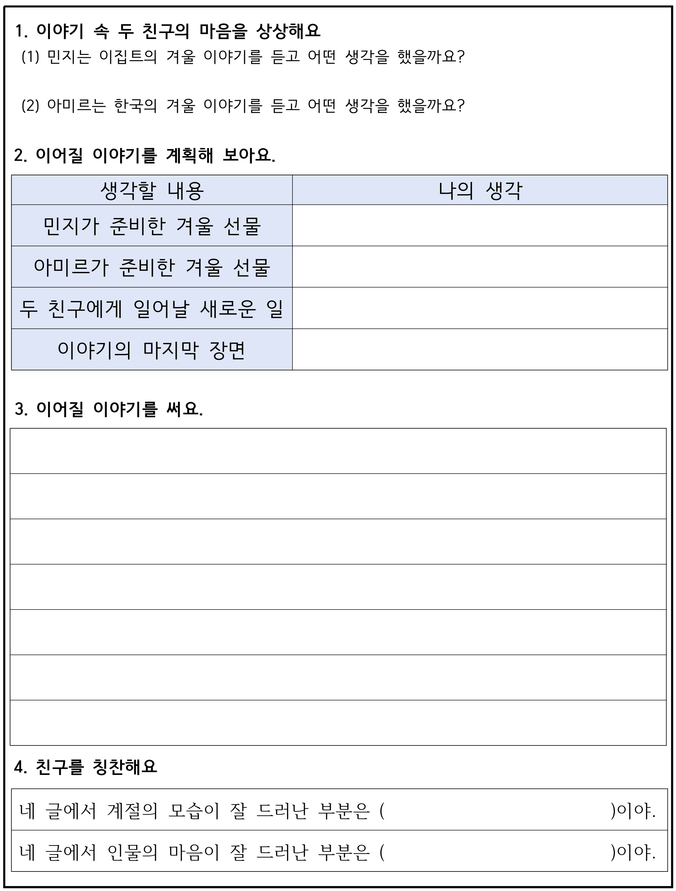
모두를 위한 문화, 더 나은 우리
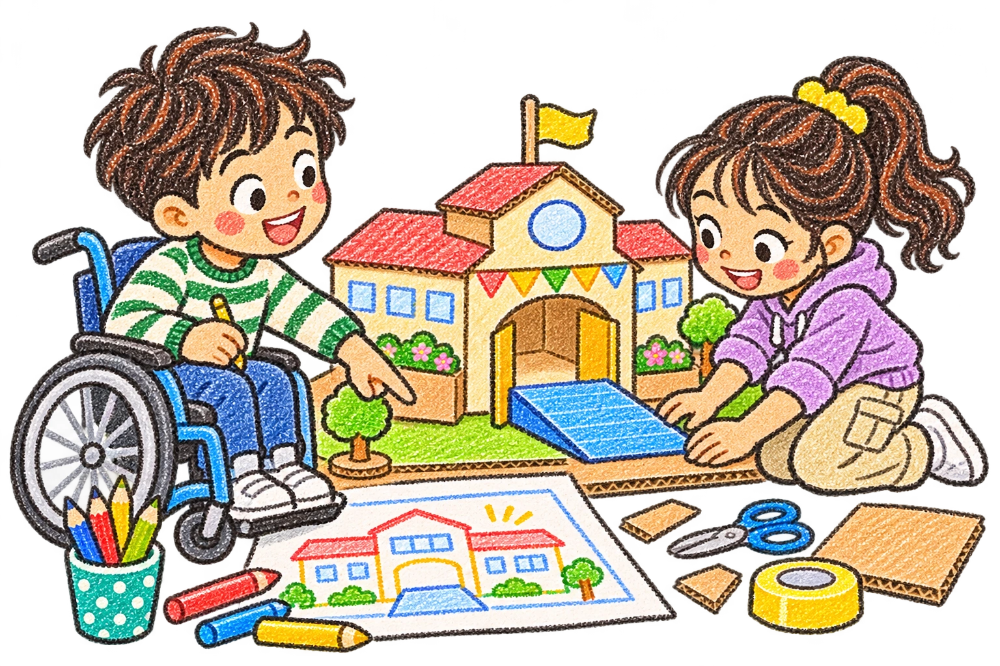
| 차시 | 교과 | 학습 주제 | 교과 역량 |
|---|---|---|---|
| 1 | 사회 | 배울 내용을 알아보고 프로젝트 계획하기 | 문제해결 역량 |
| 2 | 사회 | 문화의 의미와 특징 알기 | 정보활용 능력 |
| 3 | 사회 | 그림 그래프를 읽고 다양한 문화 찾기 | 정보활용 능력 |
| 4 | 미술 | 전통의상의 무늬를 탐색하고 나만의 무늬 만들기 | 창의‧융합 역량 |
| 5~6 | 사회 | 다양한 문화를 조사하고 소개 자료 만들기 | 정보활용 능력 |
| 7 | 사회 | 다양한 문화가 함께할 때의 좋은 점 알기 | 의사소통 및 협업능력 |
| 8~9 | 사회 | 편견과 차별을 알고 공감을 통해 사회 문제 해결하기 | 공동체 역량 |
| 10 | 사회 | 모두를 위한 디자인 설계하기 | 창의적 사고력 |
교과 융합 프로젝트 수업대덕초 · 3학년설계 의도 본 프로젝트는 초등학교 3학년 학생들이 다양한 문화의 의미와 가치를 이해하고, 문화적 차이를 존중하며 더불어 살아가는 다문화 수용성을 함양하는 데 목적이 있다. 사회과를 중심으로 음악, 미술, 국어, 수학, 도덕 교과를 융합하여 문화 탐색부터 협력적 문제 해결과 실천까지 단계적으로 구성하였다. 학생들은 다양한 문화의 공존 가치를 발견하고, ‘모두를 위한 디자인’을 제작하며 서로의 차이를 존중하고 공동체 문제를 주도적으로 해결하는 역량을 기르고자 한다.
| 융합과목 | 사회 | 사회 변화와 다양한 문화 | 성취 기준 | [4사03-02] 우리 사회에 다양한 문화가 확산되면서 나타나는 긍정적 효과와 문제를 분석하고, 나와 다른 사람이나 집단의 문화를 존중하는 태도를 기른다. |
|---|---|---|---|---|
| 음악 | 4. 나누어요, 음악의 기쁨 | [4음02-02] 다양한 음악을 듣고 음악적 특징을 발견한다. | ||
| 미술 | 12. 달라서 특별해 | [4미02-05] 미술과 타 교과를 관련지어 주제를 표현하는데 흥미를 가질 수 있다. | ||
| 국어 | 2. 유창하게 읽고 발표해요. | [4국01-05] 목적과 주제에 알맞게 자료를 정리하여 자신감있게 발표한다. | ||
| 수학 | 6. 그림그래프 | [4수04-01] 자료를 수집하여 그림그래프나 막대그래프로 나타내고 해석할 수 있다. | ||
| 도덕 | 6. 함께 가는 공정의 길 | [4도03-01] 불공정의 사례를 탐구하고, 일상생활에서 공정의 가치를 추구하는 활동을 통해 실천 의지를 함양한다. |
| 차시 | 프로젝트 단계 | 주요 학습 내용 | 관련 교과 | 학습자료 | |
|---|---|---|---|---|---|
| 1 | et 준비하기 | 다른 나라의 음악과 문화를 살펴보고 경험 나누기 -놀이를 통해 배울 낱말을 익히고 프로젝트 계획하기 | 사회, 음악 | 스마트 패드 | |
| 2 | -바른 예와 아닌 예를 통해 문화의 의미 알기 -자신이 알고 있는 다른 나라의 문화를 소개하고 같은 점, 다른 점을 찾아 문화의 특징 발견하기 | 사회, 음악 | 띵커벨,활동지 | ||
| 3 | xplore 탐구하기 | | 그림그래프를 읽고 우리 사회의 변화 발견하기 우리 주변의 다양한 문화 찾기 | 사회, 수학 | 사진카드 |
| 4 | -여러 나라 전통의상의 무늬 탐색하기 -나를 나타내는 나만의 무늬 만들기 | 사회, 미술 | 활동지, 색연필 | ||
| 5-6 | 우리 주변의 다양한 문화가 함께하는 모습 조사하기 조사한 내용을 정리하여 문화 소개 자료 만들기 | 사회, 국어 | 활동지 | ||
| 7 | 문화 소개 자료 설명하기 문화가 함께하면 좋은 점 알아보기 | 사회, 국어 | 띵커벨, 활동지 | ||
| 8-9 | nite 협력하기 | | -문화 차이로 인해 발생하는 일상 속 갈등 상황 살펴보기 모두를 위한 디자인 제작하기 | 사회, 도덕 | 캔바 |
| 10 | ake 표현하기 | 모두를 위한 디자인 공유 및 감상하기 프로젝트 과정을 성찰하고 다문화 공감을 위한 다짐하기 | 사회, 도덕 | 패들렛 | |
✔음악과 놀이 활동을 통해 문화의 의미와 특징을 이해하고 다양한 문화에 대한 감수성과 포용력을 함양하기 | |
| ✔학생들이 스스로 관심 있는 나라의 음악, 전통무늬를 선택하여 필요한 정보와 의미를 찾아보고 자신의 관심사를 반영한 무늬 고안하기 |
| ✔문화적 차이로 발생하는 일상 속 갈등을 탐색하고, 자신의 문화적 강점과 창의성을 활용한 ‘모두를 위한 디자인’ 제작을 통해 공동체 문제 해결에 주도적으로 참여하고 기여하는 역량 기르기 |
| ✔낯선 문화나 다문화 갈등 상황에서 오는 어색함과 오해를 경험하고, 모두를 위한 디자인 설계를 통해 문제 상황을 해결하기 위한 주도적인 대응 방안을 모색하기 |
교과 융합 프로젝트 수업대덕초 · 3학년ake ⑩| 평가내용 | 평가방법 | 매우 잘함 | 잘함 | 보통 | |
|---|---|---|---|---|---|
①배울 내용을 알아보고 프로젝트 계획하기 [4사03-02] | 관찰법 | 활동에 적극적으로 참여하여 배울 내용을 알아보고 프로젝트를 주도적으로 계획할 수 있다. | 활동에 참여하여 배울 내용을 알아보고 프로젝트를 계획할 수 있다. | 배울 내용을 알아보고 도움을 받아 프로젝트를 계획할 수 있다. | |
②문화 사례를 비교하여 문화의 의미와 특징 설명하기 [4사03-02] | 관찰법 | 문화의 의미를 정확하게 설명하고, 다양한 문화 사례를 비교하여 문화의 특징을 구체적인 근거와 함께 설명할 수 있다. | 문화의 의미를 이해하고, 문화 사례를 바탕으로 문화의 특징을 설명할 수 있다. | 교사나 친구의 도움을 받아 문화의 의미를 이해하고, 문화의 특징을 부분적으로 설명할 수 있다. | |
③그림그래프를 읽고 주변에 확산되는 문화 찾기 [4사03-02] | 구술 | 그림그래프를 정확하게 읽고, 그래프 속 변화와 관련된 우리 주변의 다양한 문화를 여러 가지 찾아 설명할 수 있다. | 그림그래프를 읽고, 우리 주변의 다양한 문화를 찾을 수 있다. | 도움을 받아 그림그래프를 읽고, 우리 주변의 다양한 문화를 한 가지 찾을 수 있다. | |
④전통의상 무늬의 특징을 살려 나만의 무늬 만들기 [4미02-05] | 관찰법 | 여러 나라 전통의상 무늬의 특징을 정확히 찾고, 이를 활용해 개성 있는 나만의 무늬를 만들어 그 뜻을 설명할 수 있다. | 여러 나라 전통의상 무늬의 특징을 찾고, 이를 활용해 나만의 무늬를 만들 수 있다. | 도움을 받아 무늬의 특징을 찾고, 나만의 무늬를 만들 수 있다. | |
⑤~⑥다양한 문화가 함께하는 모습을 조사하고 소개 자료로 정리하기 [4사03-02] | 관찰법 | 우리 주변에서 다양한 문화가 함께하는 구체적인 사례를 조사하고 조사한 내용을 알기 쉽게 정리할 수 있다. | 우리 주변에서 다양한 문화가 함께하는 사례를 조사하고, 조사한 내용을 정리할 수 있다. | 주변의 도움을 받아 다양한 문화가 함께하는 사례를 조사하고 정리할 수 있다. | |
⑦여러 문화가 함께할 때의 좋은 점을 사례로 설명하기 [4사03-02] | 관찰법 | 다양한 문화가 함께할 때의 좋은 점을 구체적인 사례와 연결하여 자세히 설명할 수 있다. | 다양한 문화가 함께할 때의 좋은 점을 설명할 수 있다. | 교사나 친구의 도움을 받아 다양한 문화가 함께 할 때의 좋은 점을 말할 수 있다. | |
⑧~⑨편견과 차별에 관련된 생활 속 문제 해결하기 [4사03-02] | 관찰법 | 편견 및 차별과 관련된 실생활 문제를 능숙하게 해결할 수 있다. | 편견 및 차별과 관련된 실생활 문제를 해결할 수 있다. | 편견 및 차별과 관련된 실생활 문제를 도움을 받아 해결할 수 있다. | |
⑩모두를 위한 디자인으로 생활 속 불편 해결하기 [4사03-02] | 관찰법 | 모두를 위한 디자인을 활용하여 일상생활 속 불편함을 능숙하게 해결할 수 있다. | 모두를 위한 디자인을 활용하여 일상생활 속 불편함을 해결할 수 있다. | 일상생활 속 불편함을 도움을 받아 해결할 수 있다. | |
| 이주배경학생 평가 시 유의점 | |||||
② 언어·문화적 경험을 존중하고 문화 사례의 공통점과 차이점을 찾는 과정을 평가한다. | ④ 가정의 전통 무늬를 강점으로 인정하고 그림·몸짓·모국어로 표현한 의도를 평가한다. | ||||
⑦ 문화적 경험을 인정하고 여러 문화가 함께하는 좋은 점을 이해하고 설명하는 과정을 평가한다. | ⑩ 언어·문화를 강점으로 인정하고 모둠에서 맡은 역할, 시각적 기여와 협력을 평가한다. | ||||
※ ⑧~⑨차시는 프로젝트 수업 설계에 따라 협력하기(Unite)로 표시했습니다. 본시 지도안에는 만들기(Make)로 표기되어 있습니다. | |||||
교과 융합 프로젝트 수업대덕초 · 3학년융합과목 | 사회, 음악 | 대 상 | 3학년 | 프로젝트 단계 | et 준비하기 | ||||||
|---|---|---|---|---|---|---|---|---|---|---|---|
프로젝트 | (1/10) | | |||||||||
성취기준 | [4사03-02] 우리 사회에 다양한 문화가 확산되면서 나타나는 긍정적 효과와 문제를 분석하고, 나와 다른 사람이나 집단의 문화를 존중하는 태도를 기른다. | ||||||||||
학습목표 | 배울 내용이 무엇인지 알아보고 프로젝트를 계획할 수 있다. | ||||||||||
수업전략 | 수업모형 | 문제 해결 학습 | 교과 역량 | 문제해결 역량 | |||||||
다문화 주도성 | | | |||||||||
☑ | ☑ | ☑ | ☑ | ||||||||
단계 (시간) | 학습요소 | 교수·학습 활동 | 자료(▶) 및 유의점(☞) |
|---|---|---|---|
문제제기 (5′) | 동기유발 | ▣ 학습동기 유발 ◦ 한국과 영국의 노래를 들으며 경험 떠올리기 ∙ 제재곡을 들으며 자신의 경험을 떠올려 봅시다. | ▶ 프레젠테이션 |
공부할 문제 파악 | ▣ 공부할 문제 확인 ♣ 배울 내용이 무엇인지 알아보고 프로젝트를 계획해 봅시다. | ||
문제해결방법 탐색하기 (20′) | 경험 나누기 | ▣ 【활동1】 음악으로 경험 나누기 ◦ 제재곡 따라 부르기 ∙ 영국의 ‘꼬마 기차놀이’를 다함께 따라 불러 봅시다. ∙ 노래를 부르며 어떤 경험이 떠올랐나요? ∙ 우리 나라의 어떤 노래와 놀이가 떠올랐나요? ∙ 두 노래의 닮은 점과 다른 점은 무엇인가요? | ☞ 음악의 제재곡과 관련하여 이주배경학생의 나라에서 경험한 비슷한 노래와 놀이를 떠올려 발표하게 한다. |
경험과 낱말 연관짓기 | ▣ 【활동2】 음악과 함께 외쳐라 빙고 ◦ 낱말 구름 속 단어 살펴보기 ∙ 사진과 관련된 낱말을 떠올리며 낱말 구름 속 단어를 살펴 봅시다. ◦ 외쳐라 빙고 놀이하기 ∙ 낱말 구름에 있는 낱말을 이용해 빙고 놀이를 해 봅시다. | ☞ 노랫말 ‘누구’에 친구의 이름을 넣어 빙고 놀이를 한다. | |
문제 해결하기 (10‘) | 프로젝트 계획하기 | ▣ 【활동3】 프로젝트 계획하기 ◦ 교과서 질문 살펴보며 배울 내용 추측하기 ∙ 교과서에 제시된 질문을 살펴 봅시다. ∙ 어떤 활동들을 하고 싶은지 이야기 해 봅시다. ◦ 프로젝트 계획하고 안내하기 ∙ 여러분들이 하고 싶은 활동을 담아 프로젝트를 계획해 봅시다. | ☞ 교사가 사전에 계획해 놓은 8차시 주제 안에 학생들의 의견이 반영될 수 있도록 계획한다. |
평가 하기 (5′) | 학습내용 정리하기 | ▣ 학습내용 정리 ◦ 배운 내용과 느낀 점 이야기하기 ∙ 오늘 배운 낱말을 넣어 느낀 점을 말해 봅시다. ∙ 앞으로 수업에서 기대되는 점을 이야기해 봅시다. | ▶ 스마트 패드 |
▣ 차시 예고 ♣ 문화의 의미와 특징을 알아봅시다. |
교과 융합 프로젝트 수업대덕초 · 3학년일 시 | 대 상 | 3학년 1반 | 교과서 | 사회 36~37(2/10) | 지도교사 | ||||||||||
|---|---|---|---|---|---|---|---|---|---|---|---|---|---|---|---|
프로젝트 | 모두를 위한 문화, 더 나은 우리 (2/10) | et | | ||||||||||||
본시 성취기준 | [4사03-02] 우리 사회에 다양한 문화가 확산되면서 나타나는 긍정적 효과와 문제를 분석하고, 나와 다른 사람이나 집단의 문화를 존중하는 태도를 기른다. | 본시 관련교과 | 사회 | ||||||||||||
학습목표 | 문화의 의미와 특징을 알 수 있다. | ||||||||||||||
수업 모형 | 일반화 학습 모형 | 교과 역량 | 정보 활용 능력 | ||||||||||||
수업전략 | 수업 의도 | - 학생들은 문화의 사례를 탐색하고 공유하는 과정을 통해 문화의 의미를 스스로 발견하고, 서로 다른 문화의 공통점과 차이점을 비교하여 문화의 특징을 발견하도록 구성하였다. - 이주배경학생을 포함한 모든 학생이 자신의 문화적·언어적 경험을 학습 자원으로 활용하고, 다양한 문화를 동등한 관점에서 바라보며 문화적 차이를 자연스럽게 수용하는 다문화 수용성을 기르고자 한다. | |||||||||||||
다문화 주도성 | | | |||||||||||||
☑ | ☑ | ☐ | ☐ | ||||||||||||
이주배경학생 지도계획 | - 이주배경학생이 자신이 경험하거나 알고 있는 문화를 모국어, 한국어, 그림 등 다양한 방법으로 표현할 수 있도록 하며, 짝 활동과 디지털 도구를 활용하여 의사소통의 부담을 줄인다. | ||||||||||||||
단계 (시간) | 학습요소 | 교수·학습 활동 | 자료(▶) 및 유의점(☞) |
|---|---|---|---|
문제 제기 (5´) | 동기유발 | ▣ 학습동기 유발 ◦ 한국과 영국의 기차놀이 영상 살펴보기 ∙ 음악 시간에 배운 영국의 꼬마 기차놀이 노래를 불러봅시다. - 두 나라의 언어로 노래를 부릅니다. ∙ 한국과 영국의 기차놀이의 같은 점과 다른 점은 무엇인가요? - 같은 기차놀이지만 놀이 방법이 다릅니다. | ▶ 프레젠테이션 ☞ 음악시간에 배운 노래의 놀이 영상을 통해 서로의 같음과 다름을 생각하게 한다. |
공부할 문제 파악 | ▣ 공부할 문제 확인 ♣ 문화의 의미와 특징을 알아봅시다. | ||
학습활동 안내 | ▣ 학습활동 안내 【활동1】 문화의 의미 알기 【활동2】 문화 소개하기 【활동3】 문화의 특징 알기 | ||
관련개념분석 (10´) | 다양한 예를 통해 문화의 의미 알기 | ▣ 【활동1】 문화의 의미 알기 ◦ 문화에 대해 알아보기 ∙ 여러분이 알고 있는 문화란 무엇인지 말해봅시다. - 문화란 음식이나 입는 옷 등 나라마다 나타나는 특징입니다. ∙ 퀴즈를 해결하며 문화인지 아닌지 생각해 봅시다. ∙ 한국에선 생일에 무엇을 먹나요? - 미역국입니다. ∙ 이것은 문화입니까, 아닙니까? 그 이유는 무엇입니까? - 이것은 문화입니다. 왜냐하면 한국인들은 다 그렇기 때문입니다. ∙ 퀴즈를 통해 알게 된 문화의 의미를 이야기해 봅시다. - 문화란, 한 사회의 구성원들이 가지고 있는 공통의 생활 방식을 말합니다. | ▶ 프레젠테이션, 띵커벨 활동지 ☞ 학생이 기존에 알고 있던 지식과 경험을 토대로 자유롭게 말하도록 지도한다. ☞ 퀴즈를 통해 발견한 공통점과 차이점을 바탕으로 문화의 의미를 이끌어 낸다. |
교과 융합 프로젝트 수업대덕초 · 3학년단계 (시간) | 학습요소 | 교수·학습 활동 | 자료(▶) 및 유의점(☞) |
|---|---|---|---|
자료수집 (10´) | 여러 나라의 문화 소개하기 | ▣ 【활동2】 문화 소개하기 ◦ 내가 알고 있는 여러 나라의 문화 소개하기 ∙ 문화라고 할 수 있는 예에는 어떤 것들이 있을까요? - 식사문화, 인사문화 등이 있습니다. ∙ 여러분들이 알고 있는 다른 나라의 문화를 띵커벨에 자유롭게 써 봅시다. - 띵커벨에 접속하여 자신이 알고 있는 문화를 기록한다. ∙ 우리가 알고 있는 문화를 친구들에게 소개해 봅시다. - 프랑스에서는 사진을 찍을 때 위스띠띠라고 합니다. | ▶ 프레젠테이션, 띵커벨 ☞ 영역별 문화의 모습을 사진으로 보여주어 다양한 문화를 소개할 수 있도록 유도한다. |
일반화 도출 및 결론 (10´) | 자료를 분석하여문화의 특징 알기 | ▣ 【활동3】 문화의 특징 알기 ◦ 그림을 통해 문화의 특징 알아보기 ∙ 나누어준 그림을 살펴보고 힌트를 얻어 문장을 완성하세요. - 짝꿍과 그림을 살펴보고 소통하며 문장을 완성한다. ∙ 첫 번째 그림을 통해 알 수 있는 문화의 특성은 무엇입니까? - 사회(나라)마다 문화가 다르다는 것입니다. ∙ 마지막 그림을 통해 알 수 있는 문화의 특성은 무엇입니까? - 문화가 오랫동안 전해져 내려오기도 한다는 것입니다. | ▶ 프레젠테이션, 활동지 ☞ 짝꿍과 함께 그림자료를 분석하며 의사소통능력을 기른다. |
정리하기 (5´) | 학습내용 정리 | ▣ 학습내용 정리하기 ◦ 배운 내용 정리하기 ∙ 오늘 배운 내용을 떠올리며 문화가 무엇인지 말해봅시다. - 문화란, 한 사회의 구성원들이 가지고 있는 공통의 생활 방식을 말합니다. ∙ 오늘 활동을 통해 느낀 점을 이야기 해 봅시다. - 문화는 나라마다 다양하지만 공통점이 있다는 것도 알게 되었습니다. | ☞ 배운 내용을 정리하는 활동을 통해 다문화 수용성과 감수성을 높이도록 지도한다. |
▣ 차시 예고 ♣ 우리 주변의 다양한 문화의 모습을 찾아봅시다. |
판서계획 | 2. 다양한 문화에 대한 이해와 존중 | ||
|---|---|---|---|
♣ 문화의 의미와 특징을 알아봅시다. | * 문화란? * 문화의 특징 | ||
【활동1】 문화의 의미 알기 【활동2】 문화 소개하기 【활동3】 문화의 특징 알기 |
평가 계획 | 평가내용 | 척도 | 채점 기준 | 평가 방법 |
|---|---|---|---|---|
다양한 문화 사례를 통해 문화의 의미를 이해하고, 문화의 공통점과 차이점을 바탕으로 문화의 특징을 설명할 수 있는가? | 매우 잘함 | 문화의 의미를 정확하게 설명하고, 다양한 문화 사례를 비교하여 문화의 특징을 구체적인 근거와 함께 설명할 수 있다. | 관찰법 | |
잘함 | 문화의 의미를 이해하고, 문화 사례를 바탕으로 문화의 특징을 설명할 수 있다. | |||
보통 | 교사나 친구의 도움을 받아 문화의 의미를 이해하고, 문화의 특징을 부분적으로 설명할 수 있다. | |||
이주배경학생 평가 시 유의점 | 이주배경학생이 지닌 문화적·언어적 경험을 긍정적인 학습 자원으로 인정하고, 출신 문화에 대한 지식이나 발표의 유창성보다는 다양한 문화 사례를 이해하고 공통점과 차이점을 발견하는 사고 과정에 중점을 두어 평가한다. | |||
교과 융합 프로젝트 수업대덕초 · 3학년1. ‘문화’ 하면 떠오르는 단어를 써 봅시다.
관련단어
2. 다음의 상황을 떠올리며 빈칸을 채우고, 문화인지 아닌지 판별해 봅시다. 한국에선 생일에 ( )을 먹는다. 이것은 문화가 (맞다, 아니다)
대체로 사람들은 ( ) 때 하품을 한다. 이것은 문화가 (맞다, 아니다)
햇볕이 강한 사막 지역에서는 주로 ( ) 옷을 입는다. 이것은 문화가 (맞다, 아니다)
유럽에서는 주로 밥을 먹을 때 ( )와 나이프를 사용한다. 이것은 문화가 (맞다, 아니다)
사람들이 걸을 때 ( )을 흔든다. 이것은 문화가 (맞다, 아니다)
몽골에서는 이동이 많아 ( )라는 천막 집에서 산다. 이것은 문화가 (맞다, 아니다)
사람들은 목이 마르면 ( )을 마신다. 이것은 문화가 (맞다, 아니다)
문화란?
3. 짝꿍과 함께 그림 자료를 살펴보고 문화의 특징을 알아봅시다.
그림자료 1 사회(나라)마다 문화가 ( ).
그림자료 2 각 사회의 문화는 서로 ( )도 있고, ( )도 있다. 그림자료 3 사람들이 함께 생활하며 ( ) 문화가 만들어진다. 그림자료 4 문화가 오랫동안 ( )기도 한다.
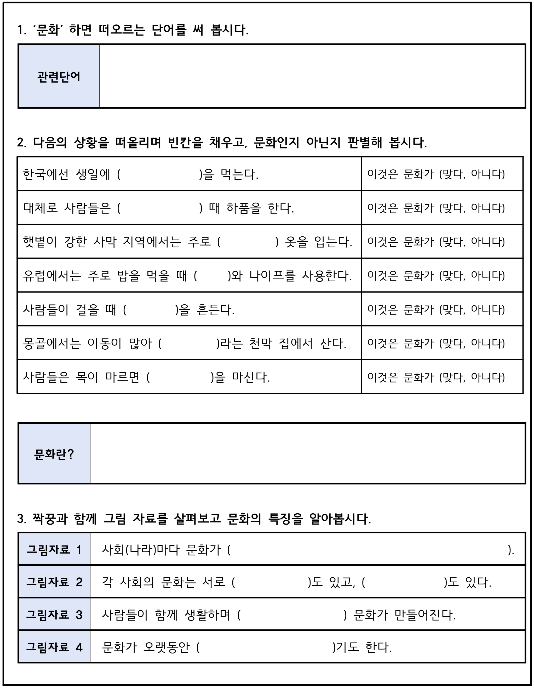
교과 융합 프로젝트 수업대덕초 · 3학년융합과목 | 사회, 수학 | 대 상 | 3학년 | 프로젝트 단계 | xplore (탐구하기) | ||||||
|---|---|---|---|---|---|---|---|---|---|---|---|
프로젝트 | 모두를 위한 문화, 더 나은 우리(3/10) | | |||||||||
성취기준 | [4사03-02] 우리 사회에 다양한 문화가 확산되면서 나타나는 긍정적 효과와 문제를 분석하고, 나와 다른 사람이나 집단의 문화를 존중하는 태도를 기른다. | ||||||||||
학습목표 | 그림그래프를 읽고 우리 주변의 다양한 문화를 찾을 수 있다. | ||||||||||
수업전략 | 수업모형 | 문제해결 학습 모형 | 교과 역량 | 정보 활용 능력 | |||||||
다문화 주도성 | | | |||||||||
☑ | ☑ | ☑ | ☐ | ||||||||
단계 (시간) | 학습요소 | 교수·학습 활동 | 자료(▶) 및 유의점(☞) |
|---|---|---|---|
문제 확인하기 (5′) | 동기유발 | ▣ 학습동기 유발 ◦ 서정이의 ‘우리 동네 이웃 사진전’ 살펴보기 ∙ 우리 동네에서 사진과 비슷한 모습을 본 적이 있나요? | ▶ 프레젠테이션 (사회 38쪽 사진) |
공부할 문제 파악 | ▣ 공부할 문제 확인 ♣ 그림그래프를 읽고 우리 주변의 다양한 문화를 찾아봅시다. | ||
문제해결방법 탐색하기 (5′) | 그림 그래프 읽는 법 알아보기 | ▣ 【활동1】 그림그래프 읽는 법 확인하기 ◦ ‘우리 반 학생들이 좋아하는 나라 음식’ 그림그래프 읽기 ∙ 그래프의 제목은 무엇인가요? ∙ 큰 그림과 작은 그림은 각각 몇 명을 나타내나요? ∙ 그림의 수를 세어 음식별 학생 수를 알아봅시다. | ▶ 그림그래프 예시 ☞ 큰 그림과 작은 그림의 단위를 확인하게 한다. |
문제 해결하기 (25‘) | 사회 변화 읽기 | ▣ 【활동2】 우리 사회의 변화 읽기 ◦ 우리나라에 사는 외국인 수 그림그래프 읽기 ∙ 2012년과 2022년의 외국인 수를 비교해 봅시다. ◦ 1인 가구 수 그림그래프 읽기 ∙ 두 그래프에서 알 수 있는 사실을 이야기해 봅시다. | ▶ 사회 39~40쪽 ▶ 모둠 활동지 |
다양한 문화 찾기 | ▣ 【활동3】 우리 주변의 다양한 문화 찾기 ◦ 생활 모습 사진 카드 분류하기 ∙ 외국인 이주민, 1인 가구, 반려동물 관련 모습으로 나누기 ◦ 우리 동네의 다양한 문화 찾기 ∙ 우리 동네에서 본 다양한 문화를 붙임쪽지에 써 봅시다. | ▶ 사진 카드 (지도서 146쪽) ▶ 붙임쪽지 ☞ 학생의 가정 형태가 드러나지 않게 한다. | |
평가 하기 (5′) | 학습내용 정리하기 | ▣ 학습내용 정리 ◦ 배운 내용과 느낀 점 이야기하기 ∙ 그래프에서 알게 된 우리 사회의 변화를 말해 봅시다. ∙ 우리 주변에서 찾은 다양한 문화를 한 가지씩 말해 봅시다. | ☞ 구술 평가 |
▣ 차시 예고 ♣ 전통의상의 무늬를 탐색하고 나만의 무늬를 만들어 봅시다. |
교과 융합 프로젝트 수업대덕초 · 3학년일 시 | 대 상 | 3학년 2반 | 교과서 | 미술 68~69(2/4) | 지도교사 | ||||||||||
|---|---|---|---|---|---|---|---|---|---|---|---|---|---|---|---|
프로젝트 | 모두를 위한 문화, 더 나은 우리 (4/10) | xplore | | ||||||||||||
본시 성취기준 | [4미02-05] 미술과 타 교과를 관련지어 주제를 표현하는 데 흥미를 가질 수 있다. | 본시 관련교과 | 미술 | ||||||||||||
학습목표 | 여러 나라의 전통의상에서 무늬를 탐색하고 나만의 무늬를 만들 수 있다. | ||||||||||||||
수업 모형 | 문제해결 학습 모형 | 교과 역량 | 창의·융합 역량 | ||||||||||||
수업전략 | 수업 의도 | - 전통의상의 무늬에는 그 나라 사람들의 자연환경, 생활 모습, 바라는 마음이 담겨 있다. 여러 나라의 무늬를 탐색하며 문화마다 아름다움을 표현하는 방식은 다르지만 모두 특별하다는 것을 경험하게 한다. - 탐색한 무늬의 표현 방법(반복, 대칭)에 나를 나타내는 모양을 더해 나만의 무늬를 만들어 나의 개성을 표현해 보고 다른 친구들의 무늬를 감상하며 서로 다름에서 오는 아름다움을 느껴보도록 한다. | |||||||||||||
다문화 주도성 | | | |||||||||||||
☑ | ☑ | ☑ | ☐ | ||||||||||||
이주배경학생 지도계획 | - 이주배경학생이 원하면 가정의 전통의상 사진이나 무늬 자료를 미리 받아 소개할 기회를 주되 강요하지 않으며, 한국어 수준을 고려하여 무늬 이름과 활동 방법을 그림 카드로 안내한다. | ||||||||||||||
단계 (시간) | 학습요소 | 교수·학습 활동 | 자료(▶) 및 유의점(☞) |
|---|---|---|---|
문제 확인하기 (5´) | 동기유발 | ▣ 학습동기 유발 ◦ 친구들의 옷 무늬 살펴보기 ∙ 오늘 내 옷이나 친구 옷에는 어떤 무늬가 있나요? - 줄무늬와 별 모양 무늬가 있어요. ∙ 다른 나라의 전통의상에도 무늬가 있을까요? - 꽃이나 동물 모양 무늬가 있을 것 같아요. | ☞ 학생들의 옷 무늬로 자연스럽게 관심을 이끈다. |
공부할 문제 파악 | ▣ 공부할 문제 확인 ♣ 전통의상의 무늬를 탐색하고 나만의 무늬를 만들어 봅시다. | ||
학습활동 안내 | ▣ 학습활동 안내 【활동1】 전통의상 무늬 찾기 【활동2】 무늬의 특징 알기 【활동3】 나만의 무늬 만들기 | ||
문제 해결 방법 탐색 하기 (10´) | 여러 나라의 옷에 담긴 아름다움 느끼기 | ▣ 【활동1】 전통의상 무늬 찾기 ◦ 여러 나라 전통의상 사진 살펴보기 ∙ 한복과 킬트를 보고 어떤 무늬가 있는지 찾아봅시다. - 한복 소매에 알록달록한 색동 줄무늬가 있어요. - 스코틀랜드 킬트에는 체크무늬가 있어요. ∙ 가나의 켄테 천과 베트남 아오자이에는 어떤 무늬가 있나요? - 켄테 천에는 네모와 줄 모양이 반복돼요. - 아오자이에는 꽃무늬가 있어요. ◦ 무늬에 담긴 뜻 알아보기 ∙ 색동 무늬에는 어떤 마음이 담겨 있을까요? - 아이가 건강하고 복을 받기를 바라는 마음이에요. | ▶ 프레젠테이션 ☞ 특정 나라의 옷을 이상하거나 우습게 표현하지 않도록 지도한다. |
교과 융합 프로젝트 수업대덕초 · 3학년단계 (시간) | 학습요소 | 교수·학습 활동 | 자료(▶) 및 유의점(☞) |
|---|---|---|---|
문제 해결 방법 탐색 하기 (5´) | 무늬를 이루는 규칙 발견하기 | ▣ 【활동2】 무늬의 특징 알기 ◦ 무늬를 만드는 방법 찾기 ∙ 여러 나라의 무늬에서 같은 점을 찾아봅시다. - 같은 모양이 계속 반복돼요. - 양쪽이 똑같이 마주 보고 있어요. ∙ 무늬에 쓰인 모양은 어디에서 왔을까요? - 꽃이나 구름 같은 자연에서 왔어요. | ▶ 무늬 비교 자료 ☞ 반복, 대칭, 색 바꾸기를 쉬운 말로 정리한다. |
문제 해결하기 (15´) | 나를 나타내는 모양으로 개성 표현하기 | ▣ 【활동3】 나만의 무늬 만들기 ◦ 나를 나타내는 모양 정하기 ∙ 나를 나타내는 모양을 정해 봅시다. - 축구를 좋아해서 축구공 모양으로 할래요. - 엄마 나라의 꽃 모양을 넣고 싶어요. ◦ 나만의 무늬 그리고 소개하기 ∙ 반복이나 대칭을 이용해 나만의 무늬를 그려 봅시다. ∙ 무늬의 이름과 담긴 뜻을 짝에게 소개해 봅시다. - 제 무늬는 '축구공 별'이에요. 친구들과 사이좋게 지내고 싶은 마음을 담았어요. | ▶ 활동지, 색연필, 사인펜 |
평가하기 (5´) | 서로 다른 무늬의 가치 나누기 | ▣ 학습내용 정리하기 ◦ 친구의 무늬 감상하고 느낀 점 나누기 ∙ 친구들의 무늬를 보고 느낀 점을 말해 봅시다. - 모두 무늬가 달라서 더 특별하고 멋져요. - 다른 나라 옷의 무늬에도 뜻이 있어서 신기했어요. ∙ 다른 나라의 문화를 만날 때 어떤 마음을 가지면 좋을까요? - 낯설어도 먼저 궁금해하고 존중하는 마음을 가질래요. | ☞ 서로 다른 무늬가 모두 특별하다는 점을 강조한다. |
▣ 차시 예고 ♣ 우리 주변의 다양한 문화를 조사하고 소개할 자료를 만들어 봅시다. |
판서계획 | 12. 달라서 특별해 | ||
|---|---|---|---|
♣ 전통의상의 무늬를 탐색하고 나만의 무늬를 만들어 봅시다. | * 여러 나라 전통의상의 무늬 한복-색동, 킬트-체크무늬 켄테-네모 반복, 아오자이-꽃무늬 * 무늬를 만드는 방법 반복하기, 대칭으로 놓기, 색 바꾸기 | ||
【활동1】 전통의상 무늬 찾기 【활동2】 무늬의 특징 알기 【활동3】 나만의 무늬 만들기 |
평가 계획 | 평가내용 | 척도 | 채점 기준 | 평가 방법 |
|---|---|---|---|---|
여러 나라 전통의상 무늬의 특징을 찾아 나만의 무늬로 표현할 수 있는가? | 매우 잘함 | 여러 나라 전통의상 무늬의 특징을 정확히 찾고, 이를 활용해 개성 있는 나만의 무늬를 만들어 그 뜻을 설명할 수 있다. | 관찰법 | |
잘함 | 여러 나라 전통의상 무늬의 특징을 찾고, 이를 활용해 나만의 무늬를 만들 수 있다. | |||
보통 | 도움을 받아 무늬의 특징을 찾고, 나만의 무늬를 만들 수 있다. | |||
이주배경학생 평가 시 유의점 | 이주배경학생이 모국 전통의상의 무늬를 활용한 경우 문화적 강점으로 긍정적으로 반영하고, 한국어 설명이 서툴러도 그림, 몸짓, 모국어 단어로 무늬의 뜻을 표현하게 하여 표현 의도를 중심으로 평가한다. | |||
교과 융합 프로젝트 수업대덕초 · 3학년1. 나를 나타내는 모양을 정해 봅시다. (내가 좋아하는 것, 우리 가족의 문화, 나의 문화 팔찌에서 찾아요.)
나를 나타내는 모양: ( )
2. 반복이나 대칭을 이용해 나만의 무늬를 그려 봅시다.
3. 나만의 무늬를 소개해 봅시다. 무늬 이름: ( )
담긴 뜻: ( )
4. 스스로 평가해 봅시다. 여러 나라 무늬에서 특징을 찾았나요? ☆ ☆ ☆ ☆ ☆
나만의 무늬에 나를 나타내는 모양을 담았나요? ☆ ☆ ☆ ☆ ☆
친구의 무늬를 존중하며 감상했나요? ☆ ☆ ☆ ☆ ☆
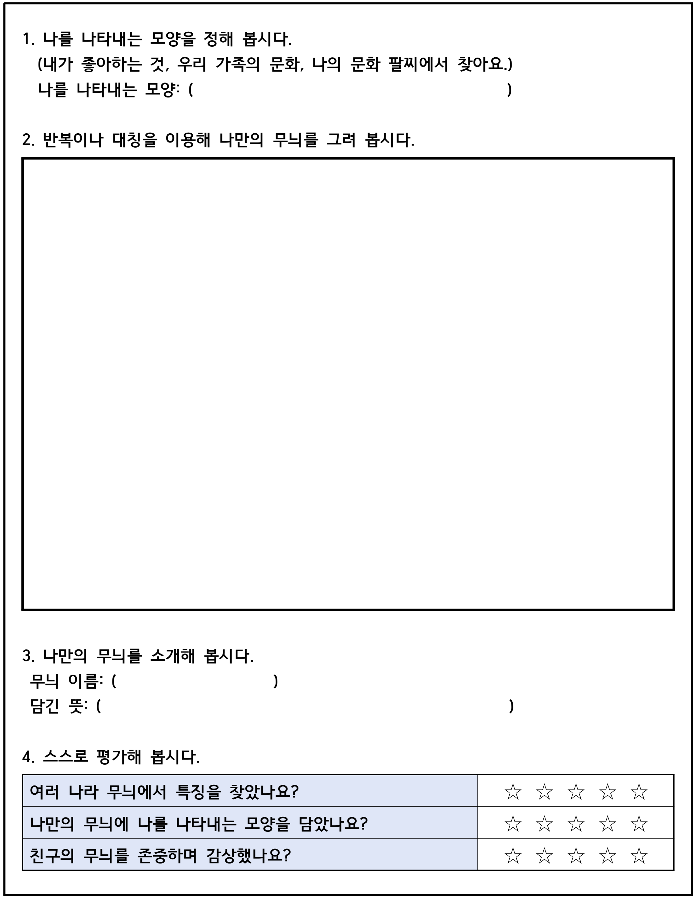
교과 융합 프로젝트 수업대덕초 · 3학년융합과목 | 사회, 국어 | 대 상 | 3학년 | 프로젝트 단계 | xplore (탐구하기) | ||||||
|---|---|---|---|---|---|---|---|---|---|---|---|
프로젝트 | 모두를 위한 문화, 더 나은 우리(5-6/10) | | |||||||||
성취기준 | [4사03-02] 우리 사회에 다양한 문화가 확산되면서 나타나는 긍정적 효과와 문제를 분석하고 나와 다른 사람이나 집단의 문화를 존중하는 태도를 기른다. | ||||||||||
학습목표 | 우리 주변의 다양한 문화를 조사하고, 그 특징을 정리하여 소개 자료를 만들 수 있다. | ||||||||||
수업전략 | 수업모형 | 탐구학습 모형 | 교과 역량 | 정보 활용 능력 | |||||||
다문화 주도성 | | | |||||||||
☑ | ☑ | ☐ | ☐ | ||||||||
단계 (시간) | 학습요소 | 교수·학습 활동 | 자료(▶) 및 유의점(☞) |
|---|---|---|---|
문제 파악 (5′) | 동기유발 | ▣ 학습동기 유발 ◦ 문화 탐험대에 도착한 특별한 의뢰 확인하기 ∙ 문화 탐험대에 도착한 편지를 읽어 봅시다. ∙ 편지에 어떤 부탁이 담겨 있나요? | ▶ 프레젠테이션 |
공부할 문제 파악 | ▣ 공부할 문제 확인 ♣ 우리 주변의 다양한 문화를 조사하고 소개할 자료를 만들어 봅시다. | ||
가설 설정 (10′) | 조사 주제 및 역할 정하기 | ▣ 【활동1】 문화 탐험 준비하기 ◦ 우리 주변의 다양한 문화가 함께하는 모습 예상하기 ∙ 우리 주변의 어떤 곳에서 다양한 문화가 함께하는 모습을 볼 수 있을까요? ∙ 모둠별로 조사하고 싶은 문화 주제를 정해 봅시다. ∙ 모둠별로 조사할 주제를 정하고 역할을 나누어 봅시다. | ☞ 다양한 문화의 특징 자체보다 우리 주변에서 여러 문화가 함께 나타나는 모습에 초점을 맞추어 조사 주제를 정하도록 한다. |
자료 수집 및 탐색 (20‘) | 다양한 문화가 함께하는 사례 조사하기 | ▣ 【활동2】 문화 조사하기 ◦ 우리 주변의 다양한 문화가 함께하는 모습 조사하기 ∙ 모둠별로 정한 주제에 따라 조사해 봅시다. ∙ 조사한 자료에서 다양한 문화가 함께하는 모습을 찾아 기록해 봅시다. | ▶ 활동지 |
자료 분석 및 일반화 40‘ | 소개 자료 만들기 | ▣ 【활동3】 문화 탐험 자료 만들기 ◦ 조사한 내용을 정리하여 문화 소개 자료 만들기 ∙ 조사한 내용 중 친구들에게 소개할 중요한 내용을 골라 봅시다. ∙ 조사한 내용을 친구들이 쉽게 이해할 수 있도록 소개 자료를 만들어 봅시다. | ☞ 다음 차시의 소개활동을 위해 모든 모둠원이 조사 내용을 이해하고 설명할 수 있도록 연습한다. |
적용 및 정리 (5′) | 학습내용 정리하기 | ▣ 학습내용 정리 ◦ 문화 탐험 결과 정리하기 ∙ 오늘 우리 주변의 다양한 문화를 조사하면서 새롭게 알게 된 점을 말해봅시다. | |
▣ 차시 예고 ♣ 다양한 문화가 함께할 때의 좋은 점을 알아봅시다. |
교과 융합 프로젝트 수업대덕초 · 3학년일 시 | 대 상 | 3학년 3반 | 교과서 | 사회 42~45(7/10) | 지도교사 | ||||||||||
|---|---|---|---|---|---|---|---|---|---|---|---|---|---|---|---|
프로젝트 | 모두를 위한 문화, 더 나은 우리 (7/10) | xplore | | ||||||||||||
본시 성취기준 | [4사03-02] 우리 사회에 다양한 문화가 확산되면서 나타나는 긍정적 효과와 문제를 분석하고, 나와 다른 사람이나 집단의 문화를 존중하는 태도를 기른다. | 본시 관련교과 | 사회 | ||||||||||||
학습목표 | 다양한 문화가 함께할 때의 좋은 점을 사례를 들어 설명할 수 있다. | ||||||||||||||
수업 모형 | 탐구 학습 모형 | 교과 역량 | 의사소통 및 협업 능력 | ||||||||||||
수업전략 | 수업 의도 | - 우리 주변에서 찾을 수 있는 다양한 문화의 사례를 조사하고 공유하며, 서로 다른 문화가 새로운 경험과 배움의 기회를 제공하고 우리 사회를 더욱 풍요롭게 한다는 점을 이해하도록 한다. - 학생들이 일상생활 속에서 다양한 문화적 배경을 가진 사람들과 문화를 자연스럽게 발견하고 이해하도록 한다. 이를 통해 이주배경학생과 비이주배경학생 모두 문화의 다양성을 긍정적으로 인식하고, 다양한 문화가 함께하는 사회의 가치를 발견하도록 한다. | |||||||||||||
다문화 주도성 | | | |||||||||||||
☑ | ☑ | ☐ | ☐ | ||||||||||||
이주배경학생 지도계획 | - 이주배경학생의 한국어 수준과 학습 특성을 사전에 파악하고, 사진·그림 자료와 쉬운 낱말을 활용하여 활동 참여를 지원한다. | ||||||||||||||
단계 (시간) | 학습요소 | 교수·학습 활동 | 자료(▶) 및 유의점(☞) |
|---|---|---|---|
문제파악 및 가설설정 (5´) | 동기유발 | ▣ 학습동기 유발 ◦ 다양한 문화가 함께하는 모습 살펴보기 ∙ 사진을 보고 우리 주변에서 볼 수 있는 다양한 문화를 찾아봅시다. - 우리 반에 다양한 문화를 가진 친구가 함께 공부하고 있습니다. ∙ 서로 다른 문화를 가진 친구들이 함께 생활하면 어떤 일들이 일어날까요? - 생활 방식이 달라 궁금한 점이 생길 것 같습니다. | ▶ 프레젠테이션 ☞ 다양한 문화가 자연스럽게 어우러지는 모습에 주목하도록 한다. |
공부할 문제 파악 | ▣ 공부할 문제 확인 ♣ 문화탐험대가 되어 다양한 문화가 함께할 때의 좋은 점을 알아봅시다. | ||
학습활동 안내 | ▣ 학습활동 안내 【활동1】 문화 탐험하기 【활동2】 보물찾기 | ||
자료 수집 및 탐색 (20´) | 문화 소개 자료 설명 및 다양한 문화 사례 탐색하기 | ▣ 【활동1】문화 탐험하기 ◦ 우리 주변 문화 탐험하기 ∙ 지난 시간에 조사한 우리 주변의 다양한 문화에는 무엇이 있었나요? - 음식 문화, 놀이 문화, 가족 문화 등이 있었습니다. ∙ 모둠별로 조사한 문화 자료를 살펴보고 설명해 봅시다. - 주인조는 조사한 내용을 설명하고, 손님조는 자료를 살펴보며 질문합니다. ∙ 손님조와 준비조의 역할을 바꾸어 활동해 봅시다. - 다른 모둠의 자료를 살펴보고 우리 모둠의 조사 결과를 설명합니다. | ▶ 스마트 패드 ☞ 준비조는 조사 내용을 간결하게 설명하고, 손님조는 경청하며 궁금한 점을 질문하도록 안내한다. |
교과 융합 프로젝트 수업대덕초 · 3학년단계 (시간) | 학습요소 | 교수·학습 활동 | 자료(▶) 및 유의점(☞) |
|---|---|---|---|
자료 분석 및 일반화 (10´) | 문화 다양성의 좋은 점 찾기 | ▣ 【활동2】 보물찾기 ◦ 문화가 함께하면 좋은 점 알아보기 ∙ 탐험하며 살펴본 우리 주변의 다양한 문화에는 어떤 것들이 있었나요? - 여러 나라의 음식 문화와 놀이 문화가 있었습니다. - 다양한 문화적 배경을 가진 사람들이 함께 생활하는 모습이 있었습니다. ∙ 우리 주변에 다양한 문화가 함께하면 어떤 점이 좋을까요? - 다양한 나라의 음식과 놀이를 경험할 수 있습니다. ∙ 좋은 점을 찾아 낱말 구름에 입력하고 공통으로 나타나는 생각을 살펴봅시다. - 새로운 경험, 다양한 배움, 서로 이해하기가 있습니다. ∙ 다양한 문화가 함께 할 때의 좋은 점을 이야기해 봅시다. - 다양한 문화를 경험하면서 새로운 것을 배울 수 있습니다. - 우리 생활이 더욱 풍요로워질 수 있습니다. | ▶ 스마트 패드 ☞ 워드클라우드에 나타난 공통된 생각을 통해 다양한 문화가 함께할 때의 좋은 점을 일반화하도록 한다. |
적용 및 정리 (5´) | 학습내용 정리 | ▣ 학습내용 정리하기 ◦ 탐구 결과 정리하기 ∙ 오늘 문화 탐험을 통해 발견한 가장 중요한 보물은 무엇인가요? - 다양한 문화가 함께하면 새로운 경험도 할 수 있고 서로 다른 문화를 이해하고 존중하는 태도를 배우게 됩니다. ∙ 다양한 문화가 함께하는 좋은 점을 누리기 위해 우리가 가져야 하는 태도를 이야기해 봅시다. - 서로 다른 문화를 존중해야 합니다. - 다른 문화에 관심을 가지고 배워야 합니다. ∙ 오늘 우리가 배운 내용을 바탕으로 우리 반의 약속을 정하여봅시다. - 나와 다른 문화를 가진 친구를 이해하고 존중하겠습니다. | ☞ 탐구 결과를 바탕으로 다양한 문화의 가치를 이해하고 존중하는 태도를 기르도록 유도한다. |
▣ 차시 예고 ♣ 편견과 차별을 알아보고, 모두를 위한 디자인을 설계해 봅시다. |
판서계획 | 2. 다양한 문화에 대한 이해와 존중 | ||
|---|---|---|---|
♣ 문화탐험대가 되어 다양한 문화가 함께할 때의 좋은 점을 알아봅시다. | * 다양한 문화가 함께할 때의 좋은 점 새로운 경험 다양한 배움 서로 이해하고 존중하기 풍요로운 생활 | ||
【활동1】 문화 탐험하기 【활동2】 보물찾기 |
평가 계획 | 평가내용 | 척도 | 채점 기준 | 평가 방법 |
|---|---|---|---|---|
다양한 문화가 함께할 때의 좋은 점을 구체적인 사례를 들어 설명할 수 있는가? | 매우 잘함 | 다양한 문화가 함께할 때의 좋은 점을 구체적인 사례와 연결하여 자세히 설명할 수 있다. | 관찰법 | |
잘함 | 다양한 문화가 함께할 때의 좋은 점을 설명할 수 있다. | |||
보통 | 교사나 친구의 도움을 받아 다양한 문화가 함께 할 때의 좋은 점을 말할 수 있다. | |||
이주배경학생 평가 시 유의점 | 이주배경학생의 문화적 경험을 긍정적으로 반영하고, 한국어 표현 능력보다 다양한 문화가 함께할 때의 좋은 점을 이해하고 설명하는 과정에 중점을 두어 평가한다. | |||
교과 융합 프로젝트 수업대덕초 · 3학년3학년 ( )반 ( )번 이름: ( ) 모둠: ( )
1. 문화 탐험 주제 정하기
주제
2. 다양한 문화가 함께하는 모습
☐ 어디에서 볼 수 있나요?
☐ 어떤 문화들이 어떻게 함께하고 있나요?
3. 친구들에게 소개할 핵심 내용 정리하기
4. 다양한 문화가 함께하면 어떤 점이 좋을지 탐험하며 알게 된 점을 낱말로 적어봅시다.
낱말 구름에 입력할 낱말 : 예) 새로운 경험, 다양한 배움, 서로 이해하기
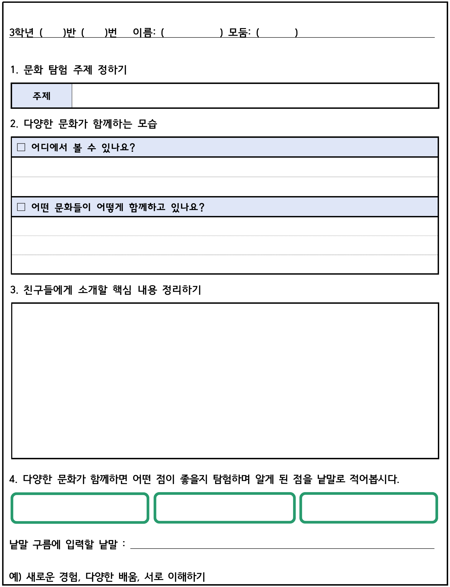
교과 융합 프로젝트 수업대덕초 · 3학년융합과목 | 사회, 도덕 | 대 상 | 3학년 | 프로젝트 단계 | ake (만들기) | ||||||
|---|---|---|---|---|---|---|---|---|---|---|---|
프로젝트 | 오감으로 만나는 세계 문화와 마음 잇기(8-9/10) | | |||||||||
성취기준 | [4사03-02] 우리 사회에 다양한 문화가 확산되면서 나타나는 긍정적 효과와 문제를 분석하고, 나와 다른 사람이나 집단의 문화를 존중하는 태도를 기른다. | ||||||||||
학습목표 | 편견과 차별을 이해하고, 공감을 통해 사회문제를 해결할 수 있다. | ||||||||||
수업전략 | 수업모형 | 문제 해결 학습 모형 | 교과 역량 | 공동체 역량 | |||||||
다문화 주도성 | | | |||||||||
☑ | ☑ | ☑ | ☐ | ||||||||
단계 (시간) | 학습요소 | 교수·학습 활동 | 자료(▶) 및 유의점(☞) |
|---|---|---|---|
문제 파악하기 (5′) | 동기유발 | ▣ 학습동기 유발 ◦ 자세히 관찰하기 ∙ 경찰 캐릭터 포순이의 달라진 모습은 무엇인가요? ∙ 포순이의 모습이 바뀐 이유는 무엇일까요? | ▶ 프레젠테이션 |
공부할 문제 파악 | ▣ 공부할 문제 확인 ♣ 편견과 차별을 알아보고, 공감을 통해 사회문제를 해결해 봅시다. | ||
원인 분석하기 (10′) | 편견과 차별 알아보기 | ▣ 【활동1】 ‘편견’과 ‘차별’ 이해하기 ◦ 경험 떠올리기 ∙ 택시 기사님이 말하는 손님들의 고민은 무엇인가요? ∙ 손님들의 고민과 비슷한 경험이 있다면 이야기해 봅시다. ◦ 편견과 차별 이해하기 ∙ 특별한 이유 없이 부정적으로 치우친 생각을 편견이라고 합니다. ∙ 나와 다르다는 이유로 상대방을 부당하게 대우하는 것을 차별이라고 합니다. | ▶ 프레젠테이션 ☞ 일상 속 경험 공유를 통해 이해를 돕는다. |
해결 방안 모색하기 (20‘) | 실생활에서 이해하기 | ▣ 【활동2】 사례 살펴보기 ◦ 그림을 통해 편견과 차별 알아보기 ∙ 그림은 어떤 장소에서 벌어진 일인가요? ∙ 그림을 보고 서정이가 기분이 안 좋다고 말한 이유는 무엇인지 이야기해 봅시다. | ▶ 프레젠테이션 ☞ 편견과 차별의 문제점을 생각해 볼 수 있도록 유도한다. |
해결 방안 실행하기 (40‘) | 사회 문제 해결하기 | ▣ 【활동3】 모두를 위한 디자인 설계하기 ◦ 편견과 차별의 문제점 이해하기 ∙ 편견을 가지고 생각하거나, 다른 사람을 차별하면 생기는 문제점은 무엇일까요? ◦ 모두를 위한 디자인 제작하기 ∙ 편견과 차별을 해결하고 상황에 따른 사람들의 불편함을 해소해줄 수 있는 모두를 위한 디자인을 제작해 봅시다. | ▶ 활동지 ☞ 자신뿐만 아니라 다른 사람의 불편함도 공감하도록 지도한다. |
평가 하기 (5′) | 학습내용 정리하기 | ▣ 학습내용 정리 ◦ 배운 내용과 느낀 점 이야기하기 ∙ 오늘 수업을 통해 배운 점 또는 느낀 점을 말해 봅시다. | |
▣ 차시 예고 ♣ 모두를 위한 디자인을 발표해 봅시다. |
교과 융합 프로젝트 수업대덕초 · 3학년일 시 | 대 상 | 3학년 4반 | 교과서 | 사회 58~59(10/10) | 지도교사 | ||||||||||
|---|---|---|---|---|---|---|---|---|---|---|---|---|---|---|---|
프로젝트 | 모두를 위한 문화, 더 나은 우리 (10/10) | ake | | ||||||||||||
본시 성취기준 | [4사03-02] 우리 사회에 다양한 문화가 확산되면서 나타나는 긍정적 효과와 문제를 분석하고, 나와 다른 사람이나 집단의 문화를 존중하는 태도를 기른다. | 본시 관련교과 | 사회 | ||||||||||||
학습목표 | 모두를 위한 디자인을 설계할 수 있다. | ||||||||||||||
수업 모형 | 가치 탐구 학습 모형 | 교과 역량 | 창의적 사고력 | ||||||||||||
수업전략 | 수업 의도 | - 일상 속 불편함을 단순히 인식하는 데 그치지 않고, 모둠별로 직접 설계한 '유니버셜 디자인'을 발표하고 다각도로 나눔으로써 다양성을 인정하고 모두를 포용하는 구체적인 실천 방안을 나눌 수 있다. - 발표 내용을 공유하고 다문화 사회에서 가져야 할 마음가짐을 다짐하며 이주배경학생과 비이주배경학생 모두 배려와 존중의 가치가 내면화되도록 한다. | |||||||||||||
다문화 주도성 | | | |||||||||||||
☑ | ☑ | ☑ | ☐ | ||||||||||||
이주배경학생 지도계획 | - 이주배경학생이 모국의 문화적 경험을 자발적으로 나눌 수 있도록 사전 교감 활동을 진행하며, 학생의 한국어 수준과 표현 능력을 사전에 파악하여 필요한 시각·언어 자료를 준비한다. | ||||||||||||||
단계 (시간) | 학습요소 | 교수·학습 활동 | 자료(▶) 및 유의점(☞) |
|---|---|---|---|
가치 문제 제시하기 (5´) | 동기유발 | ▣ 학습동기 유발 ◦ 사진을 보고 상황 파악하기 ∙ 화면 속 사진은 어떤 장소인지 발표해 봅시다. - 학교 앞 횡단보도입니다. ∙ 상황을 보고 학교 앞 횡단보도를 혼자 건너기에 어려운 사람을 짐작해 봅시다. - 눈이 보이지 않는 시각장애인입니다. | ▶ 프레젠테이션 |
공부할 문제 파악 | ▣ 공부할 문제 확인 ♣ 모두를 위한 디자인을 설계해 봅시다. | ||
학습활동 안내 | ▣ 학습활동 안내 【활동1】 경험 떠올리기 【활동2】 디자인 발표하기 【활동3】 다짐하기 | ||
가치 탐구하기 (5´) | 불편한 상황 찾아보기 | ▣ 【활동1】 경험 떠올리기 ◦ 일상생활 속 경험 떠올리기 ∙ 그림은 어떤 상황인가요? - 할아버지가 스마트폰을 사용하여 물건을 주문하는 상황입니다. ∙ 할아버지가 어떤 불편함을 느끼고 있나요? - 스마트폰의 글씨가 너무 작고 기능이 복잡하여 불편하다고 말하고 있습니다. ∙ 할아버지를 위한 해결책은 무엇이 있을까요? - 스마트폰의 글씨 크기를 크게 조정하거나 기능을 직접 말해주는 음성 기능을 활용할 수 있습니다. ∙ 일상생활 속에서 물건이나 시설을 사용할 때 자신 또는 다른 사람이 불편했던 경험이 있나요? - 휠체어를 타는 사람이 계단이 많은 곳은 이용하지 못하는 상황을 본 적이 있습니다. | ▶ 프레젠테이션 |
교과 융합 프로젝트 수업대덕초 · 3학년단계 (시간) | 학습요소 | 교수·학습 활동 | 자료(▶) 및 유의점(☞) |
|---|---|---|---|
가치 결정 및 대안 모색하기 (15´) | 모두를 위한 디자인 발표 및 감상하기 | ▣ 【활동2】 디자인 발표하기 ◦ 모둠별 모두를 위한 디자인 공유하기 ∙ ‘모두를 위한 디자인’의 의미는 무엇일까요? - 누구나 편리하게 사용할 수 있도록 만든 물건을 말합니다. ∙ 나이, 성별, 언어, 신체적 특징에 관계없이 누구나 편리하게 사용할 수 있도록 모둠별로 디자인한 물건이나 시설을 발표해 봅시다. | ▶ 프레젠테이션 ☞ 다른 모둠의 작품을 감상할 때 중점을 두어야 하는 부분을 사전에 안내한다. |
가치 내면화하기 (10´) | 바람직한 마음가짐 다짐하기 | ▣ 【활동3】 다짐하기 ◦ 다문화 사회에서 가져야 할 마음가짐 다짐하기 ∙ 우리 사회에서 다양한 문화가 함께 발전하기 위해 어떤 태도가 필요할까요? - 다양한 문화를 존중하는 태도가 필요합니다. ∙ 다문화 사회에서 가져야 할 마음가짐을 포스트잇에 작성하고 다짐해 봅시다. - 편견을 갖지 않고 서로 다른 문화를 모두 소중하게 여기는 마음가짐을 갖겠습니다. | ▶ 활동지 ☞ 틀린 문화는 없으며 모든 문화를 편견없이 존중해야 함을 강조한다. |
평가하기 (5´) | 학습내용 정리 | ▣ 학습내용 정리하기 ◦ 배운 내용 정리하기 ∙ 오늘 배운 내용과 문제를 해결한 소감을 말해 봅시다. - 우리 사회에서 나에게는 편하다고 느꼈던 물건이 다른 사람에게는 불편한 물건이라고 느낄 수 있는 경우가 많다는 것을 알게 되었습니다. - 직접 물건을 디자인해보고 감상하면서 모든 사람이 더 나은 생활을 할 수 있도록 고민해보는 것이 뿌듯했습니다. | ☞ 다양한 문화에 대해 지속적으로 관심을 가지도록 유도한다. |
▣ 차시 예고 ♣ 풍습이란 무엇인지 알아봅시다. |
판서계획 | 2. 다양한 문화에 대한 이해와 존중 | ||
|---|---|---|---|
♣ 모두를 위한 디자인을 설계해 봅시다. | * 모두를 위한 디자인이란? 나이, 성별, 언어, 신체적 특징에 관계없이 누구나 편리하게 사용할 수 있는 디자인 | ||
【활동1】 경험 떠올리기 【활동2】 디자인 발표하기 【활동3】 다짐하기 |
평가 계획 | 평가내용 | 척도 | 채점 기준 | 평가 방법 |
|---|---|---|---|---|
모두를 위한 디자인을 설계하여 일상생활 속 불편함을 해결할 수 있는가? | 매우 잘함 | 모두를 위한 디자인을 활용하여 일상생활 속 불편함을 능숙하게 해결할 수 있다. | 관찰법 | |
잘함 | 모두를 위한 디자인을 활용하여 일상생활 속 불편함을 해결할 수 있다. | |||
보통 | 일상생활 속 불편함을 도움을 받아 해결할 수 있다. | |||
이주배경학생 평가 시 유의점 | 모둠별 발표 및 다짐 활동 과정에서 이주배경학생이 경험한 문화적 다양성이나 언어적 배경을 다문화 수용성과 포용성 측면에서 긍정적 요소로 인정하여 평가하고, 모둠 내에서 수행한 역할, 시각적 기여도, 친구들과 협력하는 과정 중심 평가를 실시한다. | |||
교과 융합 프로젝트 수업대덕초 · 3학년1. 모든 사람이 편리하게 사용할 수 있도록 물건이나 시설을 디자인해 봅시다. 제목
모습
주로 이용하는
사람
주요 특징
2. 다문화 사회를 살아가면서 가져야 할 마음가짐을 생각하며 다짐문을 작성해 봅시다.
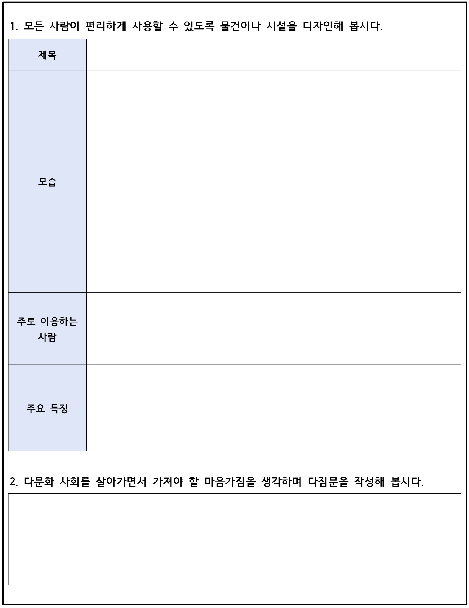
모두가 함께하는 세계 박람회 개최하기
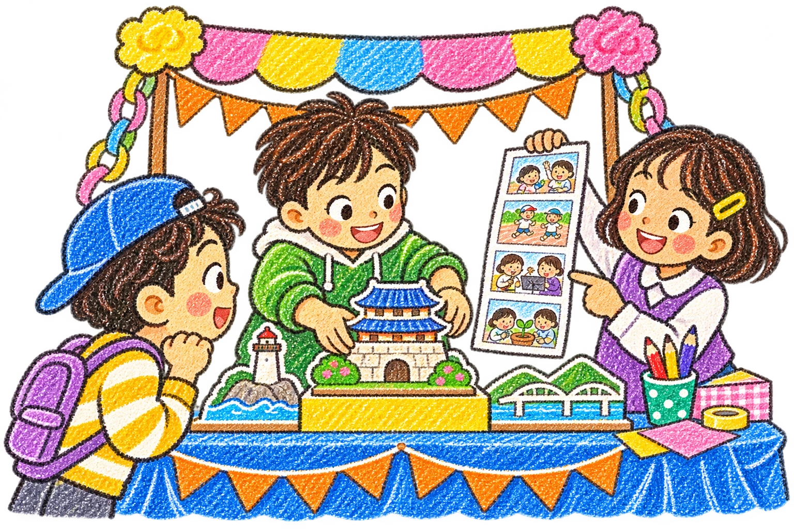
| 차시 | 교과 | 학습 주제 | 교과 역량 |
|---|---|---|---|
| 1 | 사회 | 우리 지역을 알리는 방법을 알고 소개하기 | 정보활용 능력 |
| 2 | 국어 | 주제에 맞는 의견과 이유를 제시하며 토의하기 | 의사소통 역량 |
| 3 | 수학 | 세계 여러 나라의 상징물 구성하기 | 문제 해결 역량 |
| 4 | 수학 | 소수의 덧셈과 뺄셈으로 수영 기록 비교하기 | 문제 해결 역량 |
| 5 | 미술 | 한국의 학교 생활을 네 컷 사진으로 표현하기 | 시각적 소통 역량 |
| 6 | 사회 | 세계 여러 지역의 특징을 알리는 홍보 자료만들기 | 창의적 사고력 |
교과 융합 프로젝트 수업대덕초 · 4학년설계 의도 본 프로젝트는 초등 4학년 학생들이 언어와 문화가 다른 다문화 친구들과 교류할 때 발생할 수 있는 소통의 어려움을 파악하고, 이를 합리적으로 해결하여 '모두가 함께하는 세계 박람회'를 개최하는 것을 목적으로 한다. 지역과 학교생활을 소개하고 이름을 존중하여 부를 방법을 토의하며, 여러 나라의 상징물과 랜드마크를 표현한다. 다양한 배경의 선수들로 출전 계획을 세우며 기록에 근거해 판단한다. 이 프로젝트를 통해 자신의 경험과 다양한 문화를 활용하여 문제를 해결하는 세계시민 역량을 함양하도록 구성하였다.
| 융합과목 | 수학 | 3. 소수의 덧셈과 뺄셈 4. 다각형 | 성취 기준 | [4수01-16] 소수 두 자리 수의 범위에서 소수의 덧셈과 뺄셈의 계산 원리를 이해하고 그 계산을 할 수 있다. [4수03-12] 주어진 도형을 이용하여 여러 가지 모양을 만들거나 채우고 설명할 수 있다. |
|---|---|---|---|---|
| 사회 | 2. 지역문제를 해결하고 지역을 알리는 노력 | [4사09-01] 생활 주변에서 찾을 수 있는 여러 가지 문제를 파악하고, 그 문제를 합리적으로 해결하는 능력을 기른다. [4사09-02] 지역의 자연환경, 역사, 문화, 생산물 등을 알리려는 지역사회의 노력을 알고 관심을 갖는다. | ||
| 국어 | 3. 의견을 모아서 | [4국01-06] 주제에 적절한 의견과 이유를 제시하고 서로의 생각을 교환하며 토의한다. | ||
| 미술 | 8. 순간을 잡아요 | [4미02-04] 표현 의도를 가지고 작품을 제작하며 자기 작품을 소중히 여길 수 있다. |
| 차시 | 프로젝트 단계 | 주요 학습 내용 | 관련 교과 | 학습자료 | |
|---|---|---|---|---|---|
| 1 | et 준비하기 | -다른 나라에서 온 친구에게 소개할 지역의 특징 조사하기 -처음 보는 친구가 이해할 수 있는 지역 소개 자료 만들기 | 사회, 국어 | 패들렛 | |
| 2 | -서로 다른 언어와 이름을 존중하는 방법 생각하기 -의견과 이유를 나누며 친구의 이름을 부를 방법 정하기 | 국어, 사회 | 패들렛 | ||
| 3 | xplore 탐구하기 | | -다각형과 정다각형 성질 이해하기 -모양 조각으로 세계 여러 나라의 상징물 디자인하기 | 수학, 미술 | 스마트 패드 |
| 4 | -다양한 배경의 선수들로 구성된 팀의 기록 계산·비교하기 -계산을 점검하고 선택한 까닭을 나누며 출전 명단 정하기 | 수학, 국어 | 웹 학습지 Gimkit | ||
| 5 | nite 협력하기 | | -다른 나라 친구에게 보여 줄 한국의 학교생활 구상하기 -표현 의도를 살려 사진 네 컷을 구성하고 보완하기 | 미술, 국어 | 구글 슬라이드 |
| 6 | ake 표현하기 | -세계 여러 지역의 특징을 담은 홍보자료 만들기 -모형을 활용하여 지역의 특징을 소개하고 생각 나누기 | 사회, 미술 | 레고 스파이크 | |
✔친구가 원하는 이름과 발음을 확인하고, 서로의 이름을 존중하여 부르는 방법 정하기 ✔다양한 배경의 선수들을 살펴보며 겉모습이나 출신만으로 경험과 능력을 판단하지 않기 | |
| ✔자신의 언어·문화적 경험을 활용하여 소개할 지역의 특징과 학교생활 장면 선택하기 ✔출전 명단을 계획하고 계산 결과를 점검하여 자신의 선택 보완하기 |
| ✔다른 나라 친구가 이해할 수 있도록 우리 지역과 학교생활 소개하기 ✔여러 나라의 상징물과 랜드마크에 담긴 특징을 표현하고 친구들과 나누기 |
| ✔이름의 발음이 낯설 때 당사자의 뜻을 확인하고 함께 부를 방법 조정하기 ✔자신의 이름과 문화적 경험을 표현하고, 말·그림·수식 등으로 공동 활동에 참여하기 |
교과 융합 프로젝트 수업대덕초 · 4학년ake ⑥| 평가내용 | 평가방법 | 매우 잘함 | 잘함 | 보통 | |
|---|---|---|---|---|---|
①지역을 알리려는 노력을 살펴보고 우리 지역 소개하기 [4사09-02] [4국01-06] | 관찰법 구술 | 지역을 알리는 대상과 방법을 설명하고, 자료를 근거로 우리 지역의 특징을 소개할 수 있다. | 지역을 알리는 방법을 알고, 우리 지역의 특징을 소개할 수 있다. | 도움을 받아 지역을 알리는 자료를 살펴보고 특징을 소개할 수 있다. | |
②의견과 이유를 제시하고 서로의 생각을 나누며 토의하기 [4국01-06] [4사09-01] | 토의·토론 | 의견과 이유를 제시하고 다른 의견을 반영해 실천 방법을 조정하며 토의할 수 있다. | 주제에 맞는 의견과 이유를 제시하고 다른 의견을 들으며 토의할 수 있다. | 도움을 받아 의견과 이유를 들어 토의할 수 있다. | |
③모양 조각으로 세계 여러 나라의 상징물 만들기 [4수03-12] | 관찰법 | 3가지 이상의 모양 조각을 활용하여 세계 여러 나라의 상징물을 만들 수 있다. | 1~2가지의 모양 조각을 활용하여 세계 여러 나라의 상징물을 만들 수 있다. | 도움을 받아 세계 여러 나라의 상징물을 만들 수 있다. | |
④소수의 덧셈과 뺄셈으로 수영 기록 계산하고 비교하기 [4수01-16] | 관찰법 구술 | 기록의 합과 차를 정확히 구하고, 합계를 비교해 선택한 이유를 설명할 수 있다. | 기록의 합과 기준과의 차를 구하고, 기록의 크기를 비교할 수 있다. | 도움을 받아 기록을 계산하고 크기를 비교할 수 있다. | |
⑤표현 의도를 살려 학교생활을 네 컷으로 나타내고 작품 소중히 여기기 [4미02-04] [4국01-06] | 관찰법 | 표현 의도에 맞게 장면과 구도를 구성하고, 작품의 의미를 설명하며 소중히 여길 수 있다. | 표현 의도를 살려 네 컷을 구성하고 작품을 소중히 여길 수 있다. | 도움을 받아 학교생활을 네 컷으로 표현하고 작품을 정리할 수 있다. | |
⑥세계 여러 지역의 특징을 담은 홍보 자료 만들고 소개하기 [4사09-02] | 관찰법 프로젝트 | 세계 여러 지역의 특징을 골라 움직임·빛·소리로 표현하고, 의견을 반영해 개선한 자료를 소개할 수 있다. | 세계 여러 지역의 특징을 골라 홍보 자료로 표현하고 소개할 수 있다. | 도움을 받아 지역의 특징을 홍보 자료로 표현할 수 있다. | |
| 이주배경학생 평가 시 유의점 | |||||
③ 출신국 상징물에 대한 지식을 인정하고 모양을 구성하는 수학적 사고 과정을 평가한다. | ④ 계산과 비교 과정을 살피고 선택한 이유를 수식이나 카드 배열로도 표현하도록 한다. | ||||
⑥ 홍보 모형의 기능과 표현을 살피고 그림·모국어 안내 문구·시연으로도 소개하도록 한다. | |||||
교과 융합 프로젝트 수업대덕초 · 4학년융합과목 | 사회, 국어 | 대 상 | 4학년 | 프로젝트 단계 | et (준비하기) | ||||||
|---|---|---|---|---|---|---|---|---|---|---|---|
프로젝트 | 모두가 함께하는 세계 문화 박람회 개최하기 (1/6) | | |||||||||
성취기준 | [4사09-02] 지역의 자연환경, 역사, 문화, 생산물 등을 알리려는 지역사회의 노력을 알고 관심을 갖는다. [4국01-06] 주제에 적절한 의견과 이유를 제시하고 서로의 생각을 교환하며 토의한다. | ||||||||||
학습목표 | 지역을 알리려는 노력을 살펴보고, 우리 지역을 소개할 수 있다. | ||||||||||
수업전략 | 수업모형 | 탐구 학습 모형 | 교과 역량 | 정보 활용 능력 | |||||||
다문화 주도성 | | | |||||||||
☑ | ☑ | ☑ | ☐ | ||||||||
단계 (시간) | 학습요소 | 교수·학습 활동 | 자료(▶) 및 유의점(☞) |
|---|---|---|---|
탐구 문제 설정 (5′) | 동기유발 | ▣ 학습동기 유발 ◦ 다른 나라에서 온 친구의 궁금증 살펴보기 ∙ 우리 지역에 처음 온 친구는 무엇이 궁금할까요? ◦ 우리 지역에 관한 탐구 질문 정하기 ∙ 우리 지역에서는 무엇을 어떻게 알리고 있을까요? | ▶ 교과서 ☞ 실제 학생을 문화의 대표로 삼지 않는다. |
공부할 문제 파악 | ▣ 공부할 문제 확인 ♣ 우리 지역을 알리는 방법을 알아보고 소개해 봅시다. | ||
조사 계획 (8′) | 조사 내용· 방법 정하기 | ▣ 【활동1】 조사 계획 세우기 ◦ 교과서에서 지역을 알리는 자료 살펴보기 ∙ 누가 무엇을 어떻게 알리고 있나요? ◦ 조사할 대상과 방법 정하기 ∙ 무엇을 어디에서 조사할까요? | ▶ 스마트 패드 ☞ 지역의 특징과 이를 알리는 방법을 구분하게 한다. |
자료 수집 (12′) | 홍보 자료 조사하기 | ▣ 【활동2】 지역을 알리는 자료 조사하기 ◦ 자료에서 알리는 대상과 방법 조사하기 ∙ 우리 지역의 어떤 특징을 어떻게 알리고 있나요? ◦ 자료의 출처와 소개할 내용 정리하기 ∙ 이 특징을 어떤 자료에서 확인했나요? | ▶ 지역 소개 자료 ☞ 자료를 미리 선별하고 지역·언어 경험을 자발적으로 활용하게 한다. |
분석·결론 (10′) | 의견을 모아 소개하기 | ▣ 【활동3】 지역 소개 자료 만들기 ◦ 의견과 이유를 나누어 소개 내용 정하기 ∙ 어떤 특징을 소개하면 좋을까요? 까닭을 말해 봅시다. ◦ 패들렛에 소개하고 질문을 들어 보완하기 ∙ 처음 보는 친구도 이해하려면 무엇을 보완할까요? | ▶ 패들렛 ☞ 모둠별 한 게시물에 사진과 짧은 설명을 담게 한다. |
사회 현상에 적용 (5′) | 학습내용 정리하기 | ▣ 학습내용 정리 ◦ 다른 지역에 조사 방법 적용하기 ∙ 우리가 다른 나라의 지역을 소개한다면 어떤 내용을 조사해야 할까요? | ☞ 지역을 알리는 노력과 소개 방법을 연결해 정리한다. |
▣ 프로젝트 다음 차시 예고 ♣ 친구의 이름을 부를 방법을 토의해 봅시다. |
교과 융합 프로젝트 수업대덕초 · 4학년융합과목 | 국어, 사회 | 대 상 | 4학년 | 프로젝트 단계 | et (준비하기) | ||||||
|---|---|---|---|---|---|---|---|---|---|---|---|
프로젝트 | 모두가 함께하는 세계 문화 박람회 개최하기 (2/6) | | |||||||||
성취기준 | [4국01-06] 주제에 적절한 의견과 이유를 제시하고 서로의 생각을 교환하며 토의한다. [4사09-01] 생활 주변에서 찾을 수 있는 여러 가지 문제를 파악하고, 그 문제를 합리적으로 해결하는 능력을 기른다. | ||||||||||
학습목표 | 주제에 맞는 의견과 이유를 제시하며 토의할 수 있다. | ||||||||||
수업전략 | 수업모형 | 토의·토론 학습 모형 | 교과 역량 | 의사소통 역량 | |||||||
다문화 주도성 | | | |||||||||
☑ | ☑ | ☐ | ☑ | ||||||||
단계 (시간) | 학습요소 | 교수·학습 활동 | 자료(▶) 및 유의점(☞) |
|---|---|---|---|
쟁점 확인 (5′) | 동기유발 | ▣ 학습동기 유발 ◦ 다른 나라에서 온 친구의 이야기 살펴보기 ∙ 이름이 낯설다고 별명을 정해 주면 어떨까요? ◦ 이름을 불리는 친구의 마음 짐작하기 ∙ 원하지 않는 이름으로 불리면 어떨까요? | ▶ 교과서 ☞ 가상 인물을 활용하고 낯선 이름을 웃음거리로 삼지 않는다. |
공부할 문제 파악 | ▣ 공부할 문제 확인 ♣ 친구의 이름을 존중하며 부를 방법을 토의해 봅시다. | ||
입장·근거 마련 (8′) | 의견·이유 마련하기 | ▣ 【활동1】 의견과 이유 마련하기 ◦ 이름을 존중하면서 해결할 문제 찾기 ∙ 친구들이 함께 해결할 문제는 무엇인가요? ◦ 해결 방법과 이유 생각하기 ∙ 어떤 방법을 제안하고 싶나요? | ▶ 스마트 패드 ☞ 이름 자체가 아니라 부르는 방법을 토의하게 한다. |
의견 교환· 질의 (7′) | 의견 비교· 질문하기 | ▣ 【활동2】 의견을 나누고 질문하기 ◦ 패들렛에 쓴 의견과 이유 설명하기 ∙ 어떤 방법과 이유를 제안했나요? ◦ 다른 의견을 비교하고 질문하기 ∙ 글로 적은 발음만으로 부르기 어렵다면요? | ▶ 패들렛 ☞ 여러 언어로 이름을 부른 경험을 자발적으로 나누게 한다. |
반론·조정 (15′) | 실천 방법 보완하기 | ▣ 【활동3】 실천할 방법 조정하기 ◦ 의견의 좋은 점과 어려운 점 살펴보기 ∙ 이름표와 발음 연습의 좋은 점과 어려운 점은 무엇인가요? ◦ 질문과 답변을 반영해 방법 조정하기 ∙ 의견을 어떻게 모아 실천할까요? | ☞ 호칭은 당사자의 뜻을 존중하고 방법의 장단점을 비교한다. |
결론·성찰 (5′) | 학습내용 정리하기 | ▣ 학습내용 정리 ◦ 결정한 방법과 토의 과정 돌아보기 ∙ 친구의 의견을 듣고 생각을 어떻게 보완했나요? | ☞ 다른 의견을 반영해 생각을 보완한 과정을 돌아보게 한다. |
▣ 프로젝트 다음 차시 예고 ♣ 모양 조각으로 세계의 상징물을 만들어 봅시다. |
교과 융합 프로젝트 수업대덕초 · 4학년일 시 | 대 상 | 4학년 2반 | 교과서 | 수학 104~107(8/9) | 지도교사 | ||||||||||
|---|---|---|---|---|---|---|---|---|---|---|---|---|---|---|---|
프로젝트 | 모두가 함께하는 세계 문화 박람회 개최하기(3/6) | xplore | | ||||||||||||
본시 성취기준 | [4수03-12] 주어진 도형을 이용하여 여러 가지 모양을 만들거나 채우고 설명할 수 있다. | 본시 관련교과 | 수학 | ||||||||||||
학습목표 | 모양 조각으로 세계 여러 나라의 상징물을 구성해 볼 수 있다. | ||||||||||||||
수업 모형 | 문제해결 학습 모형 | 교과 역량 | 문제해결 역량 | ||||||||||||
수업전략 | 수업 의도 | - 세계 여러 나라의 상징물을 살펴보고 형태를 단순화하여 수학 시간에 배운 다각형의 모양 조각으로 디자인해 봄으로써 수학적 공간 감각을 기르고 창의성을 발휘할 수 있도록 지도한다. - 세계의 유명한 상징물을 다각형으로 표현해 보고 소통하는 활동을 통해 자연스럽게 상호문화주의적 태도와 다문화 수용성을 함양하도록 유도한다. | |||||||||||||
다문화 주도성 | | | |||||||||||||
☑ | ☐ | ☐ | ☑ | ||||||||||||
이주배경학생 지도계획 | - 이주배경학생이 출신 국가의 상징물을 떠올려 익숙한 소재를 통해 수업에 자연스럽게 참여할 수 있도록 유도한다. | ||||||||||||||
단계 (시간) | 학습요소 | 교수·학습 활동 | 자료(▶) 및 유의점(☞) |
|---|---|---|---|
문제 확인하기 (5´) | 동기유발 | ▣ 학습동기 유발 ◦ 각 나라 다각형 알기 ∙ 사진을 보고 어느 나라 상징물인지 알아맞혀 봅시다. - 프랑스, 에펠탑입니다. ∙ 이 상징물을 단순하게 표현한다면 어떤 모양 조각을 활용할 수 있을지 떠올려 봅시다. - 삼각형, 사다리꼴 등으로 표현할 수 있습니다. | ▶ 프레젠테이션 ☞ 여러 나라의 상징물을 사진으로 제시하고 그 속에서 다각형을 찾아볼 수 있도록 한다. |
공부할 문제 파악 | ▣ 공부할 문제 확인 ♣ 모양 조각으로 세계 여러 나라의 상징물을 구성해 봅시다. | ||
학습활동 안내 | ▣ 학습활동 안내 【활동1】 각 나라의 상징물 설계하기 【활동2】 모양 조각으로 상징물 만들기 【활동3】 만든 작품 감상하기 | ||
문제 해결 방안 탐색 하기 (10´) | 각 나라의 상징물 정하기 | ▣ 【활동1】 각 나라의 상징물 설계하기 ◦ 내가 꾸밀 나라의 상징물을 정하고 설계하기 ∙ 모둠별로 탐구하고 싶은 나라를 하나 정하고, 그 나라를 잘 드러내는 상징물을 떠올려 봅시다. - 캐나다는 단풍잎과 곰, 꿀(벌집) 등을 떠올릴 수 있습니다. - 프랑스는 에펠탑, 수탉 등을 떠올릴 수 있습니다. - 영국은 빅벤, 빨간 버스, 왕관 등을 떠올릴 수 있습니다. - 인도는 타지마할, 코끼리 등을 떠올릴 수 있습니다. - 이집트는 피라미드, 낙타 등을 떠올릴 수 있습니다. - 호주는 오페라하우스, 캥거루 등을 떠올릴 수 있습니다. ∙ 이 상징물을 단순하게 표현하여 모양 조각으로 표현해 본다면 어떤 모양 조각이 필요할까요? - 삼각형, 사다리꼴 등이 필요할 것 같습니다. | ▶ 프레젠테이션 ☞ 이주배경학생의 국가와 평소 학생들이 관심을 가지고 있는 국가로 선정할 수 있도록 안내한다. |
교과 융합 프로젝트 수업대덕초 · 4학년단계 (시간) | 학습요소 | 교수·학습 활동 | 자료(▶) 및 유의점(☞) |
|---|---|---|---|
해결 계획 수행하기 (10´) | 모양 조각 이용하여 상징물 디자인 하기 | ▣ 【활동2】 모양 조각으로 상징물 만들기 ◦ 모양 조각을 이용하여 주어진 상징물을 다양한 방법으로 채워보기 ∙ 채울 수 있는 모양 조각의 종류에는 무엇이 있을까요? - 사다리꼴, 정삼각형, 평행사변형을 이용할 수 있습니다. ∙ 채울 수 있는 방법은 한 가지뿐일까요? - 이 외에도 다양한 방법이 있을 것 같습니다. ◦ 각자 자유롭게 모양 조각을 이용하여 상징물을 구성하고 완성되면 공유플랫폼에 사진 파일로 업로드하기 | ▶ 활동지 ☞ 다양한 상징물 작품이 나올 수 있도록 상징물의 예를 제시하여 학생들이 작품을 디자인하는데 도움이 되도록 지도한다. |
평가하기 (10´) | 만든 작품 친구와 공유하기 | ▣ 【활동3】 만든 작품 감상하기 ◦ 각자 만든 작품을 친구들과 공유하기 ∙ 다른 모둠이 만든 작품에는 어느 나라의 상징물을 찾아볼 수 있었나요? - 프랑스의 에펠탑을 찾아볼 수 있었습니다. - 호주의 오페라하우스인 것 같습니다. - 캐나다 국기의 단풍잎을 표현한 것 같습니다. ∙ 짝꿍이 만든 작품에는 어떤 모양 조각이 들어있나요? - 삼각형, 사다리꼴이 들어있습니다. - 사각형, 육각형이 들어있습니다. | ▶ 활동지 ☞ 서로 존중하는 분위기 속에서 감상이 이루어질 수 있도록 지도한다. |
반성하기 (5´) | 학습내용 정리 | ▣ 학습내용 정리하기 ◦ 배운 내용 정리하기 ∙ 오늘 배운 내용과 문제를 해결한 소감을 말해 봅시다. - 여러 나라의 상징물을 모양 조각으로 단순하게 표현해 보면서 여러 다각형의 특징을 활용할 수 있었습니다. - 세계 여러 나라의 상징물을 떠올려 보는 활동을 해보니 우리나라의 전통 문양도 모양 조각으로 꾸며보고 싶다는 생각이 들었습니다. | ☞ 다양한 나라의 상징물에 대하여 지속적으로 관심을 가지도록 유도한다. |
▣ 차시 예고 ♣ 소수의 덧셈과 뺄셈으로 수영 기록을 비교해 봅시다. |
판서계획 | 4. 다각형 | ||
|---|---|---|---|
♣ 모양 조각으로 세계 여러 나라의 상징물을 구성해 봅시다. | <상징물 디자인하기> * 모양 조각은 최소한 3가지 이상 사용한다. * 상징물의 형태가 잘 드러나도록 디자인한다. | ||
【활동1】 각 나라의 상징물 설계하기 【활동2】 모양 조각으로 상징물 만들기 【활동3】 만든 작품 감상하기 |
평가 계획 | 평가내용 | 척도 | 채점 기준 | 평가 방법 |
|---|---|---|---|---|
모양 조각을 활용하여 세계 여러 나라의 상징물을 만들 수 있는가? | 매우 잘함 | 3가지 이상의 모양 조각을 활용하여 세계 여러 나라의 상징물을 만들 수 있다. | 관찰법 | |
잘함 | 1~2가지의 모양 조각을 활용하여 세계 여러 나라의 상징물을 만들 수 있다. | |||
보통 | 도움을 받아 세계 여러 나라의 상징물을 만들 수 있다. | |||
이주배경학생 평가 시 유의점 | 이주배경학생이 출신 국가의 상징물에 대하여 잘 알고 있을 수 있으므로 수학적 사고 과정을 확인할 수 있도록 과정 중심으로 평가하고, 사전 지식은 문화 전문가 역할 등 다문화수용성 측면에서 긍정적으로 반영한다. | |||
교과 융합 프로젝트 수업대덕초 · 4학년대덕초 4학년 반 ( )모둠
우리 모둠이 정한 국가
우리가 꾸밀 이 국가의 상징물
<조건>
- 모양 조각은 3가지 이상 활용한다. - 상징물의 형태가 잘 드러나도록 디자인한다.
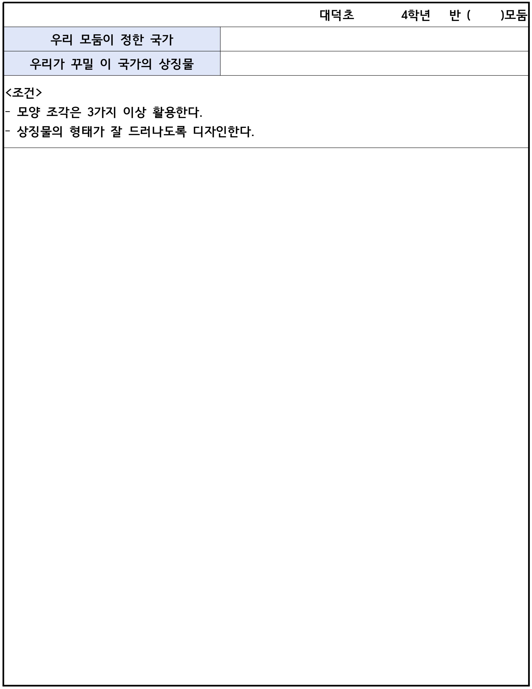
교과 융합 프로젝트 수업대덕초 · 4학년일 시 | 대 상 | 4학년 1반 | 교과서 | 수학 78~79(11/11) | 지도교사 | ||||||||||
|---|---|---|---|---|---|---|---|---|---|---|---|---|---|---|---|
프로젝트 | 모두가 함께하는 세계 문화 박람회 개최하기(4/6) | xplore | | ||||||||||||
본시 성취기준 | [4수01-16] 소수 두 자리 수의 범위에서 소수의 덧셈과 뺄셈의 계산 원리를 이해하고 그 계산을 할 수 있다. | 본시 관련교과 | 수학 | ||||||||||||
학습목표 | 소수의 덧셈과 뺄셈을 활용하여 수영 기록을 비교할 수 있다. | ||||||||||||||
수업 모형 | 문제해결 학습 모형 | 교과 역량 | 문제해결 역량 | ||||||||||||
수업전략 | 수업 의도 | - 소수의 덧셈과 뺄셈으로 기록을 계산하고 비교한다. 계산 결과를 근거로 출전 계획을 선택하며 문제 해결력을 기른다. - 로체스터 수영 이야기와 다양한 배경의 선수들을 소재로 삼는다. 디지털 도구로 연습한 뒤 짝과 계산을 확인하며 계획을 보완하도록 한다. | |||||||||||||
다문화 주도성 | | | |||||||||||||
☑ | ☑ | ☐ | ☑ | ||||||||||||
이주배경학생 지도계획 | - 자신의 경험을 바탕으로 다문화적 관점에서 생각하거나 느낀 점을 친구들에게 자유롭게 이야기하도록 하며, 다양한 문화적 배경과 경험이 존중받을 수 있도록 편안한 발표 분위기를 조성한다. | ||||||||||||||
단계 (시간) | 학습요소 | 교수·학습 활동 | 자료(▶) 및 유의점(☞) |
|---|---|---|---|
문제 확인하기 (5′) | 동기유발 | ▣ 학습동기 유발 ◦ 로체스터 기록을 수직선으로 살펴보기 ∙ 어느 도시의 이야기인가요? - 미국 뉴욕주 로체스터입니다. ∙ 기준보다 0.46초 느리다가 0.09초 빨라지면요? - 0.46과 0.09를 더한 0.55초입니다. | ▶ 프레젠테이션 |
공부할 문제 파악 | ▣ 공부할 문제 확인 ♣ 소수의 덧셈과 뺄셈으로 수영 기록을 비교해 봅시다. | ||
학습활동 안내 | ▣ 학습활동 안내 【활동1】 선수 구성하기 【활동2】 기록 확인하기 【활동3】 계획 검토하기 | ||
해결 계획 및 실행 (7′) | 조건 확인· 계획하기 | ▣ 【활동1】 선수 구성하기 ◦ 조건을 살펴보고 1안 구성하기 ∙ 가온·에밀리·루카·하람을 어떻게 배치할까요? - 한 선수가 한 영법씩 맡습니다. ∙ 가온이를 어디에 배치하고 싶나요? - 배영에 배치해 보고 싶습니다. - 자유형에 배치해 보고 싶습니다. ∙ 그렇게 생각한 이유는 무엇인가요? ◦ 기록을 옮겨 계산하고 2안 구상하기 ∙ 배치한 선수의 어떤 기록을 옮겨야 하나요? - 그 선수가 맡은 영법의 기록을 옮깁니다. ∙ 선수의 자리를 바꾸면 팀 기록은 어떨까요? - 기록의 합을 계산하여 비교해 봐야 합니다. | ▶ 스마트 패드, 웹 학습지 ☞ 기록을 직접 옮기고 손필기로 계산하게 한다. ☞ 1안을 계산하고 2안을 구상하게 하며 미완성 계산은 활동3에서 보완하게 한다. |
교과 융합 프로젝트 수업대덕초 · 4학년단계 (시간) | 학습요소 | 교수·학습 활동 | 자료(▶) 및 유의점(☞) |
|---|---|---|---|
계획 실행 및 점검 (11′) | 계산 점검· 오류 수정 | ▣ 【활동2】 기록 확인하기 ◦ Gimkit으로 기록의 합과 차 구하기 ∙ 네 기록의 합은 어떻게 구할까요? - 두 기록씩 더한 뒤 합칩니다. ∙ 기준 기록과의 차이는 어떻게 구하나요? - 큰 기록에서 작은 기록을 뺍니다. ◦ 소수 계산에서 주의할 점 확인하기 ∙ 계산할 때 무엇을 확인해야 하나요? - 소수점 위치와 받아올림을 확인합니다. | ▶ 스마트 패드, Gimkit ☞ 기록표와 연결된 합과 차 문항으로 연습하게 한다. |
해결 과정 검토 (12′) | 계산 보완· 짝 확인· 선택 설명 | ▣ 【활동3】 계획 검토하기 ◦ 개인별 계산 보완하기 ∙ 두 안의 계산에서 보완할 부분은 무엇인가요? - 합계를 구하고 틀린 계산을 고칩니다. ◦ 짝의 기록과 계산 확인하기 ∙ 짝의 계획에서 무엇을 확인해야 하나요? - 선수 배치와 기록, 합계를 확인합니다. ◦ 선택한 계획과 이유 발표하기 ∙ 어떤 계획을 선택했으며, 그 까닭은 무엇인가요? - 두 합계를 비교해 더 작은 안을 골랐습니다. | ▶ 스마트 패드, 웹 학습지 ☞ 서로 다른 계획의 계산 근거를 비교하게 한다. |
확장하기 (5′) | 적용 및 성찰 | ▣ 학습내용 정리 ◦ 출전 계획을 확인하고 해결 과정 돌아보기 ∙ 어떤 계산 방법이 도움이 되었나요? - 두 기록씩 더하고 합계를 비교했습니다. ∙ 전체 기록을 비교하니 생각이 달라졌나요? - 선수 한 명보다 팀 기록을 함께 봐야 합니다. ◦ 비웨사 이야기로 서로의 다름 존중하기 ∙ 겉모습만으로 친구를 판단해도 될까요? - 친구의 경험과 생각을 듣고 알아가야 합니다. | ▶ 프레젠테이션 |
▣ 차시 예고 ♣ 한국의 학교생활을 네 컷으로 표현해 봅시다. |
판서계획 | 3. 소수의 덧셈과 뺄셈 | ||
|---|---|---|---|
♣ 소수의 덧셈과 뺄셈으로 수영 기록을 비교해 봅시다. | * 팀 기록: 네 기록의 합 * 기준과의 차: 큰 기록－작은 기록 | ||
【활동1】 선수 구성하기 【활동2】 기록 확인하기 【활동3】 계획 검토하기 |
평가 계획 | 평가내용 | 척도 | 채점 기준 | 평가 방법 |
|---|---|---|---|---|
소수의 덧셈과 뺄셈을 활용해 수영 기록을 계산하고 비교할 수 있는가? | 매우 잘함 | 기록의 합과 차를 정확히 구하고, 합계를 비교해 선택한 이유를 설명할 수 있다. | 관찰법, 구술 | |
잘함 | 기록의 합과 기준과의 차를 구하고, 기록의 크기를 비교할 수 있다. | |||
보통 | 도움을 받아 기록을 계산하고 크기를 비교할 수 있다. | |||
이주배경학생 평가 시 유의점 | 계산과 비교 과정을 중심으로 평가하며, 말하기가 어려운 경우 수식이나 카드 배열로 선택 이유를 나타내도록 한다. | |||
교과 융합 프로젝트 수업대덕초 · 4학년4학년 1반 감독: ______________ 두 안의 선수와 기록을 적고, 더 나은 안을 선택해 봅시다. <1안>
영법 1 배영 2 평영 3 접영 4 자유형
선수
기록 _______ 초 _______ 초 _______ 초 _______ 초
예상 팀 기록 _______ 초
<2안>
영법 1 배영 2 평영 3 접영 4 자유형
선수
기록 _______ 초 _______ 초 _______ 초 _______ 초
예상 팀 기록 _______ 초
<최종 선택> □ 1안 □ 2안
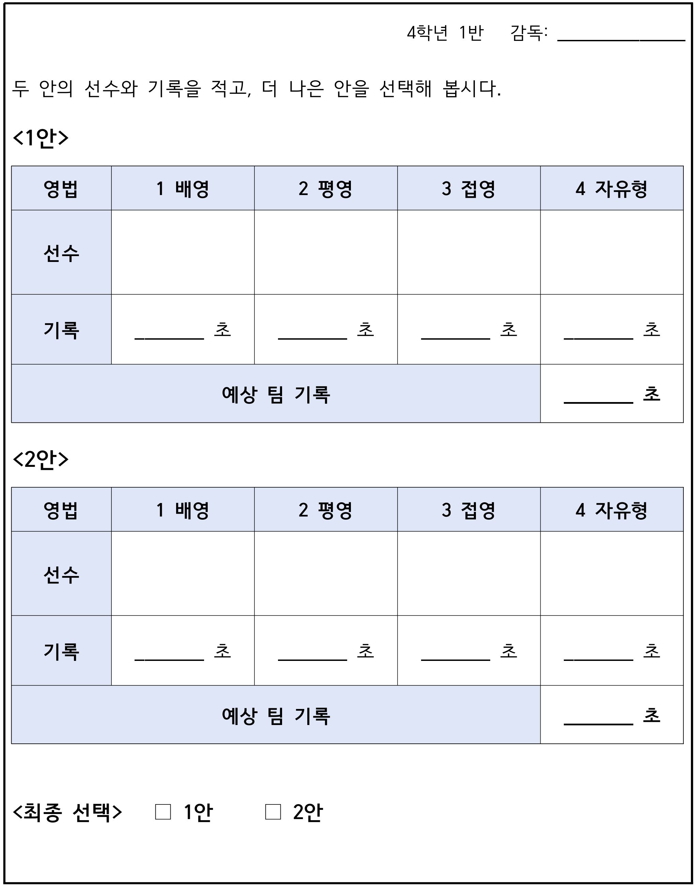
교과 융합 프로젝트 수업대덕초 · 4학년융합과목 | 미술, 국어 | 대 상 | 4학년 | 프로젝트 단계 | nite (협력하기) | ||||||
|---|---|---|---|---|---|---|---|---|---|---|---|
프로젝트 | 모두가 함께하는 세계 문화 박람회 개최하기 (5/6) | | |||||||||
성취기준 | [4미02-04] 표현 의도를 가지고 작품을 제작하며 자기 작품을 소중히 여길 수 있다. [4국01-06] 주제에 적절한 의견과 이유를 제시하고 서로의 생각을 교환하며 토의한다. | ||||||||||
학습목표 | 표현 의도를 살려 학교생활을 네 컷 사진으로 나타낼 수 있다. | ||||||||||
수업전략 | 수업모형 | 창의적 문제해결 학습 모형 | 교과 역량 | 시각적 소통 역량 | |||||||
다문화 주도성 | | | |||||||||
☑ | ☑ | ☑ | ☐ | ||||||||
단계 (시간) | 학습요소 | 교수·학습 활동 | 자료(▶) 및 유의점(☞) |
|---|---|---|---|
표현 문제 발견 (5′) | 동기유발 | ▣ 학습동기 유발 ◦ 교과서의 학교생활 네 컷 작품 살펴보기 ∙ 사진에는 어떤 이야기가 담겨 있나요? ◦ 다른 나라 친구에게 전할 표현 과제 찾기 ∙ 우리 학교의 어떤 모습을 보여 주고 싶나요? | ▶ 교과서 ☞ 우리 학교의 모습을 한국의 모든 학교로 일반화하지 않는다. |
공부할 문제 파악 | ▣ 공부할 문제 확인 ♣ 한국의 학교생활을 네 컷 사진으로 표현해 봅시다. | ||
자료· 아이디어 탐색 (7′) | 표현 방법 탐색하기 | ▣ 【활동1】 다양한 표현 방법 떠올리기 ◦ 사진의 장면과 표현 방법 살펴보기 ∙ 같은 학교생활을 어떻게 다르게 담았나요? ◦ 다른 나라 친구에게 소개할 장면 떠올리기 ∙ 어떤 모습으로 학교생활을 알려 줄까요? | ▶ 교과서 ☞ 희망하는 학생이 다른 학교·언어 경험을 나누게 한다. |
아이디어 선택· 구체화 (6′) | 촬영 계획 세우기 | ▣ 【활동2】 촬영 계획 세우기 ◦ 의견과 이유를 나누어 네 장면 선택하기 ∙ 어떤 장면을 담으면 좋을까요? 까닭을 말해 봅시다. ◦ 촬영 구도와 순서, 역할 구체화하기 ∙ 서로 돕는 모습을 어떻게 찍을까요? | ☞ 표현 의도에 맞게 장면을 고른 이유를 나누게 한다. |
작품 제작 (17′) | 사진 촬영· 구성하기 | ▣ 【활동3】 한국의 학교생활 네 컷 만들기 ◦ 계획한 장면을 촬영하고 사진 고르기 ∙ 어떤 사진이 주제를 잘 드러내나요? ◦ 사진을 배치하고 설명 붙이기 ∙ 처음 보는 친구에게 어떻게 보여 줄까요? | ▶ 스마트 패드 ▶ 구글 슬라이드 ☞ 동의를 얻어 교실 안에서 촬영하게 한다. |
비평·수정 (5′) | 학습내용 정리하기 | ▣ 학습내용 정리 ◦ 작품을 감상하고 사진 구성 돌아보기 ∙ 장면과 순서에 나타낸 생각은 무엇이며, 무엇을 고치면 좋을까요? | ☞ 작품에 담은 생각과 좋은 점을 나누고 작품을 저장하게 한다. |
▣ 프로젝트 다음 차시 예고 ♣ 세계 여러 지역의 랜드마크 모형을 만들어 봅시다. |
교과 융합 프로젝트 수업대덕초 · 4학년일 시 | 대 상 | 4학년 3반 | 교과서 | 사회 84~87(13/15) | 지도교사 | ||||||||||
|---|---|---|---|---|---|---|---|---|---|---|---|---|---|---|---|
프로젝트 | 모두가 함께하는 세계 문화 박람회 개최하기(6/6) | ake | | ||||||||||||
본시 성취기준 | [4사09-02] 지역의 자연환경, 역사, 문화, 생산물 등을 알리려는 지역사회의 노력을 알고 관심을 갖는다. | 본시 관련교과 | 사회 | ||||||||||||
학습목표 | 레고 스파이크 프라임을 활용하여 세계 여러 지역의 특징을 알리는 홍보 자료를 만들 수 있다. | ||||||||||||||
수업 모형 | 문제해결 학습 모형 | 교과 역량 | 창의적 사고력 | ||||||||||||
수업전략 | 수업 의도 | - 세계 여러 지역의 자연환경·역사·문화·생산물 중 알릴 특징을 골라 움직임·빛·소리로 표현하며 지역 알리기의 의미를 경험한다. - 레고 스파이크 프라임의 모터와 센서를 활용하고 다른 모둠의 체험 의견을 반영해 다른 나라 친구도 이해하기 쉬운 모형으로 개선하게 한다. | |||||||||||||
다문화 주도성 | | | |||||||||||||
☑ | ☑ | ☑ | ☐ | ||||||||||||
이주배경학생 지도계획 | - 자신이 살았던 지역이나 가족의 고향을 알리는 방법을 소개하고, 안내 문구를 모국어로도 표현하게 한다. | ||||||||||||||
단계 (시간) | 학습요소 | 교수·학습 활동 | 자료(▶) 및 유의점(☞) |
|---|---|---|---|
문제 인식 (5′) | 동기유발 | ▣ 학습동기 유발 ◦ 세계 여러 지역의 홍보 자료 살펴보기 ∙ 어느 지역을 알리는 자료인가요? - 프랑스 파리의 에펠탑 홍보 영상입니다. ∙ 움직이는 모형으로 알리면 무엇이 좋을까요? - 직접 체험하니 더 오래 기억할 수 있습니다. | ▶ 프레젠테이션 |
공부할 문제 파악 | ▣ 공부할 문제 확인 ♣ 레고 스파이크 프라임을 활용하여 세계 여러 지역의 특징을 알리는 홍보 자료를 만들어 봅시다. | ||
학습활동 안내 | ▣ 학습활동 안내 【활동1】 홍보 모형 설계하기 【활동2】 홍보 모형 만들기 【활동3】 홍보 모형 개선하기 | ||
문제 해결 계획 (7′) | 나라별 특징을 골라 설계하기 | ▣ 【활동1】 홍보 모형 설계하기 ◦ 모둠별로 알릴 나라와 특징 정하기 ∙ 어느 나라의 어떤 특징을 알리고 싶나요? - 이집트 피라미드에 담긴 역사입니다. - 인도네시아 보로부두르 사원의 역사입니다. - 베트남 하롱베이의 자연환경입니다. ◦ 움직임·센서·빛·소리 계획하기 ∙ 어떤 움직임으로 특징을 보여 주면 좋을까요? - 모터로 피라미드 문이 열리게 합니다. - 모터로 사원 모형이 천천히 돌게 합니다. - 모터로 배가 바다 위를 떠다니게 합니다. ∙ 센서는 언제 작동하게 할까요? - 손이 다가가면 소개 음성이 나오게 합니다. - 가까이 오면 그 나라 인사말이 나오게 합니다. | ▶ 홍보 모형 설계지, 세계 지역 특징 카드 ☞ 그림과 화살표로 움직임을 나타내게 한다. |
교과 융합 프로젝트 수업대덕초 · 4학년단계 (시간) | 학습요소 | 교수·학습 활동 | 자료(▶) 및 유의점(☞) |
|---|---|---|---|
문제 해결 (13′) | 모터와 센서로 움직이는 모형 만들기 | ▣ 【활동2】 홍보 모형 만들기 ◦ 레고 스파이크 프라임으로 모형 조립하기 ∙ 모터는 어디에 연결해야 할까요? - 돌아가야 하는 부분 아래에 연결합니다. ∙ 거리 센서는 어디에 두면 좋을까요? - 관람객의 손이 닿는 앞쪽에 둡니다. ◦ 블록 코딩으로 움직임과 안내 표현하기 ∙ 라이트 매트릭스에는 무엇을 나타낼까요? - 나라 이름과 하트 모양을 띄웁니다. | ▶ 레고 스파이크 프라임, 태블릿 ☞ 녹음 기능으로 지역 소개 음성을 넣게 한다. |
검증·평가 (10′) | 친구 의견을 반영하여 모형 개선하기 | ▣ 【활동3】 홍보 모형 개선하기 ◦ 모둠별 홍보 부스 체험하기 ∙ 친구의 모형에서 그 나라의 특징이 잘 드러났나요? - 소리와 빛이 함께 나와 알기 쉬웠습니다. ◦ 처음 보는 친구의 눈으로 개선하기 ∙ 처음 보는 친구가 이해하기 어려운 점은 무엇인가요? - 어느 나라를 소개하는 것인지 알기 어려웠습니다. ◦ 개선한 홍보 모형 소개하기 ∙ 무엇을 어떻게 바꾸었나요? - 라이트 매트릭스에 나라 이름이 나오게 바꾸었습니다. - 모형이 너무 빨리 돌아서 모터 속도를 줄였습니다. | ▶ 피드백 스티커, 패들렛 ☞ 피드백 한 가지를 골라 수정하도록 한다. |
일반화 (5′) | 세계 여러 지역 알리기 의미 정리 | ▣ 학습내용 정리 ◦ 세계 여러 지역을 알리는 노력의 의미 생각하기 ∙ 지역을 알리면 어떤 점이 좋을까요? - 다른 나라 사람들이 그 지역을 더 잘 이해하게 됩니다. ∙ 다른 나라의 지역은 어떻게 알리고 있나요? - 전통 축제나 관광 홍보 영상으로 알립니다. ◦ 친구의 나라를 알리며 느낀 점 나누기 ∙ 친구의 나라를 홍보하는 모형을 만드니 어땠나요? - 그 나라 친구와 더 가까워진 느낌이 들었습니다. ∙ 앞으로 어떻게 실천하고 싶나요? - 친구 나라의 문화에 관심을 갖고 존중하겠습니다. | ▶ 프레젠테이션 |
▣ 차시 예고 ♣ 제작한 모형을 다른 반 친구와 공유해 봅시다. |
판서계획 | 2. 지역문제를 해결하고 지역을 알리는 노력 | ||
|---|---|---|---|
♣ 레고 스파이크 프라임을 활용하여 세계 여러 지역의 특징을 알리는 홍보 자료를 만들어 봅시다. | * 알릴 특징: 자연환경·역사·문화·생산물 * 표현 방법: 모터·센서·빛·소리 | ||
【활동1】 홍보 모형 설계하기 【활동2】 홍보 모형 만들기 【활동3】 홍보 모형 개선하기 |
평가 계획 | 평가내용 | 척도 | 채점 기준 | 평가 방법 |
|---|---|---|---|---|
세계 여러 지역의 특징을 알리는 홍보 자료를 만들고 소개할 수 있는가? | 매우 잘함 | 세계 여러 지역의 특징을 골라 움직임·빛·소리로 표현하고, 의견을 반영해 개선한 자료를 소개할 수 있다. | 관찰법, 프로젝트 | |
잘함 | 세계 여러 지역의 특징을 골라 홍보 자료로 표현하고 소개할 수 있다. | |||
보통 | 도움을 받아 지역의 특징을 홍보 자료로 표현할 수 있다. | |||
이주배경학생 평가 시 유의점 | 홍보 모형의 기능과 표현을 중심으로 평가하며, 말하기가 어려운 경우 그림, 모국어 안내 문구, 시연으로 소개하게 한다. | |||
교과 융합 프로젝트 수업대덕초 · 4학년4학년 3반 모둠: ______________ 알릴 지역과 특징, 표현 방법을 정하고 친구들의 의견으로 개선해 봅시다. <처음 설계>
구분 알릴 지역·특징 움직임(모터) 감지(센서) 빛·소리
계획
담당
홍보 문구
<개선하기>
구분 알릴 지역·특징 움직임(모터) 감지(센서) 빛·소리
받은 의견
고친 점
새 홍보 문구
알린 지역: __________ □ 자연환경 □ 역사 □ 문화 □ 생산물
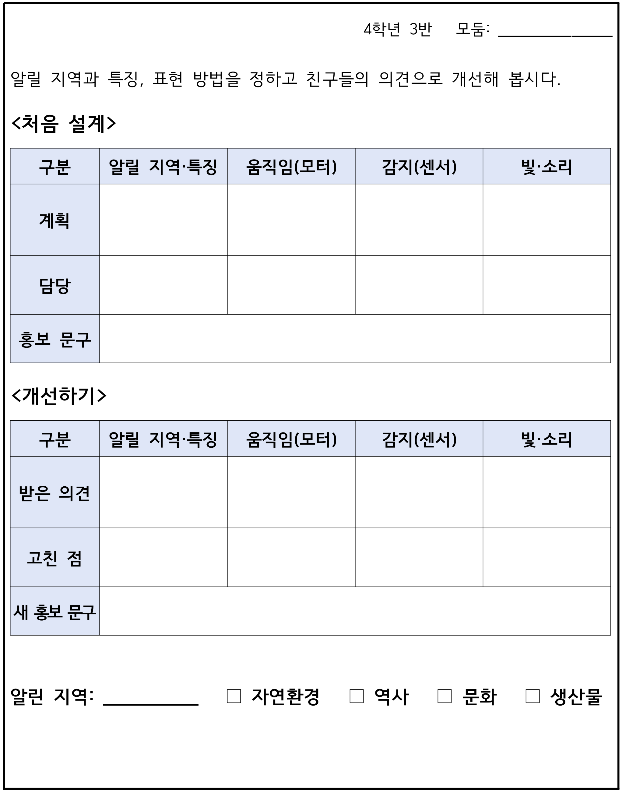
지구촌 집 지혜로 폭염‧한파 이겨내기
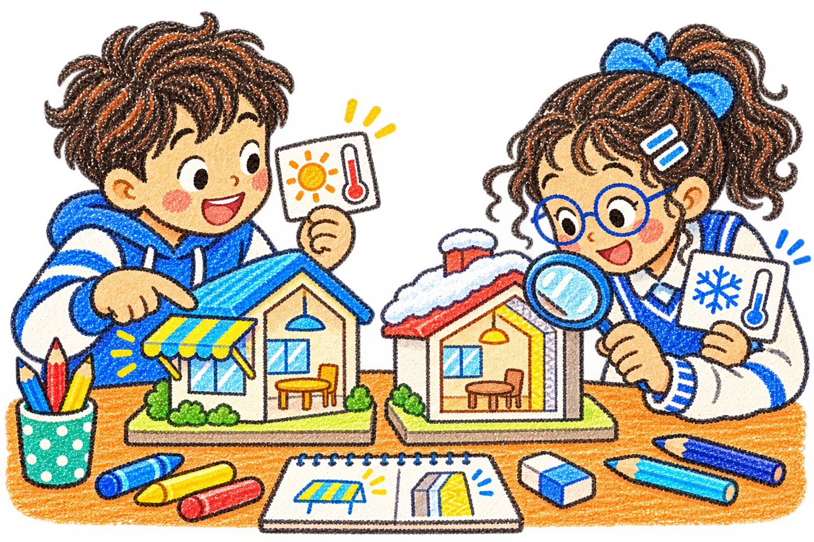
| 차시 | 교과 | 학습 주제 | 교과 역량 |
|---|---|---|---|
| 1 | 도덕 | 폭염‧한파 속 생활 문제를 찾고 탐구 계획 세우기 | 도덕적 공동체 의식 |
| 2 | 국어 | 위협 받는 인권을 생각하며 시 쓰기 | 의사소통 역량 |
| 3 | 과학 | 여러 나라의 집에 숨은 단열의 원리 찾기 | 과학적 탐구 능력 |
| 4 | 도덕 | 기후 위기 극복 녹력을 조사하고 교실의 대처법 찾기 | 도덕적 사고 능력 |
| 5 | 실과 | 인권‧다문화 카드뉴스 만들기 | 기술적 실천 역량 |
| 6 | 도덕 | 지구 환경 위기의 심각성 알기 | 도덕적 공동체 |
| 7 | 미술 | 캠페인 자료를 완성하고 발표회 열기 | 시각적 소통 역량 |
| 8 | 실과 | 캠페인을 알리고 생활 속 실천을 약속하기 | 기술적 실천 역량 |
교과 융합 프로젝트 수업대덕초 · 5학년설계 의도 본 프로젝트는 폭염·한파를 모두의 건강권 문제로 보고, 세계 집의 단열 지혜에서 해결책을 찾아 캠페인으로 실천하도록 구성하였다. 학생들은 기후에 맞춘 다른 문화의 생활 방식을 지혜로 존중하고(다문화 수용성), 탐구 질문과 역할을 스스로 정해 계획·실행·성찰하며(자기주도적 학습역량), 시와 카드뉴스로 지역에 실천을 제안하고(글로컬 시민성), 낯선 문제도 자기 경험과 강점으로 풀어 간다(주도적 적응력). 아울러 도덕적 공동체 의식, 과학적 탐구 역량, 기술적 실천 역량, 시각적 소통 역량을 함께 기른다.
| 융합과목 | 도덕 | 5. 모두에게 인권을 7. 지구의 내일을 심는 우리 | 성취 기준 | [6도03-01] 인권과 관련된 다양한 사례를 살펴보고 인권에 관한 감수성을 길러 이를 실천하려는 의지를 함양한다. [6도04-01] 지구의 환경 위기 상황을 이해하고, 이를 극복하기 위한 다양한 방안을 찾아 자신의 일상에서 실천하고자 노력한다. |
|---|---|---|---|---|
| 국어 | 1. 작품에 대한 의견을 나누어요. | [6국05-04] 인상적인 부분을 중심으로 작품에 대한 의견을 나눈다. | ||
| 과학 | 3. 열과 우리 생활 | [6과07-04] 일상생활에서 단열을 이용하는 사례를 조사하고 온도를 오랫동안 일정하게 유지할 수 있는 장치를 창의적으로 만들 수 있다. | ||
| 실과 | 6. 디지털 콘텐츠와 문제해결 | [6실04-02] 생활 속 디지털 기술의 중요성을 이해하고, 디지털 기기와 디지털 콘텐츠 저작 도구를 사용하여 발표 자료를 만들어 보면서 디지털 기기의 활용 능력을 기른다. | ||
| 미술 | 9. 대상과 교감하기 | [6미01-03] 주변 환경에 대한 민감한 태도로 대상과 상호 작용하며 새로운 의미를 발견할 수 있다. |
| 차시 | 프로젝트 단계 | 주요 학습 내용 | 관련 교과 | 학습자료 | |
|---|---|---|---|---|---|
| 1 | et 준비하기 | -프로젝트 안내 및 폭염·한파 속 우리 생활 문제 찾기 -여러 나라의 날씨·집 경험 나누고 탐구 계획 세우기 | 도덕 | 패들렛 | |
| 2 | -폭염·한파 속 위협받는 인권(건강·주거) 사례 살펴보기 -인권·다문화를 주제로 공감과 존중을 담은 시 쓰기 | 국어, 도덕 | 스마트 패드 | ||
| 3 | xplore 탐구하기 | | -게르·이글루·한옥 등 나라별 집의 단열 구조 탐구하기 -단열 원리를 찾고 생활 속 단열 이용 사례 조사하기 | 과학 | 스마트 패드 |
| 4 | -탐구 나라의 기후위기 현황과 극복 노력 조사하기 -집 지혜를 응용해 우리 교실 폭염·한파 대처법 찾기 | 도덕, 과학 | 크롬북, 패들렛 | ||
| 5 | nite 협력하기 | | -카드뉴스 구성과 디지털 저작 도구 익히기 -저작권을 지키며 인권·다문화 주제 카드뉴스 만들기 | 실과 | 캔바, 크롬북 |
| 6 | -환경파괴를 주제로 한 미술 작품 감상하기 -조사 내용을 담아 모둠별 지구 환경 카드뉴스 만들기 | 도덕, 미술 | 스마트 패드, 캔바 | ||
| 7 | ake 표현하기 | -카드뉴스와 시를 엮어 캠페인 자료 완성하기 -캠페인 발표회(카드뉴스·시 낭송) 열고 피드백하기 | 도덕, 실과, 미술 | 캔바, 패들렛 | |
| 8 | -다국어 카드뉴스로 학교·지역에 캠페인 알리기 -생활 속 실천 약속 정하기 및 프로젝트 성찰하기 | 도덕, 실과 | 패들렛, 누리집 | ||
✔세계 집 비교로 낯선 생활 방식을 그 지역 기후에 맞춘 ‘삶의 지혜’로 해석하기 ✔인권·다문화 시 쓰기로 차이를 우열이 아닌 다양성으로 받아들이는 마음 기르기 | |
| ✔모둠별로 탐구 나라·질문·역할을 스스로 정하고 일지에 계획·실행·성찰 기록하기 ✔모든 학생이 가족 인터뷰·가정 언어·살아 본 지역의 경험을 탐구 자료로 활용하기 |
| ✔세계 집의 단열 지혜를 교실·가정의 폭염·한파 대처법으로 바꿔 지역에 알리기 ✔각자의 언어·그림·조사 강점을 살린 다국어 카드뉴스로 공동체에 기여하기 |
| ✔모든 학생이 ‘문화 안내자’와 ‘질문하는 탐구자’ 역할을 번갈아 맡으며, 각자의 문화적 정체성을 지키면서 서로 어울려 배우는 경험 쌓기 ✔낯선 기후위기 문제에 해결안을 제안·수정하며 능동적으로 대처하는 힘 기르기 |
교과 융합 프로젝트 수업대덕초 · 5학년ake ⑦⑧| 평가내용 | 평가방법 | 매우 잘함 | 잘함 | 보통 | |
|---|---|---|---|---|---|
①폭염·한파 속 생활 문제를 찾아 모둠 탐구 계획 세우기 [6도04-01] | 관찰법 | 폭염·한파 속 생활 문제를 다양하게 찾고, 탐구 질문과 모둠 역할이 구체적인 모둠 탐구 계획을 세울 수 있다. | 폭염·한파 속 생활 문제를 찾고, 모둠별 탐구 계획을 세울 수 있다. | 도움을 받아 생활 문제를 찾고, 간단한 탐구 계획을 세울 수 있다. | |
②위협받는 인권에 공감하고 존중하는 마음을 시로 표현하기 [6국05-04] [6도03-01] | 서술 | 위협받는 권리를 구체적으로 찾고, 고른 시어와 감각적 표현으로 공감과 존중이 잘 드러나는 시를 쓸 수 있다. | 위협받는 권리를 찾고, 공감하는 마음을 담아 시를 쓸 수 있다. | 도움을 받아 권리를 찾고, 시 틀을 활용하여 간단한 시를 쓸 수 있다. | |
③나라별 집에서 단열 원리를 찾고 생활 속 단열 사례 조사하기 [6과07-04] | 실험·실습 | 나라별 집의 단열 구조를 열의 이동과 관련지어 설명하고, 생활 속 단열 사례를 다양하게 조사할 수 있다. | 나라별 집의 단열 구조에서 단열 원리를 찾고, 생활 속 단열 사례를 조사할 수 있다. | 도움을 받아 단열 원리를 찾고, 생활 속 단열 사례를 말할 수 있다. | |
④기후위기 극복 노력을 조사하고 집의 지혜를 살려 교실 대처법 찾기 [6도04-01] [6과07-04] | 토의·토론 | 탐구 나라의 기후위기와 극복 노력을 정확히 조사하고, 단열 원리를 응용한 실천 가능한 대처법을 제안할 수 있다. | 탐구 나라의 극복 노력을 조사하고, 집 지혜를 응용한 대처법을 찾을 수 있다. | 도움을 받아 극복 노력을 조사하고, 간단한 대처법을 찾을 수 있다. | |
⑤저작권을 지키며 인권·다문화 카드뉴스 만들기 [6실04-02] | 실험·실습 | 구성에 맞게 메시지를 담고, 저작권을 지키며 저작 도구의 기능을 능숙하게 활용하여 카드뉴스를 만들 수 있다. | 저작권을 지키며 저작 도구를 활용하여 인권·다문화 카드뉴스를 만들 수 있다. | 도움을 받아 저작 도구로 간단한 카드뉴스를 만들 수 있다. | |
⑥지구 환경 위기를 조사하고 그 심각성 설명하기 [6도04-01] | 관찰법 | 지구 환경 위기를 조사하고 그 심각성과 영향을 설명할 수 있다. | 지구 환경 위기를 조사하고 그 심각성을 설명할 수 있다. | 지구 환경 위기를 도움을 받아 조사할 수 있다. | |
⑦시와 카드뉴스로 캠페인 자료를 만들어 발표하고 피드백 나누기 [6도04-01] [6실04-02] [6미01-03] | 구술 | 시와 카드뉴스를 효과적으로 엮어 캠페인 자료를 완성하고, 자신 있게 발표하며 구체적인 피드백을 주고받을 수 있다. | 시와 카드뉴스를 엮어 캠페인 자료를 완성하고, 발표하며 피드백을 주고받을 수 있다. | 도움을 받아 캠페인 자료를 완성하고, 발표에 참여할 수 있다. | |
⑧다국어 캠페인을 알리고 실천 약속과 성찰 기록하기 [6도04-01] [6실04-02] | 포트폴리오 | 다국어 카드뉴스로 캠페인을 알맞게 알리고, 구체적인 실천 약속과 깊이 있는 성찰을 기록할 수 있다. | 다국어 카드뉴스로 캠페인을 알리고, 실천 약속과 성찰을 기록할 수 있다. | 도움을 받아 캠페인을 알리고, 간단한 실천 약속을 쓸 수 있다. | |
| 이주배경학생 평가 시 유의점 | |||||
② 인권에 공감하는 마음을 살피고 가족의 언어·그림·낱말 카드로 표현한 시도 인정한다. | ③ 그림·화살표·몸짓으로 표현한 열의 이동과 단열 원리, 가족 나라의 집 사례를 인정한다. | ||||
⑤ 그림·색·배치로 전한 메시지와 저작권 존중을 살피고 가족의 언어로 쓴 글도 인정한다. | ⑥ 모국어 자료를 제공하고 조사한 사진과 낱말을 중심으로 환경 위기에 대한 이해를 평가한다. | ||||
교과 융합 프로젝트 수업대덕초 · 5학년융합과목 | 도덕 | 대 상 | 5학년 | 프로젝트 단계 | et (준비하기) | ||||||
|---|---|---|---|---|---|---|---|---|---|---|---|
프로젝트 | 지구촌 집 지혜로 폭염·한파 이겨내기 (1/8) | | |||||||||
성취기준 | [6도04-01] 지구의 환경 위기 상황을 이해하고, 이를 극복하기 위한 다양한 방안을 찾아 자신의 일상에서 실천하고자 노력한다. | ||||||||||
학습목표 | 폭염·한파 속 우리 생활의 문제를 찾고, 모둠별 탐구 계획을 세울 수 있다. | ||||||||||
수업전략 | 수업모형 | 프로젝트 학습 모형 | 교과 역량 | 도덕적 공동체 의식 | |||||||
다문화 주도성 | | | |||||||||
☑ | ☑ | ☑ | ☐ | ||||||||
단계 (시간) | 학습요소 | 교수·학습 활동 | 자료(▶) 및 유의점(☞) |
|---|---|---|---|
문제 확인하기 (5′) | 폭염·한파 경험 떠올리기 | ▣ 학습동기 유발 ◦ 폭염·한파 뉴스 영상 보기 ∙ 영상을 보고 지난 여름과 겨울에 겪은 일을 떠올려 봅시다. ◦ 프로젝트 안내하기 ∙ 8차시 동안 만들 시, 카드뉴스, 캠페인을 알아봅시다. | ▶ 뉴스 영상, 프로젝트 안내 자료 |
공부할 문제 파악 | ▣ 공부할 문제 확인 ♣ 폭염·한파 속 생활 문제를 찾고 탐구 계획을 세워 봅시다. | ||
문제 찾기 (7′) | 생활 속 문제를 모아 넓혀 보기 | ▣ 【활동1】 우리 생활 문제 찾기 ◦ 폭염·한파 속 불편했던 일 찾기 ∙ 학교, 집, 동네에서 불편하거나 위험했던 일을 써 봅시다. ◦ 지역과 세계의 문제로 넓혀 보기 ∙ 더위와 추위에 더 힘든 이웃은 누구일지 생각해 봅시다. ∙ 다른 나라에도 같은 문제가 있는지 뉴스로 확인해 봅시다. | ▶ 붙임쪽지, 패들릿 ☞ 찾은 문제는 패들릿에 모아 프로젝트 내내 다시 보게 한다. |
탐구 계획 세우기 (8‘) | 여러 나라의 경험에서 탐구 질문 만들기 | ▣ 【활동2】 세계의 날씨와 집 경험 나누기 ◦ 여러 나라의 날씨와 집 이야기 나누기 ∙ 가족이 살았던 곳이나 가 본 곳의 날씨와 집을 소개해 봅시다. ∙ 나라마다 집의 모습이 다른 까닭을 생각해 봅시다. ◦ 탐구 질문 만들기 ∙ 세계의 집에 대해 궁금한 점을 질문으로 만들어 봅시다. | ▶ 세계 지도, 집 사진 ☞ 가족 이야기는 원하는 학생만 나누게 하고, 모두의 경험을 소중히 다룬다. |
정리 하기 (15‘) | 모둠별 역할과 탐구 계획 정하기 | ▣ 【활동3】 모둠 탐구 계획 세우기 ◦ 지구의 환경 위기와 관련된 모둠 탐구 계획 세우기 ∙ 모둠이 탐구할 나라와 질문을 스스로 정해 봅시다. ∙ 역할을 나누고 프로젝트 일지에 계획을 써 봅시다. | ▶ 프로젝트 일지 ☞ 각자의 강점을 살려 역할을 스스로 고르게 한다. |
정리 및 발전 (5′) | 탐구 계획 나누고 다짐하기 | ▣ 학습내용 정리 ◦ 모둠 탐구 계획 나누기 ∙ 모둠 계획을 패들릿에 올려봅시다. ◦ 다짐 나누기 ∙ 프로젝트에 대한 다짐을 말해봅시다. | ☞ 다른 나라의 생활 방식을 ‘틀림’이 아닌 ‘다름’으로 보게 한다. |
▣ 차시 예고 ♣ 폭염·한파 속 위협받는 인권을 생각하며 시를 써 봅시다. |
교과 융합 프로젝트 수업대덕초 · 5학년일 시 | 대 상 | 5학년 1반 | 교과서 | 국어 42~44(6/14) | 지도교사 | ||||||||||
|---|---|---|---|---|---|---|---|---|---|---|---|---|---|---|---|
프로젝트 | 지구촌 집 지혜로 폭염·한파 이겨내기 (2/8) | et | | ||||||||||||
본시 성취기준 | [6국05-04] 인상적인 부분을 중심으로 작품에 대한 의견을 나눈다. [6도03-01] 인권과 관련된 다양한 사례를 살펴보고 인권에 관한 감수성을 길러 이를 실천하려는 의지를 함양한다. | 본시 관련교과 | 국어 | ||||||||||||
학습목표 | 폭염·한파 속 위협받는 인권에 공감하며 존중의 마음을 담아 시를 쓸 수 있다. | ||||||||||||||
수업 모형 | 반응 중심 학습 모형 | 교과 역량 | 의사소통 | ||||||||||||
수업전략 | 수업 의도 | - 사례에서 떠오른 첫 느낌을 시어로 모으고 사례 속 사람의 목소리로 시를 쓰며, 위협받는 건강권과 주거권을 자신의 언어로 이해하게 한다. - ‘시인에게 묻고 답하기’로 서로의 시를 근거를 들어 깊이 읽고, 가족의 경험과 언어도 시의 재료로 존중한다. | |||||||||||||
다문화 주도성 | | | |||||||||||||
☑ | ☑ | ☐ | ☐ | ||||||||||||
이주배경학생 지도계획 | - 원하는 경우 가족 나라의 더위·추위 경험을 미리 들어 오게 하고, 그림 낱말 카드와 빈칸형 시 틀, 질문·대답 문장 틀을 한국어 수준에 맞춰 준비한다. | ||||||||||||||
단계 (시간) | 학습요소 | 교수·학습 활동 | 자료(▶) 및 유의점(☞) |
|---|---|---|---|
반응준비 하기 (5´) | 장면 속 사람의 마음 떠올리기 | ▣ 학습동기 유발 ◦ 확대 사진 보고 장면 맞히기 ∙ 이 사진은 어떤 장면의 한 부분일까요? - 창문에 하얗게 낀 성에 같아요. ∙ 이 장면 속 사람에게 가장 필요한 것은 무엇이었을까요? - 추위를 피할 수 있는 따뜻한 집이 필요합니다. | ▶ 확대 사진 ☞ 얼굴이 드러나지 않는 사진을 골라 인물의 존엄을 지킨다. |
시의 주제 알기 | ▣ 공부할 문제 확인 ♣ 폭염·한파 속 위협받는 인권을 생각하며 시를 써 봅시다. | ||
활동 순서 살펴보기 | ▣ 학습활동 안내 【활동1】 시어 찾기 【활동2】 시 쓰기 【활동3】 묻고 답하기 | ||
반응형성 하기 (8´) | 사례 속 사람의 하루에서 떠오르는 시어 고르기 | ▣ 【활동1】 시어 찾기 ◦ 사례 카드 자세히 보기 ∙ 사례 속 사람은 누구이고, 어떤 하루를 보내고 있나요? ∙ 이 사람이 지키기 어려운 권리는 무엇일까요? - 건강하게 살 권리입니다. - 안전한 집에 살 권리입니다. ◦ 떠오르는 시어 쓰기 ∙ 사례를 보고 떠오르는 낱말을 패들렛에 올려 봅시다. ∙ ‘선풍기’를 ‘숨이 찬 날개’처럼 낯설게 바꾸어 말해 봅시다. ∙ 들릴 것 같은 소리나 움직임을 흉내 내는 말로 나타내 봅시다. ◦ 내 시어 고르기 ∙ 모인 시어 가운데 내 시에 쓰고 싶은 시어 3개를 골라 봅시다. | ▶ 사례 카드, 패들렛 ☞ 인물을 불쌍한 대상이 아니라 권리를 가진 사람으로 바라보게 한다. ☞ 시어 옆에 떠오른 까닭을 한 낱말로 적게 한다. |
교과 융합 프로젝트 수업대덕초 · 5학년단계 (시간) | 학습요소 | 교수·학습 활동 | 자료(▶) 및 유의점(☞) |
|---|---|---|---|
반응 명료화 하기 (14´) | 사례 속 사람의 마음을 헤아려 나의 시 쓰기 | ▣ 【활동2】 시 쓰기 ◦ 마음 헤아리기 ∙ 이 사람은 그날 밤 어떤 마음으로 잠들었을까요? ◦ 나의 경험과 잇기 ∙ 나나 가족도 비슷한 더위나 추위를 겪은 적이 있나요? ◦ 선생님 시 살펴보기 ∙ 선생님 시에서 사례 속 사실과 상상한 부분은 어디일까요? ◦ 나의 시 쓰기 ∙ 고른 시어를 넣어 사례 속 사람의 목소리로 시를 써 봅시다. ∙ 마지막 연에는 지키고 싶은 권리를 담아 봅시다. ∙ 전하고 싶은 한 행을 가족의 언어로 옮겨 써도 좋습니다. | ▶ 프레젠테이션, 활동지, ☞ 사례에서 찾은 어려움 1개 이상과 나의 경험을 담게 한다. ☞ 이중언어 쓰기는 원하는 학생만 하고 패드 번역기를 활용한다. |
반응심화 하기 (10´) | 묻고 답하며 서로의 시를 깊이 읽기 | ▣ 【활동3】 묻고 답하기 ◦ 모둠 안에서 시 낭송하기 ∙ 친구의 시를 듣고 가장 마음에 남는 시어는 무엇인가요? ◦ 시인에게 질문하기 ∙ ‘왜 이 시어를 골랐나요?’처럼 시인에게 질문해 봅시다. ◦ 시인이 되어 대답하기 ∙ ‘___을 보면 ___할 것 같아서 썼어요.’처럼 답해 봅시다. - 선풍기가 할머니의 숨을 지켜 주길 바라서 썼어요. ∙ 친구의 대답을 듣고 새롭게 생각하게 된 권리는 무엇인가요? | ▶ 질문 카드, 대답 문장 틀 ☞ 대답에 사례 속 근거가 들어 있는지 살핀다. ☞ 이중언어로 쓴 행은 두 언어로 낭송하게 한다. |
정리하기 (3´) | 시 쓰기 과정을 돌아보며 실천 다짐하기 | ▣ 학습내용 정리하기 ◦ 배운 점 말하기 ∙ 마음을 헤아린 것이 시 쓰기에 어떤 도움이 되었나요? ◦ 실천 다짐하기 ∙ 이웃의 권리를 지키기 위해 할 일 한 가지를 다짐해 봅시다. | ☞ 완성한 시는 패들렛에 모아 7~8차시 캠페인 자료로 활용한다. |
▣ 차시 예고 ♣ 세계 여러 나라의 집에 숨은 단열의 원리를 찾아봅시다. |
판서계획 | 1. 작품에 대한 의견을 나누어요. | ||
|---|---|---|---|
♣ 폭염·한파 속 위협받는 인권을 생각하며 시를 써 봅시다. | * 사례 속 시어 숨이 찬 날개, 하얀 입김, 윙윙, 덜덜 * 시인에게 묻고 답하기 “왜 이 시어를 골랐나요?” | ||
【활동1】 시어 찾기 【활동2】 시 쓰기 【활동3】 묻고 답하기 |
평가 계획 | 평가내용 | 척도 | 채점 기준 | 평가 방법 |
|---|---|---|---|---|
폭염·한파 속 위협받는 인권을 이해하고, 공감과 존중의 마음을 담아 시로 표현할 수 있는가? | 매우 잘함 | 위협받는 권리를 구체적으로 찾고, 고른 시어와 감각적 표현으로 공감과 존중이 잘 드러나는 시를 쓸 수 있다. | 서술 | |
잘함 | 위협받는 권리를 찾고, 공감하는 마음을 담아 시를 쓸 수 있다. | |||
보통 | 도움을 받아 권리를 찾고, 시 틀을 활용하여 간단한 시를 쓸 수 있다. | |||
이주배경학생 평가 시 유의점 | 한국어 표현의 정확성보다 사례에 공감하고 권리를 지키려는 마음이 드러났는지를 중심으로 평가하고, 가족의 언어로 쓴 행이나 그림·낱말 카드 표현도 의미 있는 결과물로 인정한다. | |||
교과 융합 프로젝트 수업대덕초 · 5학년5학년 ( )반 ( )번 이름: ( )
【활동1】 사례 보며 시어 찾기
◎ 사례 카드를 보고 떠오르는 시어를 모아 봅시다. 사례 속 사람
떠오르는 낱말
낯설게 바꾼 말
(예) 선풍기 → 숨이 찬 날개
흉내 내는 말
내가 고른 시어 ① ② ③
【활동2】 사례 속 사람이 되어 시 쓰기
◎ 누구의 목소리로 쓸까요? □ 사례 속 사람 □ 사물( )
어려움과
지키고 싶은 권리
나의 경험
제목
1연
2연
마지막 연
(권리와 바람)
가족의 언어로
한 행 (선택)
【활동3】 시인에게 묻고 답하기
내가 한 질문
받은 질문과
나의 대답
사례 속 ____________을 보면 ____________할 것 같아서 썼어요.
【스스로 돌아보기】
사례 속 어려움과 권리를 시어로 찾았나요? ☆ ☆ ☆
고른 시어로 공감과 존중의 마음을 시에 담았나요? ☆ ☆ ☆
친구의 시를 존중하며 근거를 들어 묻고 답했나요? ☆ ☆ ☆
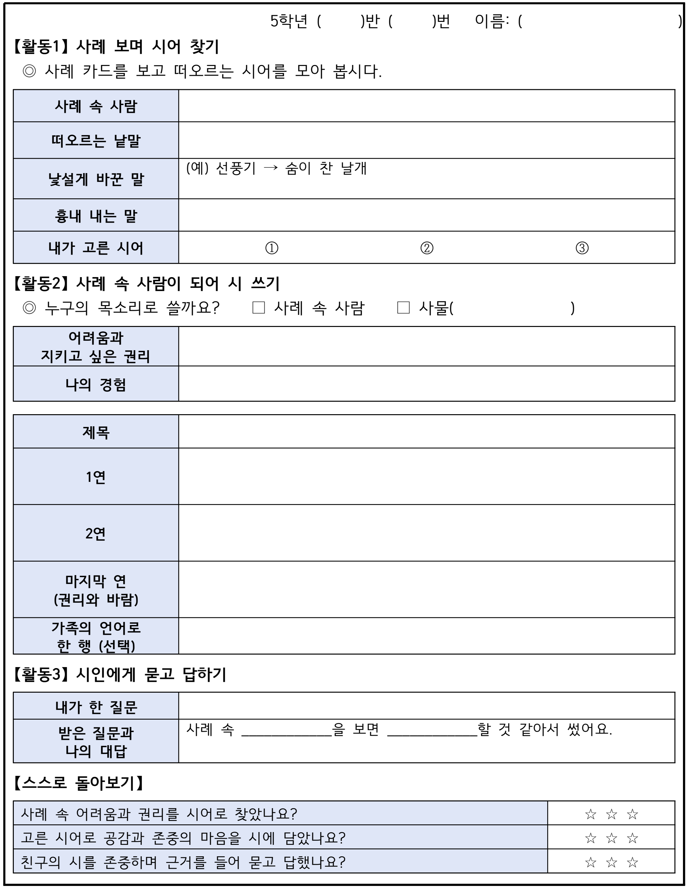
교과 융합 프로젝트 수업대덕초 · 5학년일 시 | 대 상 | 5학년 2반 | 교과서 | 과학 54~55(10/12) | 지도교사 | ||||||||||
|---|---|---|---|---|---|---|---|---|---|---|---|---|---|---|---|
프로젝트 | 지구촌 집 지혜로 폭염·한파 이겨내기 (3/8) | xplore | | ||||||||||||
본시 성취기준 | [6과07-04] 일상생활에서 단열을 이용하는 사례를 조사하고, 온도를 오랫동안 일정하게 유지할 수 있는 장치를 창의적으로 만들 수 있다. | 본시 관련교과 | 과학 | ||||||||||||
학습목표 | 나라별 집을 탐구하여 단열 원리를 찾고, 생활 속 단열 사례를 조사할 수 있다. | ||||||||||||||
수업 모형 | 순환 학습 모형 | 교과 역량 | 과학적 탐구 역량 | ||||||||||||
수업전략 | 수업 의도 | - 게르, 이글루, 한옥처럼 기후에 맞게 지은 집을 탐구하며, 낯선 생활 방식을 그 지역 사람들이 찾아낸 과학적 지혜로 이해하게 한다. - 집의 구조에서 찾은 단열 원리를 간단한 보온 실험과 생활 속 사례로 확인하여, 4차시 교실 폭염·한파 대처법을 찾는 근거로 삼게 한다. | |||||||||||||
다문화 주도성 | | | |||||||||||||
☑ | ☑ | ☐ | ☐ | ||||||||||||
이주배경학생 지도계획 | - 가족 나라의 집 사진이나 경험을 미리 받아 두어 원하는 경우 ‘문화 안내자’로 소개하게 하고, 단열·열의 이동 등 과학 용어는 그림 카드로 함께 제시한다. | ||||||||||||||
단계 (시간) | 학습요소 | 교수·학습 활동 | 자료(▶) 및 유의점(☞) |
|---|---|---|---|
도입 (5´) | 추운 곳의 집에 대한 궁금증 갖기 | ▣ 학습동기 유발 ◦ 영하 40℃의 집 상상하기 ∙ 영하 40℃의 초원과 북극에서 사람들은 어떤 집에 살까요? - 바람이 들어오지 않는 두꺼운 집에 살 것 같아요. - 집을 따뜻하게 만들어 주는 재료가 사용된 집에 살 것 같아요. ◦ 보온 실험 준비하기 ∙ 따뜻한 물을 담은 컵 세 개를 서로 다르게 감싸 둡시다. - 펠트와 뽁뽁이로 감싸고, 한 컵은 그대로 둘게요. ∙ 시간이 지난 뒤에 어느 컵의 물의 온도가 가장 높을까요? | ▶ 집 사진, 컵, 펠트, 뽁뽁이 ☞ 화상을 막도록 40℃ 정도의 물을 쓴다. |
탐구 문제 확인하기 | ▣ 공부할 문제 확인 ♣ 세계 여러 나라의 집에 숨은 단열의 원리를 찾아봅시다. | ||
활동 순서 살펴보기 | ▣ 학습활동 안내 【활동1】 세계의 집 탐구하기 【활동2】 단열의 원리 찾기 【활동3】 생활 속 단열 찾기 | ||
탐색 (10´) | 나라별 집의 재료와 구조에서 열의 이동을 막는 방법 찾기 | ▣ 【활동1】 세계의 집 탐구하기 ◦ 모둠별 집 사진 탐구하기 ∙ 패드로 집 사진을 확대하여 재료와 구조를 살펴봅시다. - 게르는 양털로 만든 펠트를 여러 겹 덮었어요. - 이글루는 눈 벽돌로 짓고 입구를 낮게 만들었어요. - 한옥은 두꺼운 흙벽과 겹창으로 바람을 막아요. ◦ 가족 나라의 집 소개하기 ∙ 가족 나라의 집은 더위와 추위를 막기 위해 어떤 방법을 사용했는지 소개해 봅시다. - 필리핀 할머니 댁은 바닥을 높여 바람이 잘 통해요. - 태국 할아버지 댁은 창문을 크게 만들어 바람이 잘 통해요. ∙ 집 안의 열이 빠져나가는 길을 화살표로 그려 봅시다. | ▶ 스마트 패드, 집 사진, 활동지 ☞ 소개는 원하는 학생이 ‘문화 안내자’로 하고, 모두가 질문하는 탐구자가 되게 한다. |
교과 융합 프로젝트 수업대덕초 · 5학년단계 (시간) | 학습요소 | 교수·학습 활동 | 자료(▶) 및 유의점(☞) |
|---|---|---|---|
개념 도입 (10´) | 보온 실험 결과로 단열의 뜻과 원리 이해하기 | ▣ 【활동2】 단열의 원리 찾기 ◦ 보온 실험 결과 확인하기 ∙ 세 컵의 물 온도를 재어 처음 온도와 비교해 봅시다. - 감싼 컵의 물이 그대로 둔 컵보다 덜 식었어요. ∙ 감싼 컵의 물이 덜 식은 까닭은 무엇일까요? - 펠트와 뽁뽁이 속 공기가 열의 이동을 막았어요. ◦ 단열의 뜻 정리하기 ∙ 두 물체 사이에서 열의 이동을 줄이는 것을 단열이라고 합니다. ∙ 세계의 집에서 찾은 단열의 공통점을 말해 봅시다. - 공기를 품은 재료를 두껍게 써서 열의 이동을 막아요. | ▶ 온도계, 활동지 ☞ 실험 결과를 바탕으로 학생이 먼저 원리를 말하게 한 뒤 정리한다. |
개념 적용 (10´) | 생활 속 단열 이용 사례를 조사하여 집의 지혜와 잇기 | ▣ 【활동3】 생활 속 단열 찾기 ◦ 생활 속 단열 이용 사례 조사하기 ∙ 패드로 집과 학교에서 단열을 이용하는 사례를 찾아봅시다. - 이중창, 보온병, 아이스박스, 벽 속 단열재가 있어요. ◦ 세계의 집 지혜와 짝짓기 ∙ 조사한 사례와 닮은 세계 집의 지혜를 짝지어 봅시다. - 겨울 패딩은 게르의 펠트처럼 공기층으로 열을 막아요. - 이중창은 한옥의 겹창처럼 공기층을 만들어요. | ▶ 스마트 패드, 활동지 ☞ 조사한 사례는 4차시 교실 대처법 찾기에 활용한다. |
정리 (5´) | 단열 원리를 정리하며 다른 문화의 지혜 되새기기 | ▣ 학습내용 정리하기 ◦ 배운 내용 정리하기 ∙ 단열이란 무엇이고 어디에 이용되는지 말해 봅시다. - 열의 이동을 줄이는 것이고, 집과 보온병에 이용해요. ◦ 느낀 점 나누기 ∙ 세계의 집을 탐구하며 새롭게 느낀 점을 말해 봅시다. - 낯설어 보이던 집에 기후를 이겨 내는 과학이 숨어 있었어요. | ☞ 집 모양이 다른 까닭을 그 지역의 기후와 지혜로 바라보게 한다. |
▣ 차시 예고 ♣ 기후위기 극복 노력을 조사하고 교실 대처법을 찾아봅시다. |
판서계획 | 3. 열과 우리 생활 | ||
|---|---|---|---|
♣ 세계 여러 나라의 집에 숨은 단열의 원리를 찾아봅시다. | * 세계의 집에 숨은 단열 게르-펠트, 이글루-눈 벽돌, 한옥-흙벽·겹창 * 단열: 열의 이동을 줄이는 것 생활 속 단열: 이중창, 보온병, 아이스박스 | ||
【활동1】 세계의 집 탐구하기 【활동2】 단열의 원리 찾기 【활동3】 생활 속 단열 찾기 |
평가 계획 | 평가내용 | 척도 | 채점 기준 | 평가 방법 |
|---|---|---|---|---|
나라별 집의 단열 구조에서 단열 원리를 찾고, 생활 속 단열 이용 사례를 조사할 수 있는가? | 매우 잘함 | 나라별 집의 단열 구조를 열의 이동과 관련지어 설명하고, 생활 속 단열 사례를 다양하게 조사할 수 있다. | 실험‧실습 | |
잘함 | 나라별 집의 단열 구조에서 단열 원리를 찾고, 생활 속 단열 사례를 조사할 수 있다. | |||
보통 | 도움을 받아 단열 원리를 찾고, 생활 속 단열 사례를 말할 수 있다. | |||
이주배경학생 평가 시 유의점 | 과학 용어를 정확히 쓰는지보다 그림, 화살표, 몸짓 등으로 열의 이동과 단열 원리를 표현하는지를 중심으로 평가하고, 가족 나라의 집을 소개한 경험도 의미 있는 탐구 결과로 인정한다. | |||
교과 융합 프로젝트 수업대덕초 · 5학년5학년 ( )반 ( )번 이름: ( )
【활동1】 세계의 집 탐구하기
◎ 집 사진을 보고, 열의 이동을 막는 재료와 구조를 찾아 적어 봅시다. 집(나라) 사는 곳의 기후 열의 이동을 막는 재료와 구조
게르
(몽골)
이글루
(캐나다 북부)
한옥
(대한민국)
( )의 집
◎ 우리 모둠이 맡은 집에서 열이 빠져나가는 길을 화살표로 그려 봅시다.
【활동2】 단열의 원리 찾기
◎ 보온 실험 결과를 적고, 단열의 뜻을 정리해 봅시다. 컵 처음 온도(℃) 나중 온도(℃) 온도 변화(℃)
펠트로 감싼 컵
뽁뽁이로 감싼 컵
감싸지 않은 컵
◎ 단열: 두 물체 사이에서 ( )의 이동을 줄이는 것
【활동3】 생활 속 단열 찾기
생활 속 단열 사례 닮은 세계 집의 지혜
【스스로 돌아보기】
세계 여러 나라 집에서 단열 구조를 찾았나요? ☆ ☆ ☆
실험 결과로 단열의 원리를 설명할 수 있나요? ☆ ☆ ☆
다른 문화의 집을 그 지역의 지혜로 존중하였나요? ☆ ☆ ☆
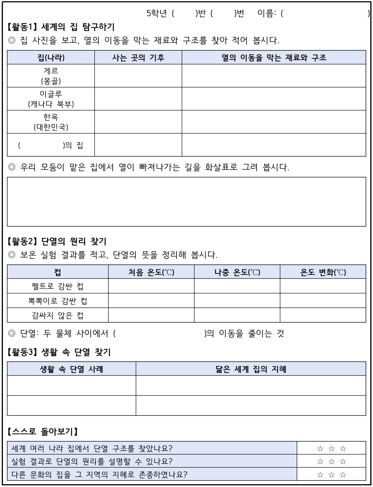
교과 융합 프로젝트 수업대덕초 · 5학년융합과목 | 도덕, 과학 | 대 상 | 5학년 | 프로젝트 단계 | xplore (탐구하기) | ||||||
|---|---|---|---|---|---|---|---|---|---|---|---|
프로젝트 | 지구촌 집 지혜로 폭염·한파 이겨내기 (4/8) | | |||||||||
성취기준 | [6도04-01] 지구의 환경 위기 상황을 이해하고, 이를 극복하기 위한 다양한 방안을 찾아 자신의 일상에서 실천하고자 노력한다. [6과07-04] 일상생활에서 단열을 이용하는 사례를 조사하고, 온도를 오랫동안 일정하게 유지할 수 있는 장치를 창의적으로 만들 수 있다. | ||||||||||
학습목표 | 기후위기 극복 노력을 조사하고, 집 지혜를 응용해 교실의 폭염·한파 대처법을 찾을 수 있다. | ||||||||||
수업전략 | 수업모형 | 문제해결 학습 모형 | 교과 역량 | 도덕적 사고 능력, 과학적 문제해결 능력 | |||||||
다문화 주도성 | | | |||||||||
☐ | ☑ | ☑ | ☑ | ||||||||
단계 (시간) | 학습요소 | 교수·학습 활동 | 자료(▶) 및 유의점(☞) |
|---|---|---|---|
문제 확인하기 (5′) | 교실의 더위·추위 문제 확인하기 | ▣ 학습동기 유발 ◦ 세계의 집 지혜 떠올리기 ∙ 게르, 이글루, 한옥에 숨은 단열의 지혜를 떠올려 봅시다. ∙ 교실 온도 기록을 보고 가장 덥고 추운 곳을 찾아봅시다. | ▶ 3차시 집 사진, 교실 온도 기록표 |
공부할 문제 파악 | ▣ 공부할 문제 확인 ♣ 기후위기 극복 노력을 조사하고 교실 대처법을 찾아봅시다. | ||
문제해결 방법 탐색하기 (12′) | 나라별 기후위기 조사하기 | ▣ 【활동1】 탐구 나라 기후위기 조사하기 ◦ 탐구 나라의 폭염·한파 조사하기 ∙ 탐구 나라의 폭염·한파 피해와 극복 노력을 찾아봅시다. ◦ 조사 내용 나누기 ∙ 나라별 조사 내용을 패들릿 지도에 모아 봅시다. | ▶ 태블릿, 패들릿 ☞ 기관·언론 누리집 등 믿을 수 있는 자료를 고르고 출처를 적게 한다. |
문제 해결하기 (18′) | 집 지혜를 응용한 교실 대처법 만들기 | ▣ 【활동2】 교실 대처법 찾기 ◦ 집 지혜를 교실에 응용하기 ∙ 세계 집의 단열 지혜를 교실에 어떻게 쓸지 의논해 봅시다. ∙ 단열 원리를 이용한 폭염·한파 대처법을 찾아봅시다. ◦ 실천할 대처법 고르기 ∙ 효과와 실천 가능성을 기준으로 대처법을 골라 봅시다. | ▶ 활동지 ☞ 창문 뽁뽁이, 커튼처럼 학생이 직접 할 수 있는 방법을 중심으로 찾게 한다. |
의견을 반영하여 대처법 다듬기 | ▣ 【활동3】 대처법 다듬기 ◦ 대처법 발표하고 고치기 ∙ 모둠별 대처법을 발표하고 친구의 의견을 들어 봅시다. ∙ 의견을 반영해 고친 대처법을 카드뉴스 재료로 모아 봅시다. | ☞ 고친 대처법은 5~6차시 카드뉴스 자료로 활용한다. | |
평가 하기 (5′) | 배운 점 나누고 실천 다짐하기 | ▣ 학습내용 정리 ◦ 배운 내용과 느낀 점 나누기 ∙ 다른 나라의 극복 노력에서 배운 점을 말해 봅시다. ◦ 실천 다짐하기 ∙ 오늘 찾은 대처법 중 내가 실천할 일을 정해 봅시다. | ☞ 여러 나라의 노력을 우리 생활과 연결 지어 말하게 한다. |
▣ 차시 예고 ♣ 저작권을 지키며 인권·다문화 카드뉴스를 만들어 봅시다. |
교과 융합 프로젝트 수업대덕초 · 5학년일 시 | 대 상 | 5학년 5반 | 교과서 | 실과 105(3/15) | 지도교사 | ||||||||||
|---|---|---|---|---|---|---|---|---|---|---|---|---|---|---|---|
프로젝트 | 지구촌 집 지혜로 폭염·한파 이겨내기 (5/8) | nite | | ||||||||||||
본시 성취기준 | [6실04-02] 생활 속 디지털 기술의 중요성을 이해하고, 디지털 기기와 디지털 콘텐츠 저작 도구를 사용하여 발표 자료를 만들어 보면서 디지털 기기의 활용 능력을 기른다. | 본시 관련교과 | 실과 | ||||||||||||
학습목표 | 저작권을 지키며 디지털 저작 도구로 인권·다문화 카드뉴스를 만들 수 있다. | ||||||||||||||
수업 모형 | 시범 실습 모형 | 교과 역량 | 기술적 실천 역량 | ||||||||||||
수업전략 | 수업 의도 | - 2차시에 쓴 인권 시와 3~4차시 탐구 내용을 카드뉴스로 바꾸며, 디지털 기기로 생각을 전하는 능력과 저작권을 지키는 태도를 함께 기른다. - 짝과 역할을 나누고 이웃이 쓰는 언어로 한 문장을 더하게 하여, 서로 다른 강점이 모여 더 많은 사람에게 닿는 메시지가 됨을 경험하게 한다. | |||||||||||||
다문화 주도성 | | | |||||||||||||
☑ | ☑ | ☑ | ☐ | ||||||||||||
이주배경학생 지도계획 | - 한국어 읽기가 어려운 학생에게는 저작 도구 메뉴를 그림으로 안내한 카드를 주고, 디지털 기기에 익숙한 친구와 짝을 지어 함께 만들게 한다. | ||||||||||||||
단계 (시간) | 학습요소 | 교수·학습 활동 | 자료(▶) 및 유의점(☞) |
|---|---|---|---|
실습목표 확인 (5´) | 줄글과 카드뉴스 비교하며 장점 찾기 | ▣ 학습동기 유발 ◦ 줄글과 카드뉴스 비교하기 ∙ 같은 내용을 줄글과 카드뉴스로 보고 차이를 말해 봅시다. - 카드뉴스는 그림이 크고 글이 짧아 한눈에 들어옵니다. ∙ 한국어가 서툰 이웃에게는 무엇이 더 잘 전달될까요? - 그림과 여러 언어가 함께 있는 카드뉴스입니다. | ▶ 프레젠테이션 |
공부할 문제 파악 | ▣ 공부할 문제 확인 ♣ 저작권을 지키며 인권·다문화 카드뉴스를 만들어 봅시다. | ||
학습활동 안내 | ▣ 학습활동 안내 【활동1】 카드뉴스 살펴보기 【활동2】 저작 도구 익히기 【활동3】 카드뉴스 만들기 | ||
실습내용 알기 (5´) | 카드뉴스 구성과 저작권 지키는 방법 알기 | ▣ 【활동1】 카드뉴스 살펴보기 ◦ 카드뉴스의 구성 알기 ∙ 교과서 105쪽을 보고 카드뉴스의 구성을 알아봅시다. - 표지, 내용, 마무리로 나뉘고 한 장에 한 가지만 담습니다. ◦ 저작권 지키는 방법 알기 ∙ 저작권을 지키지 않으면 어떤 문제점이 있을까요? - 저작권을 침범하게 됩니다. - 좋은 질의 콘텐츠를 더 이상 생산할 수 없게 됩니다. ∙ 다른 사람의 사진이나 그림을 쓸 때 지킬 점은 무엇일까요? - 이용 조건을 확인하고 출처를 꼭 밝혀야 합니다. - 직접 찍은 사진이나 그린 그림을 쓰면 좋습니다. - 다른 친구가 쓴 글이나 그림을 이용할 때 허락을 받습니다. | ▶ 교과서 105쪽 ☞ 무료 이미지라도 이용 조건을 확인하게 한다. |
교과 융합 프로젝트 수업대덕초 · 5학년단계 (시간) | 학습요소 | 교수·학습 활동 | 자료(▶) 및 유의점(☞) |
|---|---|---|---|
시범 보이기 (8´) | 저작 도구의 기본 기능을 따라 하며 익히기 | ▣ 【활동2】 저작 도구 익히기 ◦ 캔바 기본 기능 시범 보기 ∙ 템플릿 고르기, 글상자와 그림 넣기를 따라 해 봅시다. ◦ 출처 표시하기 ∙ 그림 아래에 출처를 넣는 방법을 연습해 봅시다. - 그림 아래에 ‘출처: 누리집 이름’을 작게 넣습니다. ∙ 번역기로 옮긴 문장을 글상자에 넣어 봅시다. | ▶ 캔바, 크롬북 ☞ 교사 화면을 함께 보며 한 단계씩 따라 하게 한다. |
실습하기 (17´) | 짝과 함께 인권 메시지를 담은 카드뉴스 완성하기 | ▣ 【활동3】 카드뉴스 만들기 ◦ 짝과 카드뉴스 기획하기 ∙ 2차시 시와 탐구 내용 중 전할 메시지를 정해 봅시다. - 폭염 속 쪽방 이웃에게도 시원할 권리가 있다고 알립니다. ∙ 표지, 내용, 마무리의 내용과 역할을 나누어 봅시다. ◦ 카드뉴스 만들기 ∙ 저작권을 지키며 카드뉴스를 만들어 봅시다. ∙ 이웃이 쓰는 언어로 핵심 문장 하나를 더해 봅시다. - 베트남어와 영어로 ‘모두에게 시원한 여름을’을 넣습니다. | ▶ 캔바, 스마트 패드, 활동지 ☞ 글, 그림, 번역 등 각자의 강점을 살려 역할을 나누게 한다. |
정리 및 평가 (5´) | 작품을 나누며 저작권과 다문화 메시지 점검하기 | ▣ 학습내용 정리하기 ◦ 패들렛 갤러리 감상하기 ∙ 친구의 카드뉴스에서 저작권을 잘 지킨 점을 찾아봅시다. - 사진마다 아래에 출처가 적혀 있습니다. ◦ 느낀 점 나누기 ∙ 여러 언어로 된 카드뉴스를 보고 느낀 점을 말해 봅시다. - 친구 나라 말로도 쓰니 더 많은 이웃에게 전할 수 있습니다. | ▶ 패들렛 ☞ 완성한 카드뉴스는 7차시 캠페인 자료로 활용한다. |
▣ 차시 예고 ♣ 지구 환경 위기의 심각성을 알아봅시다. |
판서계획 | 6. 디지털 콘텐츠와 문제 해결 | ||
|---|---|---|---|
♣ 저작권을 지키며 인권·다문화 카드뉴스를 만들어 봅시다. | * 카드뉴스의 구성 표지 → 내용 → 마무리 (짧은 글, 큰 그림) * 저작권 지키기 이용 조건 확인하기, 출처 밝히기 | ||
【활동1】 카드뉴스 살펴보기 【활동2】 저작 도구 익히기 【활동3】 카드뉴스 만들기 |
평가 계획 | 평가내용 | 척도 | 채점 기준 | 평가 방법 |
|---|---|---|---|---|
저작권을 지키며 디지털 저작 도구로 인권·다문화 카드뉴스를 만들 수 있는가? | 매우 잘함 | 구성에 맞게 메시지를 담고, 저작권을 지키며 저작 도구의 기능을 능숙하게 활용하여 카드뉴스를 만들 수 있다. | 실험‧실습 | |
잘함 | 저작권을 지키며 저작 도구를 활용하여 인권·다문화 카드뉴스를 만들 수 있다. | |||
보통 | 도움을 받아 저작 도구로 간단한 카드뉴스를 만들 수 있다. | |||
이주배경학생 평가 시 유의점 | 한국어 문장의 정확성보다 그림, 색, 배치로 메시지를 전달하는 능력과 저작권을 지키는 태도를 중심으로 평가하고, 가족의 언어로 쓴 문장도 의미 있는 표현으로 인정한다. | |||
교과 융합 프로젝트 수업대덕초 · 5학년5학년 ( )반 ( )번 이름: ( )
【활동1】 카드뉴스 살펴보기
◎ 교과서 105쪽을 보고 카드뉴스의 구성과 특징을 정리해 봅시다. 구성 들어갈 내용과 특징
표지
내용
마무리
◎ 저작권 약속: □ 이용 조건 확인하기 □ 출처 밝히기 □ 직접 찍거나 그린 자료 쓰기
【활동2】 저작 도구 익히기
◎ 익힌 기능에 ✔ 표시해 봅시다. □ 템플릿 고르기 □ 글상자 넣기 □ 그림 넣기 □ 출처 넣기
【활동3】 카드뉴스 만들기
◎ 짝과 함께 전할 메시지: ___________________________________________
1장 표지 2장 내용 3장 마무리
맡은 사람: 맡은 사람: 맡은 사람:
◎ 사용한 자료의 출처를 기록해 봅시다. 사용한 자료 출처 이용 조건
◎ 이웃이 쓰는 언어로 더한 문장(선택): ___________________________
【스스로 돌아보기】
카드뉴스의 구성에 맞게 메시지를 담았나요? ☆ ☆ ☆
사용한 자료의 출처를 밝혀 저작권을 지켰나요? ☆ ☆ ☆
서로의 강점을 살려 짝과 협력하였나요? ☆ ☆ ☆
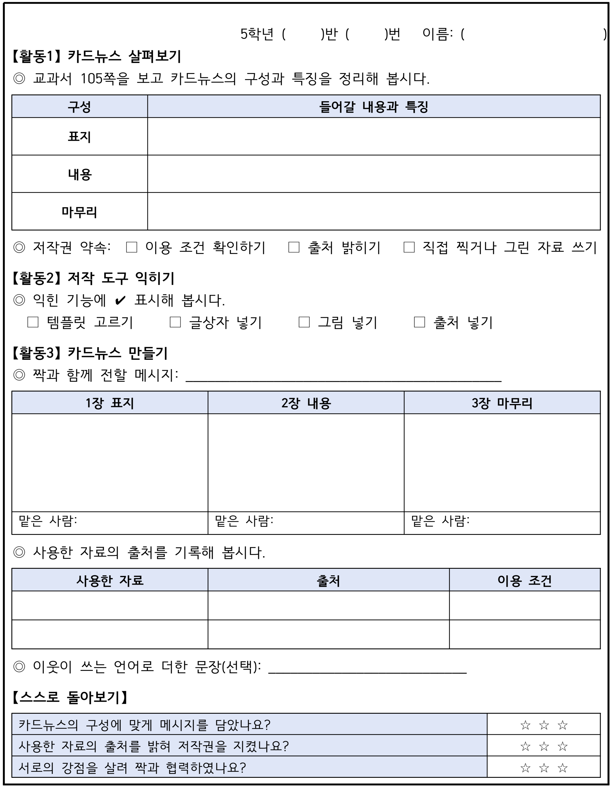
교과 융합 프로젝트 수업대덕초 · 5학년일 시 | 대 상 | 5학년 3반 | 교과서 | 도덕 104~107(1/4) | 지도교사 | ||||||||||
|---|---|---|---|---|---|---|---|---|---|---|---|---|---|---|---|
프로젝트 | 지구촌 집 지혜로 폭염·한파 이겨내기 (6/8) | nite | | ||||||||||||
본시 성취기준 | [6도04-01] 지구의 환경 위기 상황을 이해하고, 이를 극복하기 위한 다양한 방안을 찾아 자신의 일상에서 실천하고자 노력한다. | 본시 관련교과 | 도덕 | ||||||||||||
학습목표 | 지구 환경 위기의 심각성을 이해할 수 있다. | ||||||||||||||
수업 모형 | 집단 탐구 수업 모형 | 교과 역량 | 도덕적 공동체 의식 | ||||||||||||
수업전략 | 수업 의도 | - 미술 작품, 글, 사진 등 다양한 자료를 활용하여 지구의 경고를 깨닫고 여러 사례를 조사하며 모둠별로 발표 자료를 제작하고 공유하면서 지구 환경 위기의 심각성을 이해한다. - 이주배경학생과 관련된 나라의 환경 위기를 예시로 제시하면서 환경 위기는 특정 나라만의 문제가 아니라 지구 전체의 문제임을 깊이 이해하는 학습 주제가 되도록 한다. | |||||||||||||
다문화 주도성 | | | |||||||||||||
☐ | ☑ | ☑ | ☐ | ||||||||||||
이주배경학생 지도계획 | - 이주배경학생이 지구 환경 위기의 심각성을 이해할 수 있도록 시각적 자료를 중심으로 조사할 수 있도록 계획하며 한국어 수준을 사전에 파악하고 필요한 자료를 준비한다. | ||||||||||||||
단계 (시간) | 학습요소 | 교수·학습 활동 | 자료(▶) 및 유의점(☞) |
|---|---|---|---|
학습문제 인식하기 (5´) | 동기유발 | ▣ 학습동기 유발 ◦ 환경파괴를 주제로 한 작품 감상하기 ∙ 작품에서 무엇을 표현했나요? - 바다에서 수거한 플라스틱으로 큰 고래를 만들었어요. - 하얗게 변한 산호초를 표현했어요. ∙ 작품에서 전달하고자 하는 주제는 무엇인지 말해봅시다. - 바다 쓰레기의 심각성입니다. - 지구 온난화로 인한 기후의 위기입니다. | ▶ 프레젠테이션 ☞ 작품 정보나 제작 배경을 충분히 설명하도록 한다. |
공부할 문제 파악 | ▣ 공부할 문제 확인 ♣ 지구 환경 위기의 심각성을 알아봅시다. | ||
학습활동 안내 | ▣ 학습활동 안내 【활동1】 지구의 경고 【활동2】 카드뉴스 만들기 【활동3】 공유하기 | ||
탐구 문제 설정 및 계획하기 (7´) | 지구 환경 위기를 알리는 글 읽기 | ▣ 【활동1】 지구의 경고 ◦ 지구 환경 위기를 알리는 글 읽기 ∙ 지구는 우리에게 무엇을 경고했나요? - 기후 위기와 환경파괴로 지구의 많은 생명이 위협받고 있다는 것을 경고했습니다. ∙ 지구의 경고를 듣고 어떤 생각이 들었나요? - 무섭기도 하고 슬프기도 합니다. - 지구 환경 위기를 해결해야 한다는 생각이 듭니다. ∙ 지구 환경 위기가 계속되면 우리 삶에 어떤 영향이 생길까요? - 사람들이 살아남을 수 없습니다. | ▶ 프레젠테이션 ☞ 인간의 활동이 지구 환경 위기의 원인임을 알 수 있게 한다. |
교과 융합 프로젝트 수업대덕초 · 5학년단계 (시간) | 학습요소 | 교수·학습 활동 | 자료(▶) 및 유의점(☞) |
|---|---|---|---|
탐구 실시하기 (13´) | 지구 환경 위기를 알리는 자료 만들기 | ▣ 【활동2】 카드뉴스 만들기 ◦ 지구 환경 위기의 종류 알아보기 ∙ 지구 환경 위기에는 어떤 종류가 있나요? - 기후변화와 쓰레기 문제가 있습니다. - 대기오염과 동물의 멸종 문제가 있습니다. ◦ 지구 환경 위기 카드뉴스 만들기 ∙ 지구 환경 위기에 대한 카드뉴스를 만들 때 들어가야 하는 것은 무엇이 있나요? - 제목과 환경 위기 관련 사진입니다. - 지구 환경 위기를 알리는 내용입니다. ∙ 지구 환경 위기 관련 신문기사를 보고 조사 보고서를 만들고 모둠과 협력하여 카드뉴스를 만들어 봅시다. | ▶ 태블릿, 신문기사, 활동지 ☞ 이주배경학생의 나라와 관련된 지구환경 위기를 예시로 하여 글로컬 시민성을 높이도록 한다. |
발표 및 논의 하기 (12´) | 조사한 내용을 소개하고 서로의 생각 나누기 | ▣ 【활동3】 공유하기 ◦ 조사한 내용 발표하기 ∙ 작성한 조사 내용을 발표하며 지구 환경 위기의 심각성을 공유해 봅시다. ◦ 생각 나누기 ∙ 발표를 듣고 알게 된 점과 궁금한 점을 정리해 봅시다. - 기후 위기로 여러 나라에서 고통을 받고 있다는 것을 알게 되었습니다. - 지구 환경 위기를 해결할 수 있는 방법은 무엇이 있는지 궁금합니다. | ▶ 태블릿 ☞ 지구 환경 위기에 지나친 두려움이나 공포를 느끼지 않도록 유의한다. |
정리하기 (3´) | 학습내용 정리 | ▣ 학습내용 정리하기 ◦ 배운 내용 정리하기 ∙ 오늘 수업을 통해 알게 된 점이나 느낀 점을 말해 봅시다. - 지구 환경 위기가 심각하다는 것을 알게 되었습니다. - 지구 환경 위기는 모든 나라의 문제임을 깨닫고 환경을 보호하기 위해 내가 실천할 수 있는 일을 해야겠다고 느꼈습니다. | ☞ 지구 환경 위기에 지속적으로 관심을 가지도록 유도한다. |
▣ 차시 예고 ♣ 캠페인 자료를 완성하고 발표회를 열어 봅시다. |
판서계획 | 7. 지구의 내일을 심는 우리 | ||
|---|---|---|---|
♣ 지구 환경 위기의 심각성을 알아봅시다. | 카드 뉴스에 들어갈 내용 제목-지구 환경 위기 사진- 핵심내용 | ||
【활동1】 지구의 경고 【활동2】 카드뉴스 만들기 【활동3】 공유하기 |
평가 계획 | 평가내용 | 척도 | 채점 기준 | 평가 방법 |
|---|---|---|---|---|
지구 환경 위기를 조사하고 환경 위기의 심각성을 설명할 수 있는가? | 매우 잘함 | 지구 환경 위기를 조사하고 그 심각성과 영향을 설명할 수 있다. | 관찰법 | |
잘함 | 지구 환경 위기를 조사하고 그 심각성을 설명할 수 있다. | |||
보통 | 지구 환경 위기를 도움을 받아 조사할 수 있다. | |||
이주배경학생 평가 시 유의점 | 이주배경학생이 한국어 의사소통이 매우 어려우므로 이주배경학생의 모국어로 된 설명자료를 제시하고 정확한 표현보다는 조사한 사진 자료와 단어 중심으로 평가한다. | |||
교과 융합 프로젝트 수업대덕초 · 5학년5학년 ( )반 ( )번 이름: ( )
지구 환경 위기 관련 신문을 읽고 내용을 정리해 봅시다. 뉴스 제목
기사의 핵심 내용
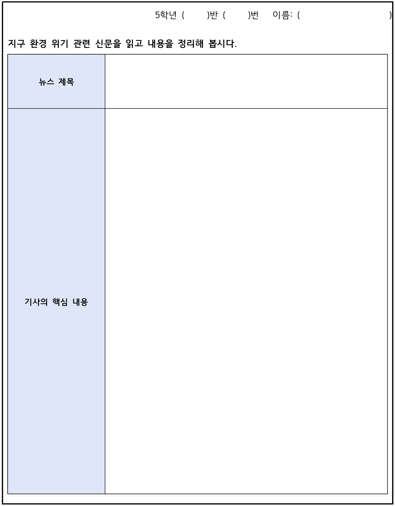
교과 융합 프로젝트 수업대덕초 · 5학년융합과목 | 도덕, 실과, 미술 | 대 상 | 5학년 | 프로젝트 단계 | ake (표현하기) | ||||||
|---|---|---|---|---|---|---|---|---|---|---|---|
프로젝트 | 지구촌 집 지혜로 폭염·한파 이겨내기 (7/8) | | |||||||||
성취기준 | [6도04-01] 지구의 환경 위기 상황을 이해하고, 이를 극복하기 위한 다양한 방안을 찾아 자신의 일상에서 실천하고자 노력한다. [6실04-02] 생활 속 디지털 기술의 중요성을 이해하고, 디지털 기기와 디지털 콘텐츠 저작 도구를 사용하여 발표 자료를 만들어 보면서 디지털 기기의 활용 능력을 기른다. [6미01-03] 주변 환경에 대한 민감한 태도로 대상과 상호 작용하며 새로운 의미를 발견할 수 있다. | ||||||||||
학습목표 | 카드뉴스와 시를 엮어 캠페인 자료를 완성하고, 발표회에서 서로 피드백할 수 있다. | ||||||||||
수업전략 | 수업모형 | 프로젝트 학습 모형 | 교과 역량 | 도덕적 공동체 의식, 시각적 소통 역량 | |||||||
다문화 주도성 | | | |||||||||
☑ | ☑ | ☑ | ☑ | ||||||||
단계 (시간) | 학습요소 | 교수·학습 활동 | 자료(▶) 및 유의점(☞) |
|---|---|---|---|
목표 확인하기 (5′) | 캠페인의 목적과 대상 정하기 | ▣ 학습동기 유발 ◦ 지금까지의 결과물 돌아보기 ∙ 패들릿에 모인 시와 카드뉴스를 살펴봅시다. ∙ 우리 캠페인을 누구에게 알리고 싶은지 말해 봅시다. | ▶ 패들릿 |
공부할 문제 파악 | ▣ 공부할 문제 확인 ♣ 캠페인 자료를 완성하고 발표회를 열어 봅시다. | ||
작품 완성하기 (12′) | 시와 카드뉴스 엮기 | ▣ 【활동1】 캠페인 자료 완성하기 ◦ 시와 카드뉴스 엮기 ∙ 카드뉴스에 어울리는 시 구절과 캠페인 구호를 넣어 봅시다. ◦ 다국어 문장 더하기 ∙ 이웃이 쓰는 언어로 핵심 문장을 함께 적어 봅시다. | ▶ 캔바, 크롬북 ☞ 번역 문장은 가족이나 이중언어 강사와 함께 확인한다. |
발표 하기 (18′) | 캠페인을 발표하고 감상하기 | ▣ 【활동2】 캠페인 발표회 열기 ◦ 모둠별 캠페인 발표하기 ∙ 카드뉴스를 소개하고 인권 시를 낭송해 봅시다. ∙ 이중언어로 쓴 행은 두 언어로 들려줘 봅시다. | ▶ TV, 패들릿 ☞ 이중언어 낭송은 원하는 학생만 하게 한다. |
피드백을 반영하여 자료 고치기 | ▣ 【활동3】 피드백하고 고치기 ◦ 칭찬과 제안 나누기 ∙ 마음을 움직인 표현과 제안을 패들릿 댓글로 써 봅시다. ◦ 피드백 반영하기 ∙ 받은 의견을 반영하여 캠페인 자료를 고쳐 봅시다. | ☞ 댓글은 작품에 대한 의견만 고운 말로 쓰게 한다. | |
평가 하기 (5′) | 발표회 소감 나누기 | ▣ 학습내용 정리 ◦ 발표회 소감 나누기 ∙ 다른 언어로 들은 시에서 느낀 점을 말해 봅시다. | ☞ 이중언어 발표 소감을 나누며 서로의 언어를 존중하게 한다. |
▣ 차시 예고 ♣ 캠페인을 알리고 생활 속 실천을 약속해 봅시다. |
교과 융합 프로젝트 수업대덕초 · 5학년융합과목 | 도덕, 실과 | 대 상 | 5학년 | 프로젝트 단계 | ake (표현하기) | ||||||
|---|---|---|---|---|---|---|---|---|---|---|---|
프로젝트 | 지구촌 집 지혜로 폭염·한파 이겨내기 (8/8) | | |||||||||
성취기준 | [6도04-01] 지구의 환경 위기 상황을 이해하고, 이를 극복하기 위한 다양한 방안을 찾아 자신의 일상에서 실천하고자 노력한다. [6실04-02] 생활 속 디지털 기술의 중요성을 이해하고, 디지털 기기와 디지털 콘텐츠 저작 도구를 사용하여 발표 자료를 만들어 보면서 디지털 기기의 활용 능력을 기른다. | ||||||||||
학습목표 | 다국어 카드뉴스로 캠페인을 알리고, 생활 속 실천을 약속하며 프로젝트를 돌아볼 수 있다. | ||||||||||
수업전략 | 수업모형 | 봉사 학습 모형 | 교과 역량 | 윤리적 성찰 및 실천 성향, 기술적 실천 역량 | |||||||
다문화 주도성 | | | |||||||||
☑ | ☑ | ☑ | ☑ | ||||||||
단계 (시간) | 학습요소 | 교수·학습 활동 | 자료(▶) 및 유의점(☞) |
|---|---|---|---|
준비 하기 (5′) | 캠페인 알릴 방법 정하기 | ▣ 학습동기 유발 ◦ 발표회 피드백 돌아보기 ∙ 지난 발표회에서 받은 의견을 떠올려 봅시다. ∙ 캠페인을 어디에, 어떻게 알릴지 정해 봅시다. | ▶ 패들릿 |
공부할 문제 파악 | ▣ 공부할 문제 확인 ♣ 캠페인을 알리고 생활 속 실천을 약속해 봅시다. | ||
실행 하기 (12′) | 학교와 지역에 캠페인 알리기 | ▣ 【활동1】 캠페인 알리기 ◦ 다국어 카드뉴스 점검하기 ∙ 여러 언어로 쓴 문장이 바르게 쓰였는지 확인해 봅시다. ◦ 학교와 지역에 알리기 ∙ 학교 누리집과 패들릿에 카드뉴스를 올려 봅시다. ∙ QR 코드를 만들어 가족과 이웃에게 알려 봅시다. | ▶ 학교 누리집, 패들릿 ☞ 얼굴, 이름 등 개인 정보가 드러나지 않는지 확인한 뒤 올리게 한다. |
성찰 하기 (18′) | 생활 속 실천 다짐하기 | ▣ 【활동2】 실천 약속 정하기 ◦ 생활 속 실천 약속 정하기 ∙ 나, 가족, 학교에서 실천할 약속을 정해 봅시다. ∙ 친구의 약속 중 함께하고 싶은 것을 골라 봅시다. | ▶ 실천 약속 카드 ☞ 2주 동안 실천을 기록하게 하여 생활로 이어지게 한다. |
나의 성장 돌아보기 | ▣ 【활동3】 프로젝트 돌아보기 ◦ 프로젝트 일지로 성찰하기 ∙ 8차시 동안 나와 모둠이 성장한 점을 써 봅시다. ∙ 다른 문화에 대한 생각이 어떻게 달라졌는지 이야기해 봅시다. | ▶ 프로젝트 일지 | |
축하 하기 (5′) | 서로의 노력 축하하기 | ▣ 학습내용 정리 ◦ 프로젝트 마무리 축하하기 ∙ 여러 나라 말로 서로에게 고마움을 전해 봅시다. ∙ 프로젝트를 마치며 느낀 점을 한 문장으로 말해 봅시다. | ☞ 원하는 학생이 가족의 언어로 인사말을 알려 주게 한다. |
▣ 차시 예고 ♣ 실천 약속을 지키며 실천 일지를 써 봅시다. |
다문화, 야호~! 밥상과 공간 잇기
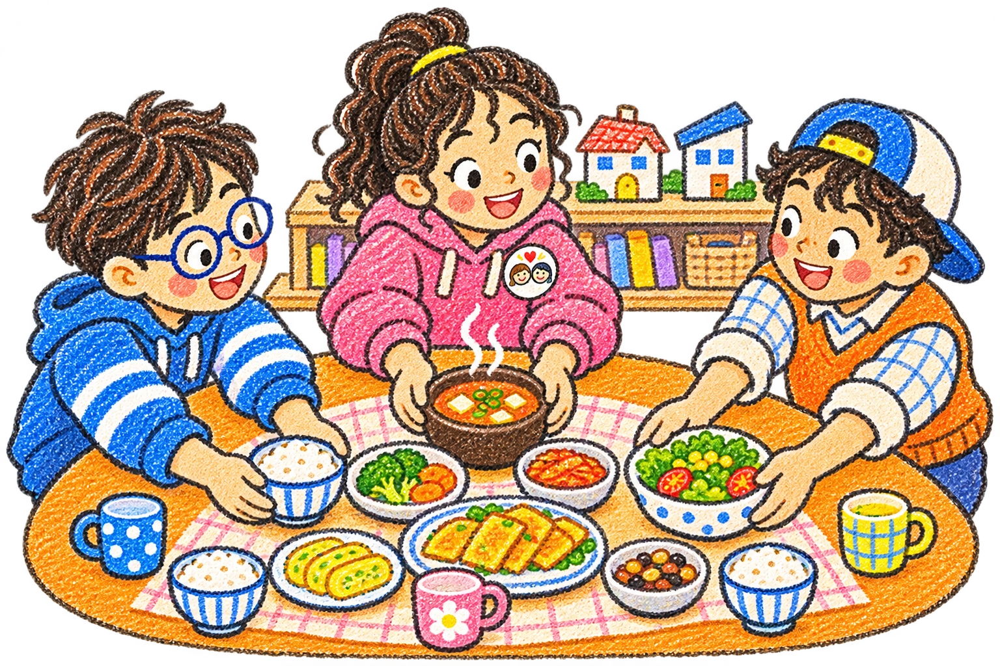
| 차시 | 교과 | 학습 주제 | 교과 역량 |
|---|---|---|---|
| 1 | 사회 | 프로젝트의 흐름을 이해하고 탐구 계획 세우기 | 문제해결력 의사결정력 |
| 2 | 사회 | 기후에 따른 식생활 문화 비교하기 | 정보활용 능력 |
| 3 | 수학 | 세계 여러 나라의 건출물 모형 만들기 | 의사소통 |
| 4 | 사회 | 국가 간의 무역을 하는 이유 알기 | 문제해결력 의사결정력 |
| 5 | 실과 | 다른 나라 친구를 배려한 우리나라 밥상 차리기 | 실천적 문제해결 |
| 6 | 실과 | 식사 예절을 알고 실천하기 | 관계 형성 |
| 7 | 미술 | 다문화 공존과 배려의 의미를 담은 배지 디자인하기 | 심미적 감성 역량 |
| 8 | 도덕 | 다문화 공존을 위한 실천 다짐하기 | 도덕적 공동체 의식 |
교과 융합 프로젝트 수업대덕초 · 6학년설계 의도 본 프로젝트는 초등 6학년 학생들이 '다문화, 야호~! 밥상과 공간 잇기'라는 융합 과제를 통해 문화적 다양성을 포용하고 다문화 주도성을 함양하는 것을 목적으로 한다. 학생들은 기후에 적응한 세계 건축물 속 입체도형과 각 나라의 식사 예절을 알아보며 다문화적 감수성과 수용성을 기를 수 있다. 또한 무역과 식문화의 다양성을 바탕으로 다른 나라 친구를 배려한 우리나라 밥상을 계획하고 배지를 디자인하는 과정에서 자기주도적 학습역량을 기른다. 나아가 지역 사회와 세계의 연결성을 인식하여 배려와 공존을 실천하는 글로컬 시민성을 함양하고, 소통과 감상 활동으로 주도적 적응력을 신장하도록 구성하였다.
| 융합과목 | 사회 | 세계의 자연환경 | 성취 기준 | [6사10-02] 세계의 다양한 기후를 알아보고 기후 환경과 인간 생활 간의 관계를 탐구한다. |
|---|---|---|---|---|
| 2. 시장경제와 국가 간 거래 | [6사11-03] 사례를 통해 무역의 의미를 이해하고, 국가 간 무역이 발생하는 이유를 탐구한다. | |||
| 수학 | 6. 원기둥, 원뿔, 구 | [6수03-07] 원기둥, 원뿔, 구를 이해하고, 구성 요소와 성질을 탐구하고 설명할 수 있다. | ||
| 실과 | 5. 바람직한 식생활 | [6실02-06] 우리나라 밥상 차림을 이해하고, 함께 식사하는 즐거움을 경험하면서 이 과정에서 식사예절을 실천한다. | ||
| 미술 | 7. 소통하는 시각 이미지 | [6미02-02] 디지털 매체 등 다양한 표현 재료와 용구를 탐색하여 작품 제작에 활용할 수 있다. | ||
| 도덕 | 8. 우리가 꿈꾸는 세상을 위하여 | [6도03-04] 다른 나라 사람들이 처한 여러 가지 상황을 종합적으로 이해하고 해결 방안을 탐구하며 인류애를 기른다. |
| 차시 | 프로젝트 단계 | 주요 학습 내용 | 관련 교과 | 학습자료 | |
|---|---|---|---|---|---|
| 1 | et 준비하기 | 프로젝트 안내 및 계획하기 -다문화 탐구 계획 세우기 | 사회 | 구글 | |
| 2 | -기후에 따른 식생활 문화 가이드북 만들기 -랜선여행으로 기후별 식생활 문화 탐방하기 | 사회 | 캔바, 패들렛 | ||
| 3 | xplore 탐구하기 | | -세계의 건축물 속 찾을 수 있는 입체도형 알아보기 -나라별 상황을 반영한 건축물 모형 제작하기 | 수학 | 알지오매스 키즈 |
| 4 | 무역 시뮬레이션 놀이 하기 -무역이 필요한 까닭 알아보기 | 사회 | 캔바, 웹앱 | ||
| 5 | nite 협력하기 | | -우리나라 밥상 차림의 특징 알아보기 -다른 나라 친구를 배려한 밥상을 계획하고 소개하기 | 실과 | 음식카드 |
| 6 | -세계 여러 나라의 식사 예절 알기 -식사 예절 포스터를 만들고 실천의지 다지기 | 실과 | 패들렛, 캔바 | ||
| 7 | ake 표현하기 | -다문화 공존과 배려의 메시지를 담은 배지 디자인하기 -배지 디자인 공유하기 | 미술 | 이비스 페인트, 패들렛 | |
| 8 | -친구들의 작품을 감상하고 소감 나누기 -평화롭고 공존하는 지구촌을 위한 실천 다짐하기 | 도덕 | 패들렛 | ||
✔세계의 기후에 적응한 다양한 건축 양식과 식사 예절을 편견 없이 수용하고 존중하는 태도 함양하기 | |
| ✔건축물 속 입체도형의 특징을 탐구하고 친구를 배려한 식재료 및 무역 정보를 조사하기 ✔배려 밥상을 계획하고 배지 디자인 및 학습 과제를 능동적으로 해결하기 |
| ✔일상 밥상 위의 수입 식재료와 무역을 통해 지역 사회와 세계 공동체의 상호 의존성 인식하기 ✔평화로운 지구촌을 위한 실천 다짐을 공유하며 공동체에 긍정적으로 기여하는 태도 기르기 |
| ✔서로의 작품을 감상하고 피드백을 나누며 디지털 다문화 소통 환경에 능동적으로 적응하기 |
교과 융합 프로젝트 수업대덕초 · 6학년ake ⑦⑧| 평가내용 | 평가방법 | 매우 잘함 | 잘함 | 보통 | |
|---|---|---|---|---|---|
①다문화 탐구 계획 세우고 공유하기 [6사10-02] | 확인 필요 | 원자료 확인 필요. 1차시 원본에는 7차시 배지 디자인 평가표가 반복되어 있습니다. 1차시 탐구 계획에 대한 수준별 기준은 제시되어 있지 않습니다. | |||
②기후와 식생활의 관계를 살펴 문화 다양성 존중 가이드북 만들기 [6사10-02] | 관찰법 | 기후 환경과 식문화의 연관성을 정확히 파악하고, 문화 다양성 존중의 메시지가 명확히 드러나는 가이드북을 완성할 수 있다. | 기후에 따른 식문화 특징을 이해하고 문화 존중 내용을 포함하여 가이드북을 작성할 수 있다. | 기후에 따른 식문화 특징에 대한 이해가 부족하고, 도움을 받아 문화 존중 내용을 포함한 가이드북을 작성할 수 있다. | |
③알지오매스 키즈로 나라별 상황을 반영한 건축물 모형 만들기 [6수03-07] | 관찰법 | 알지오매스 키즈를 사용하여 원기둥, 원뿔, 구가 모두 있으며 나라별 상황을 반영한 건축물 모형을 만들 수 있다. | 알지오매스 키즈를 사용하여 원기둥, 원뿔, 구 중 일부가 있으며 나라별 상황을 반영한 건축물 모형을 만들 수 있다. | 교사 또는 동료의 도움을 받아 알지오매스 키즈를 사용하여 건축물 모형을 만들 수 있다. | |
④국가 간 무역이 발생하는 이유 설명하기 [6사11-03] | 관찰법 | 나라마다 자연환경, 자원, 기술이 달라 무역이 발생함을 구체적인 예를 들어 설명할 수 있다. | 나라마다 자원이나 환경이 달라 무역이 발생함을 설명할 수 있다. | 무역이 발생하는 이유를 도움을 받아 설명할 수 있다. | |
⑤다른 나라 친구의 식생활을 고려한 우리나라 밥상 차림 계획하기 [6실02-06] | 관찰법 구술 | 우리나라 밥상 차림의 특징을 이해하고 친구의 식생활을 고려한 밥상을 계획하며 그 이유를 설명할 수 있다. | 우리나라 밥상 차림의 특징을 이해하고 친구의 식생활을 고려하여 밥상을 계획할 수 있다. | 우리나라 밥상 차림에 대한 이해가 부족하고, 도움을 받아 친구의 식생활을 고려한 밥상을 계획할 수 있다. | |
⑥세계 여러 나라의 식사 예절 설명하기 [6실02-06] | 관찰법 | 세계 여러 나라의 식사 예절을 알고 능숙하게 설명할 수 있다. | 세계 여러 나라의 식사 예절을 알고 설명할 수 있다. | 세계 여러 나라의 식사 예절을 도움을 받아 설명할 수 있다. | |
⑦다문화 공존과 배려의 의미를 담은 배지 디자인하기 [6미02-02] | 관찰법 | 다문화 공존과 배려의 의미를 담은 배지를 능숙하게 디자인할 수 있다. | 다문화 공존과 배려의 의미를 담은 배지를 디자인할 수 있다. | 다문화 공존과 배려의 의미를 담은 배지를 도움을 받아 디자인할 수 있다. | |
⑧다문화 공존을 위한 실천 다짐 제시하기 [6도03-04] | 관찰법 | 다문화 공존을 위한 구체적인 실천 다짐을 제시할 수 있다. | 다문화 공존을 위한 실천 다짐을 제시할 수 있다. | 다문화 공존을 위한 실천 다짐을 도움을 받아 제시할 수 있다. | |
| 이주배경학생 평가 시 유의점 | |||||
② 가이드북·탐구 활동에서 그림·스티커·기호나 모둠원에게 말로 설명한 내용도 인정한다. | ③ 입체도형의 이해와 모형 제작 과정을 살피고 모둠에서의 협력과 참여도 관찰한다. | ||||
④ 무역 용어를 쉽게 안내하고 해외 생활 경험을 담은 설명과 무역 놀이 참여를 평가한다. | ⑤ 음식 카드를 살필 시간을 주고 밥상 차림의 이해와 친구를 배려한 선택 이유를 평가한다. | ||||
⑥ 포스터 그림 등 학생이 선택한 방식으로 설명한 식사 예절의 의미와 특징을 인정한다. | |||||
교과 융합 프로젝트 수업대덕초 · 6학년융합과목 | 사회 | 대 상 | 6학년 | 프로젝트 단계 | et | ||||||
|---|---|---|---|---|---|---|---|---|---|---|---|
프로젝트 | 다문화, 야호~! 밥상과 공간 잇기(1/8) | | |||||||||
성취기준 | [6사10-02] 세계의 다양한 기후를 알아보고 기후 환경과 인간 생활 간의 관계를 탐구한다. | ||||||||||
학습목표 | 프로젝트의 흐름을 이해하고 탐구 계획을 세울 수 있다. | ||||||||||
수업전략 | 수업모형 | 문제해결 학습 모형 | 교과 역량 | 문제해결력 및 의사결정력 | |||||||
다문화 주도성 | | | |||||||||
☑ | ☑ | ☐ | ☐ | ||||||||
단계 (시간) | 학습요소 | 교수·학습 활동 | 자료(▶) 및 유의점(☞) |
|---|---|---|---|
문제 확인하기 (5′) | 동기유발 | ▣ 학습동기 유발 ◦ 우리 주변에서 만날 수 있는 일상 속 다문화 찾아보기 ∙ 우리 주변에서 만날 수 있는 다양한 문화권의 음식, 물건 등을 찾아 이야기해 봅시다. | ▶ 프레젠테이션 |
공부할 문제 파악 | ▣ 공부할 문제 확인 ♣ 프로젝트의 흐름을 이해하고 탐구 계획을 세워 봅시다. | ||
문제해결방법 탐색하기 (10′) | 프로젝트 흐름 파악하기 | ▣ 【활동1】 프로젝트 흐름 살펴보기 ◦ 프로젝트 흐름과 핵심 과제 알아보기 ∙ 이번에 수행할 ‘다문화, 야호~! 밥상과 공간 잇기’ 프로젝트의 흐름을 살펴봅시다. ∙ 앞으로 해결해야 할 핵심 과제를 생각해 보도록 합시다. | ▶ 프레젠테이션 ☞ 일상 속 다문화를 낯선 것이 아닌 친근하고 익숙한 삶의 모습으로 인식하도록 유도한다. |
문제 해결하기 (20‘) | 다문화 관련 경험 나누기 | ▣ 【활동2】 다문화 경험 나누기 ◦ 다문화 경험과 관심사 공유하기 ∙ 가보고 싶은 나라에 대해 이야기해 볼까요? ∙ 먹어보고 싶은 다른 나라에 대해 이야기해 볼까요? ∙ 다른 나라의 전통 가옥에는 어떤 것들이 있을까요? | ☞ 프로젝트 탐구 계획을 세우기 위한 배경지식으로 다문화 경험과 관심사에 대해 충분히 이야기할 수 있도록 한다. |
프로젝트 탐구 계획 공유하기 | ▣ 【활동3】 프로젝트 탐구 계획 세우기 ◦ 프로젝트 탐구 계획 세우고 공유하기 ∙ 프로젝트와 관련해 자세하게 탐구하고 싶은 부분을 이야기해 봅시다. ∙ 프로젝트 탐구 계획을 작성하고 발표해 봅시다. | ▶ 패들릿, 크롬북 | |
평가 하기 (5′) | 학습내용 정리하기 | ▣ 학습내용 정리 ◦ 배운 내용과 느낀 점 이야기하기 ∙ 오늘 배운 내용과 느낀 점을 말해 봅시다. | |
▣ 차시 예고 ♣ 기후에 따른 다양한 나라의 생활 모습을 비교해 봅시다. |
교과 융합 프로젝트 수업대덕초 · 6학년일 시 | 대 상 | 6학년 5반 | 교과서 | 사회 48(16/17) | 지도교사 | ||||||||||
|---|---|---|---|---|---|---|---|---|---|---|---|---|---|---|---|
프로젝트 | 다문화, 야호~! 밥상과 공간 잇기 (2/8) | et | | ||||||||||||
본시 성취기준 | [6사10-02] 세계의 다양한 기후를 알아보고 기후 환경과 인간 생활 간의 관계를 탐구한다. | 본시 관련교과 | 사회 | ||||||||||||
학습목표 | 기후적 배경을 이해함으로써 식생활 문화의 다양성을 존중하는 태도를 기를 수 있다. | ||||||||||||||
수업 모형 | 프로젝트 교수 학습 모형 | 교과 역량 | 정보 활용 능력 | ||||||||||||
수업전략 | 수업 의도 | - 다양한 기후 환경이 각 나라의 식사 행동 및 예절 형성에도 결정적인 영향을 미쳤음을 발견하여, 타문화의 식생활 모습을 기후 적응 과정에서의 '지혜'이자 '다름'으로 인식하도록 한다. - 모둠별 식문화 가이드북 제작 및 랜선 여행 형태의 공유·소통 활동을 통해 세계 식문화의 다양성을 깊이 이해하고, 다문화 수용성 및 문화 다양성을 존중하는 태도를 자연스럽게 함양하도록 한다. | |||||||||||||
다문화 주도성 | | | |||||||||||||
☑ | ☐ | ☐ | ☑ | ||||||||||||
이주배경학생 지도계획 | - 이주배경학생의 문화적 배경을 활동 예시로 자연스럽게 활용하여 학생의 문화적 자긍심을 높이고, 모둠 내 '현지 가이드' 역할을 부여하여 주도적인 참여를 유도하도록 한다. | ||||||||||||||
단계 (시간) | 학습요소 | 교수·학습 활동 | 자료(▶) 및 유의점(☞) |
|---|---|---|---|
목적 설정 (5´) | 동기유발 | ▣ 학습동기 유발 ◦ 기후에 따른 다양한 식사 장면 살펴보기 ∙ 사진을 보고 드는 생각이나 느낀 점을 이야기해 봅시다. - 고기나 유제품만 있는 식단을 보니 영양이 불균형해 보입니다. - 향신료가 많아서 선뜻 도전하기 부담스러울 것 같습니다. ∙ 서로 다른 기후가 식생활 문화에 영향을 준다면, 기후와 식생활 문화 사이에는 어떤 관련이 있을까요? - 기후의 특징으로 인해 식재료가 달라질 수 있습니다. - 기후에 적응하기 위해 독특한 식생활 문화가 생겨날 것 같습니다. | ▶ 프레젠테이션 ☞ 문화에 따라 여러 나라의 식생활 문화가 다를 수 있음을 이해하게 한다. |
공부할 문제 파악 | ▣ 공부할 문제 확인 ♣ 기후에 따른 식생활 모습과 문화를 비교해 봅시다. | ||
학습활동 안내 | ▣ 학습활동 안내 【활동1】 식문화 가이드북 만들기 【활동2】 식문화 탐방하기 【활동3】 식문화 릴레이 퀴즈 | ||
계획 (10´) | 가이드북을 만들며 문화의 다양성 존중하기 | ▣ 【활동1】 식문화 가이드북 만들기 ◦ 기후 식문화 가이드북 구성하기 ∙ 기후 식문화 가이드북에는 어떤 내용이 꼭 들어가야 할까요? - 기후대의 날씨 특징과 대표적인 음식을 소개해야 합니다. - 기후대에서의 특별한 식생활 문화와 음식을 소개하고 처음 보는 외국인이나 여행자가 오해하지 않도록 문화를 존중하는 메시지를 넣고 싶습니다. ∙ 기후의 식생활 문화를 편견 없이 이해할 수 있도록 안내하는 가이드북에 메시지를 작성해 봅시다. - 채소가 부족하다고 해서 불균형한 식단이라고 비판하지 마세요! 풀이 자라지 않는 환경에서 유목을 통해 고기와 유제품으로 영양을 채우는 생존 방식입니다. | ▶ 프레젠테이션, 캔바, 크롬북 ☞ '기후별 특징'과 '문화 다양성 존중 메시지'라는 핵심 내용 작성에 집중하도록 시간 관리와 발문을 유도한다. |
교과 융합 프로젝트 수업대덕초 · 6학년단계 (시간) | 학습요소 | 교수·학습 활동 | 자료(▶) 및 유의점(☞) |
|---|---|---|---|
실행 (15´) | 랜선여행으로 식생활 문화의 다양성 경험하기 | ▣ 【활동2】 식문화 탐방하기 ◦ 랜선 여행으로 다양한 기후의 식생활 문화 탐방하기 ∙ 어떤 관점으로 다양한 기후의 식생활 문화를 탐방해야 할까요? - 다양한 문화를 비교하며 설명을 듣겠습니다. - 가이드북에 적힌 '문화 존중 팁'을 읽고, 내가 몰랐던 편견이 있었는지 돌아보며 탐방하겠습니다. ∙ 랜선 여행의 결과를 공유해 봅시다. - 온대 기후인 우리나라의 식습관을 기준으로 다른 나라의 음식을 '좋다, 나쁘다'로 판단하면 안 된다는 것을 배웠습니다. | ▶ 프레젠테이션, 활동지, 크롬북, 캔바 |
평가 (5´) | 식생활 문화에 대한 다양성을 설명하기 | ▣ 【활동3】 식문화 릴레이 퀴즈 ◦ 기후별 식문화 퀴즈 만들고 풀기 ∙ 건조 기후 지역의 사람들이 채소보다 고기와 유제품을 즐겨 먹는 것은 건강에 관심이 없기 때문일까요? - 정답은 x입니다. 건조 기후는 비가 오지 않아 채소를 재배하기 어렵기 때문에, 유목을 통해 얻은 고기와 유제품으로 필요한 영양을 섭취하는 환경 적응의 결과이기 때문입니다. ∙ 열대 기후 지역에서 음식에 향신료를 많이 넣는 것은 식재료 본연의 맛을 손상시키는 나쁜 조리법일까요? - 정답은 x입니다. 더운 날씨에 음식이 부패하는 것을 막고 균을 없애기 위한 지혜로운 조리 기법입니다. | ▶ 크롬북, 패들렛, 캔바 ☞ 학생들이 자발적으로 퀴즈를 내고 문제를 푸는 것에 참여할 수 있도록 수용적인 분위기를 조성한다. |
평가 (5´) | 학습내용 정리 | ▣ 학습내용 정리하기 ◦ 배운 내용 정리하기 ∙ 오늘 배운 내용과 활동에 대한 소감을 말해 봅시다. - 생소한 음식을 보더라도 겉모습이나 냄새만으로 평가하지 않고, 그 나라의 기후와 환경을 먼저 떠올려 보겠습니다. - 우리나라 음식과 다르다고 해서 거부감을 갖지 않고, 그 지역 사람들의 지혜가 담긴 문화로 인정하겠습니다. | ▶ 프레젠테이션 ☞ 문화의 다양성에 지속적으로 관심을 가질 수 있도록 유도한다. |
▣ 차시 예고 ♣ 입체도형으로 세계 여러 나라의 건축물 모형을 만들어 봅시다. |
판서계획 | 세계의 자연환경 | ||
|---|---|---|---|
♣ 기후에 따른 식생활 모습과 문화를 비교해 봅시다. | * 다양한 기후의 식생활 문화 예) 인도네시아의 강한 향신료 음식, 몽골의 차가운 유제품과 고기 중심 식단, 북극 지역의 날고기 식사 | ||
【활동1】 식문화 가이드북 만들기 【활동2】 식문화 탐방하기 【활동3】 식문화 릴레이 퀴즈 |
평가 계획 | 평가내용 | 척도 | 채점 기준 | 평가 방법 |
|---|---|---|---|---|
기후에 따른 식생활문화의 특징을 이해하고, 문화 다양성 존중의 내용을 담아 가이드북을 제작할 수 있는가? | 매우 잘함 | 기후 환경과 식문화의 연관성을 정확히 파악하고, 문화 다양성 존중의 메시지가 명확히 드러나는 가이드북을 완성할 수 있다. | 관찰법 | |
잘함 | 기후에 따른 식문화 특징을 이해하고 문화 존중 내용을 포함하여 가이드북을 작성할 수 있다. | |||
보통 | 기후에 따른 식문화 특징에 대한 이해가 부족하고, 도움을 받아 문화 존중 내용을 포함한 가이드북을 작성할 수 있다. | |||
이주배경학생 평가 시 유의점 | 가이드북 제작 및 탐구 활동 시 한국어 표현이 서툰 학생에게는 그림, 스티커, 기호 표기, 모둠원 간 구술 설명을 적극 활용하도록 허용하여 언어 장벽으로 인한 불이익이 발생하지 않도록 평가한다. | |||
교과 융합 프로젝트 수업대덕초 · 6학년* 기후별 식생활 문화 가이드북을 만들어 봅시다. 1. 기후의 특징
선정한 기후대
기후대의 특징
2. 기후대의 다양한 식생활 문화 가이드북
식생활 문화
문화 존중 메시지
3. 랜선 여행으로 다양한 식생활 문화 탐방하기
기후대의 이름 알게 된 점 / 깨달은 점 / 궁금한 점 기록하기
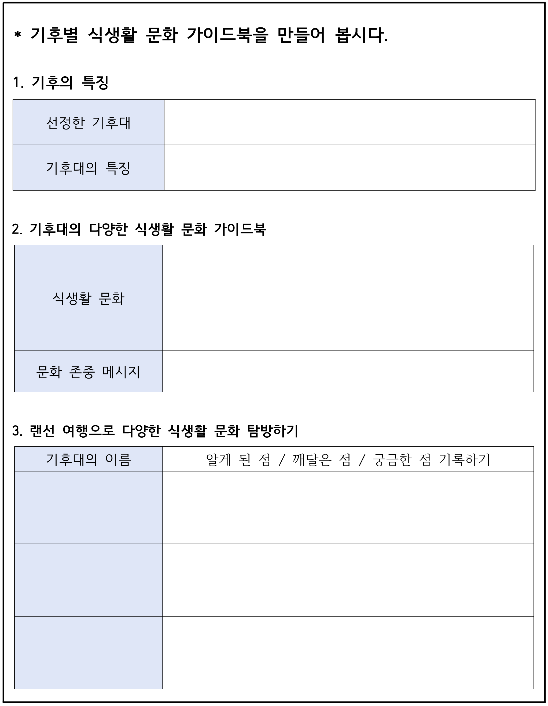
교과 융합 프로젝트 수업대덕초 · 6학년일 시 | 대 상 | 6학년 3반 | 교과서 | 수학146~147(6/8) | 지도교사 | ||||||||||
|---|---|---|---|---|---|---|---|---|---|---|---|---|---|---|---|
프로젝트 | 다문화, 야호~! 밥상과 공간 잇기(3/8) | xplore | | ||||||||||||
본시 성취기준 | [6수03-07] 원기둥, 원뿔, 구를 이해하고, 구성 요소와 성질을 탐구하고 설명할 수 있다. | 본시 관련교과 | 수학 | ||||||||||||
학습목표 | 입체도형으로 세계 여러 나라의 건축물 모형을 만들 수 있다. | ||||||||||||||
수업 모형 | 문제해결 학습 모형 | 교과 역량 | 의사소통 역량 | ||||||||||||
수업전략 | 수업 의도 | - 입체도형(원기둥, 원뿔, 구)의 수학적 성질을 단순 도식으로 익히는 데 그치지 않고, 세계 여러 나라의 유명 건축물 속 입체도형을 탐색하고 구현하는 활동을 통해 수학적 창의성과 다문화 수용성을 함께 신장할 수 있다. - 세계 여러 나라의 건축물이 각 나라의 기후, 지형, 역사 등 처해 있는 고유한 상황과 삶의 방식을 반영하고 있음을 탐색하고, 건축물 구조 속에 쓰인 입체도형(원기둥, 원뿔, 구)의 수학적 특징을 파악할 수 있다. | |||||||||||||
다문화 주도성 | | | |||||||||||||
☑ | ☑ | ☐ | ☐ | ||||||||||||
이주배경학생 지도계획 | - 이주배경학생이 수업에서 언어적·문화적 소외감을 느끼지 않도록 핵심 입체도형 어휘(원기둥, 원뿔, 구)에 대한 도움 자료를 사전에 지원하며, 이주배경학생이 거주했던 국가의 대표 건축물을 시각 자료로 포함하여 주도적 적응력을 기르고 학급 내 다문화 감수성을 조성한다. | ||||||||||||||
단계 (시간) | 학습요소 | 교수·학습 활동 | 자료(▶) 및 유의점(☞) |
|---|---|---|---|
도입 (5´) | 동기유발 | ▣ 학습동기 유발 ◦ 퀴즈 속 세계의 다양한 건축물 감상하기 ∙ 자신이 직접 보았거나 알고 있는 세계의 유명한 건축물은 무엇이 있나요? - 미국의 자유의 여신상이 있습니다. ∙ 퀴즈에 등장하는 세계 여러 나라의 건축물을 살펴봅시다. - 대한민국의 서울 타워, 중국의 동방명주 등을 찾았습니다. | ▶ 프레젠테이션 ☞ 이주배경학생이 거주했던 국가의 건축물을 직접 말하게 함으로써 동기를 유발하며 서로의 문화를 이해하게 한다. |
공부할 문제 파악 | ▣ 공부할 문제 확인 ♣ 입체도형으로 세계 여러 나라의 건축물 모형을 만들어 봅시다. | ||
학습활동 안내 | ▣ 학습활동 안내 【활동1】 입체도형 찾아보기 【활동2】 건축물 모형 만들기 【활동3】 둘 가고 둘 남기 발표하기 | ||
문제 이해하기 (7´) | 세계 여러 나라의 건축물 살펴보기 | ▣ 【활동1】 입체도형 찾아보기 ◦ 세계 건축물 속 입체도형 스티커 투어하기 ∙ 교실 벽면에 전시된 세계 여러 나라의 건축물 사진을 둘러봅시다. ∙ 스티커를 들고 건축물 사진 속 입체도형 부분에 직접 붙여봅시다. ◦ 건축물에 사용된 입체도형의 특징 확인하기 ∙ 스티커 투어 결과를 살펴보며 건축물에 사용된 입체도형과 그 특징을 발표해 볼까요? - 기둥 부분에 빨간색(원기둥) 스티커가 많이 붙었습니다. - 지붕이나 탑 꼭대기에는 파란색(원뿔)과 초록색(구) 스티커가 붙어있습니다. | ▶ 건축물 사진, 스티커 ☞ 건축물의 모양을 결정짓는 요인에 어떤 것이 있을지 생각을 확장하는 기회를 제공한다. |
교과 융합 프로젝트 수업대덕초 · 6학년단계 (시간) | 학습요소 | 교수·학습 활동 | 자료(▶) 및 유의점(☞) |
|---|---|---|---|
해결 계획 세우기 (13´) | 건축물 모형 만들기 | ▣ 【활동2】 건축물 모형 만들기 ◦ 나라별 상황을 반영한 건축물 모형 구상하기 ∙ 각 나라 친구의 조건을 살피며 나라별 상황에 적합한 건축물 모형을 설계해 봅시다. - 열대우림 기후에 사는 레온이는 바닥의 습기를 피하기 위해 고상 가옥을 지어야 할 것 같습니다. ◦ 구상한 건축물 모형을 디지털 프로그램으로 표현하기 ∙ 알지오매스 키즈 프로그램을 사용하여 설계한 건축물 모형을 만들어 봅시다. | ▶ 크롬북, 활동지 ☞ 나라별 상황에 따른 조건을 완벽히 반영하는 것에 치우치지 않고 입체도형을 활용한 자유롭고 창의적인 표현에 초점을 맞추도록 안내한다. |
해결 계획 실행하기 (10´) | 제작한 건축물 모형 발표하기 | ▣ 【활동3】 둘 가고 둘 남기 발표하기 ◦ 모둠별로 만든 건축물 모형 소개하기 ∙ 둘 가고 둘 남기 발표로 제작한 건축물 모형에 대해 발표해 봅시다. ◦ 모둠별 작품을 감상하며 느낌 나누기 ∙ 다른 모둠의 건축물 모형을 보며 느낀 점을 함께 나누어 봅시다. - 원뿔 모양의 지붕을 사용한 것이 비가 많이 내리는 기후와 관계있다는 설명을 듣고 나라의 상황을 잘 반영한 건축물이라고 생각했습니다. | ▶ 크롬북, 활동지 ☞ 건축물 모형을 소개할 때 사용된 입체도형의 종류와 나라별 고려 요소가 잘 드러나도록 안내한다. |
반성하기 (5´) | 학습내용 정리 | ▣ 학습내용 정리하기 ◦ 배운 내용 정리하기 ∙ 오늘 배운 내용과 문제를 해결한 소감을 말해 봅시다. - 세계 여러 건축물에서 우리가 배운 입체도형을 관찰할 수 있어서 흥미로웠습니다. - 나라마다 건축물의 모양이 다른 것이 단지 심미적 요소뿐만 아니라 각국의 기후와 지형 및 문화적 환경 등을 생생하게 반영하고 있음을 깨달았습니다. | ☞ 입체도형 탐구와 상호문화 이해가 자연스럽게 연결되도록 유도한다. |
▣ 차시 예고 ♣ 국가 간에 무역을 하는 이유를 알아봅시다. |
판서계획 | 6. 원기둥, 원뿔, 구 | ||
|---|---|---|---|
♣ 입체도형으로 세계 여러 나라의 건축물 모형을 만들어 봅시다. | * 세계 여러 나라의 건축물 사진 입체도형 종류별로 붙은 스티커 | ||
【활동1】 입체도형 찾아보기 【활동2】 건축물 모형 만들기 【활동3】 둘 가고 둘 남기 발표하기 |
평가 계획 | 평가내용 | 척도 | 채점 기준 | 평가 방법 |
|---|---|---|---|---|
알지오매스 키즈를 사용하여 나라별 상황을 반영한 건축물 모형을 만들 수 있는가? | 매우 잘함 | 알지오매스 키즈를 사용하여 원기둥, 원뿔, 구가 모두 있으며 나라별 상황을 반영한 건축물 모형을 만들 수 있다. | 관찰법 | |
잘함 | 알지오매스 키즈를 사용하여 원기둥, 원뿔, 구 중 일부가 있으며 나라별 상황을 반영한 건축물 모형을 만들 수 있다. | |||
보통 | 교사 또는 동료의 도움을 받아 알지오매스 키즈를 사용하여 건축물 모형을 만들 수 있다. | |||
이주배경학생 평가 시 유의점 | 이주배경학생의 한국어 능력의 차이가 채점 기준 도달 여부에 불이익으로 작용하지 않도록 유의한다. 또한, 한국어 발표의 유창성보다는 모둠 활동 과정에서 입체도형의 특징을 이해하고 모형을 제작하는 과정을 중점적으로 평가한다. 더불어 모둠원과 협력하여 적극적으로 참여하려는 의지와 상호작용 태도를 다각도로 관찰해 피드백한다. | |||
교과 융합 프로젝트 수업대덕초 · 6학년* 입체도형으로 여러 나라의 건축물 모형을 만들어 봅시다. 1. 우리 모둠이 뽑은 쪽지를 분석해 봅시다. 뽑은 나라
뽑은 나라에서
고려해야 할 상황
2. 우리 모둠의 건축물 모형을 구상해 봅시다.
스케치
건축물 이름
사용한 입체도형
나라별 상황에
따라 고려한 요소
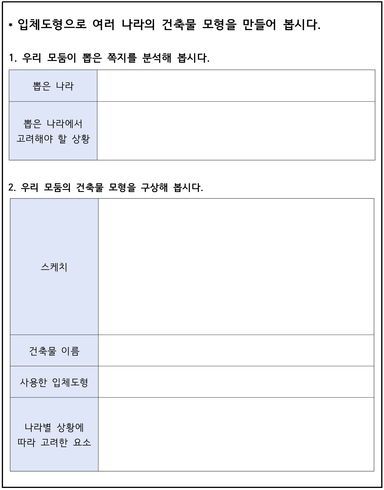
교과 융합 프로젝트 수업대덕초 · 6학년일 시 | 대 상 | 6학년 2반 | 교과서 | 사회 104~107(15/17) | 지도교사 | ||||||||||
|---|---|---|---|---|---|---|---|---|---|---|---|---|---|---|---|
프로젝트 | 다문화, 야호~! 밥상과 공간 잇기(4/8) | xplore | | ||||||||||||
본시 성취기준 | [6사11-03] 사례를 통해 무역의 의미를 이해하고, 국가 간 무역이 발생하는 이유를 탐구한다. | 본시 관련교과 | 사회 | ||||||||||||
학습목표 | 국가 간에 무역을 하는 이유를 알 수 있다. | ||||||||||||||
수업 모형 | 문제해결 학습 모형 | 교과 역량 | 문제해결력 및 의사결정력 | ||||||||||||
수업전략 | 수업 의도 | - 이주배경학생 모국의 화폐를 사용하기 위해, 우리나라 화폐를 환전하는 과정이 필요하다. 환전을 위해 환율의 개념을 알아보고 비례식을 이용해 환율의 개념을 학생들이 체험할 수 있다. - 교과서의 비례식을 활용한 실생활 문제 소재도 훌륭하지만, 한 교실에서 같이 생활하는 이주배경학생의 모국 화폐로 환전하는 과정이 이주배경학생과 비이주배경학생 서로에게 흥미로운 학습주제가 되도록 한다. | |||||||||||||
다문화 주도성 | | | |||||||||||||
☐ | ☑ | ☑ | ☐ | ||||||||||||
이주배경학생 지도계획 | - 이주배경학생이 네덜란드 생활 경험을 친구들에게 소개하는 기회를 주고, 한국과 생활 환경이나 사고파는 물건이 왜 다른지 질문하며 자연환경, 기후, 자원 등의 차이와 연결지어 생각해 보도록 한다. | ||||||||||||||
단계 (시간) | 학습요소 | 교수·학습 활동 | 자료(▶) 및 유의점(☞) |
|---|---|---|---|
문제 확인 (5´) | 동기유발 | ▣ 학습동기 유발 ◦ 나라 알아맞히기 ∙ 사진과 관계있는 나라를 알아맞혀 봅시다. - 튤립과 풍차가 유명한 네덜란드입니다. - 온천과 지진이 많은 일본입니다. | ▶ 프레젠테이션 ☞ 이주배경학생이 살던 나라를 함께 알아보고 나라마다 다양한 생활 모습이 있음을 안내한다. |
공부할 문제 파악 | ▣ 공부할 문제 확인 ♣ 국가 간에 무역을 하는 이유를 알아봅시다. | ||
학습활동 안내 | ▣ 학습활동 안내 【활동1】 여행경험 나누기 【활동2】 무역, 해보자! 【활동3】 무역, 왜 필요할까? | ||
문제의 잠정적 해결책 설정 (5´) | 국가 간 교환의 필요성 알기 | ▣ 【활동1】 여행경험 나누기 ◦ 여행 중 경험한 것 이야기하기 ∙ 다른 나라에서 무엇을 사 먹어 보고 어떤 것을 체험했는지 이야기 해 봅시다. - 열대 과일을 먹고 마사지를 받았습니다. - 네덜란드에는 자전거 도로가 많고 자전거를 타는 사람이 많았습니다. ◦ 우리나라와 다른 점 찾아보기 ∙ 다른 나라에서 경험한 것을 우리나라에서도 똑같이 할 수 있거나 살 수 있나요? - 열대 과일을 구할 수 없고 1년 내내 밖에서 수영을 할 수 없습니다. ∙ 우리나라에 없거나 구하기 힘든 것들을 어떻게 구할 수 있을지를 알아봅시다. | ▶ 프레젠테이션, 활동지 ☞ 단순한 여행이야기가 아닌 우리나라에서 구하기 어려운 까닭을 자연환경과 자원, 기술의 차이로 연결하도록 한다. |
교과 융합 프로젝트 수업대덕초 · 6학년단계 (시간) | 학습요소 | 교수·학습 활동 | 자료(▶) 및 유의점(☞) |
|---|---|---|---|
자료 수집 (20´) | 무역 시뮬레이션 놀이 하기 | ▣ 【활동2】 무역, 해보자! ◦ 무역 시뮬레이션 놀이 하기 ∙ 각 나라가 가진 자원을 확인해 봅시다. 무엇이 많고 무엇이 부족한가요? - 사우디아라비아는 석유가 많고 목재와 철광석이 적습니다. ∙ 나라를 발전시키려면 다양한 자원이 필요합니다. 모둠의 외교관은 대통령의 승인을 바탕으로 다른 나라와 자원 교환을 시작해봅시다. - 한국과 사우디아라비아가 목재와 석유를 교환하는 무역을 진행했습니다. | ▶ 크롬북, 캔바, 활동지 ☞ 정해진 규칙과 역할을 지키며 지나친 경쟁보다는 자원 교환의 의미를 되짚어 무역의 필요성을 정확하게 느끼도록 한다. |
문제의 해결책 결정 (5´) | 무역의 필요성 알기 | ▣ 【활동3】 무역, 왜 필요할까? ◦ 무역 활동 경험 떠올리기 ∙ 각 나라에서 부족한 자원이 있을 때 어떻게 해결했나요? - 그 자원이 많은 나라를 찾아가 우리나라에 많은 자원과 바꾸었습니다. ◦ 무역이 필요한 까닭 알아보기 ∙ 나라와 나라 사이에 무역이 왜 필요한지 말해봅시다. - 나라마다 자연환경과 자원, 기술이 다르기 때문에 필요한 것을 모두 스스로 만들기 어렵습니다. 그래서 각 나라에서 잘 만드는 물건을 바꾸면 모두에게 이익이 됩니다. | ▶ 활동지 |
평가하기 (5´) | 학습내용 정리 | ▣ 학습내용 정리하기 ◦ 배운 내용 정리하기 ∙ 무역 OX퀴즈를 풀어보고 더 알아보고 싶은 내용을 말해봅시다. - 주변 나라들과 구체적으로 어떤 물건을 무역을 통해 주고 받는지 궁금해서 찾아보고 싶습니다. ∙ 우리나라가 꼭 필요한 자원을 다른 나라가 주지 않았다면 어땠을까요? - 발전하지 못했을 것 같습니다. 서로 부족한 부분을 세계의 나라들이 다 같이 채워주고 있습니다. | ▶ 프레젠테이션 ☞ 세계 여러 나라가 서로의 부족한 점을 채워 주며 다양한 나라의 문화를 존중하고 더불어 사는 세계 시민의 태도를 갖도록 지도한다. |
▣ 차시 예고 ♣ 다른 나라 친구를 배려한 우리나라 밥상 차림을 계획해 봅시다. |
판서계획 | 2. 시장경제와 국가 간 거래 | ||
|---|---|---|---|
♣ 국가 간에 무역을 하는 이유를 알아봅시다. | * 무역 시뮬레이션의 모든 국가의 자원, 개발 정보 * 무역을 하는 까닭 알아보기 - 자원, 기술, 자연환경의 차이- | ||
【활동1】 여행경험 나누기 【활동2】 무역, 해보자! 【활동3】 무역, 왜 필요할까? |
평가 계획 | 평가내용 | 척도 | 채점 기준 | 평가 방법 |
|---|---|---|---|---|
국가 간 무역이 발생하는 이유를 설명할 수 있는가? | 매우 잘함 | 나라마다 자연환경, 자원, 기술이 달라 무역이 발생함을 구체적인 예를 들어 설명할 수 있다. | 관찰법 | |
잘함 | 나라마다 자원이나 환경이 달라 무역이 발생함을 설명할 수 있다. | |||
보통 | 무역이 발생하는 이유를 도움을 받아 설명할 수 있다. | |||
이주배경학생 평가 시 유의점 | '자원', '무역', '수출', '수입' 등 어려운 용어는 미리 쉬운 말로 안내하여 평가 내용 이해에 어려움이 없도록 한다. 해외 생활 경험을 활용한 답변을 의미 있는 설명으로 존중하고, 무역 시뮬레이션 활동에 참여하는 모습을 관찰하여 과정 중심으로 평가한다. | |||
교과 융합 프로젝트 수업대덕초 · 6학년- 다른 나라에서 먹어 보거나, 사 보거나, 체험한 것을 써 봅시다. ※ 가 본 나라가 없다면 가 보고 싶은 나라를 써도 좋아요. 나라 먹거나 사거나 체험한 것
우리나라에서도
할 수 있나요? 어려운 까닭
O / X
O / X
O / X
- 우리 나라: ________________ 내 역할: □ 대통령 □ 국무총리 □ 외교관
- 우리 나라의 자원을 확인해 봅시다. 많은 자원 부족한 자원
- 빈칸을 채워 봅시다. 나라마다 ( ), ( ), ( )이/가 달라서 필요한
것을 모두 스스로 만들기 어렵습니다. 그래서 나라와 나라는 서로 필요한 것을 주고받는
무역을 합니다.
활동1 여행 경험 나누기
활동2 무역 시뮬레이션 놀이
활동3 무역, 왜 필요할까?
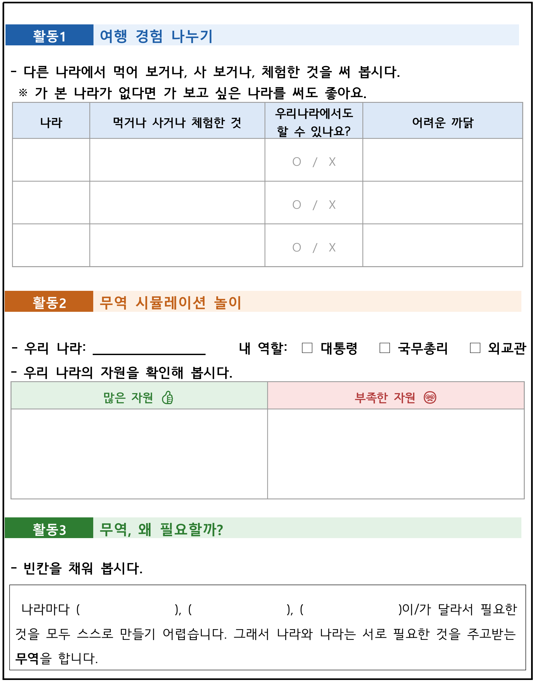
교과 융합 프로젝트 수업대덕초 · 6학년일 시 | 대 상 | 6학년 4반 | 교과서 | 실과 92(5/9) | 지도교사 | ||||||||||
|---|---|---|---|---|---|---|---|---|---|---|---|---|---|---|---|
프로젝트 | 다문화, 야호~! 밥상과 공간 잇기 (5/8) | nite | | ||||||||||||
본시 성취기준 | [6실02-06] 우리나라 밥상 차림을 이해하고, 함께 식사하는 즐거움을 경험하면서 이 과정에서 식사 예절을 실천한다. | 본시 관련교과 | 실과 | ||||||||||||
학습목표 | 다른 나라 친구를 배려한 우리나라 밥상 차림을 계획할 수 있다. | ||||||||||||||
수업 모형 | 문제해결 학습 모형 | 교과 역량 | 실천적 문제해결 역량 | ||||||||||||
수업전략 | 수업 의도 | - 우리나라 밥상 차림의 특징을 이해하고, 서로 다른 식생활을 가진 친구를 배려하여 알맞은 밥상을 계획하고 그 이유를 설명할 수 있도록 한다. - 다양한 문화적 배경과 식생활을 가진 친구에게 음식을 대접하는 상황을 제시한다. 이주배경학생과 비이주배경학생이 함께 서로의 생각을 나누고 친구의 입장에서 밥상을 계획하는 과정에서 문화적 다양성을 이해하고 다문화 수용성을 기르도록 한다. | |||||||||||||
다문화 주도성 | | | |||||||||||||
☑ | ☑ | ☐ | ☐ | ||||||||||||
이주배경학생 지도계획 | - 이주배경학생의 한국어 이해 수준을 사전에 파악하고, 우리나라 음식의 명칭과 주요 식재료를 쉽게 이해할 수 있는 음식카드를 준비한다. 모둠 활동에서는 자신의 생각을 충분히 표현할 수 있도록 시간을 제공한다. | ||||||||||||||
단계 (시간) | 학습요소 | 교수·학습 활동 | 자료(▶) 및 유의점(☞) |
|---|---|---|---|
문제 이해하기 (5´) | 동기유발 | ▣ 학습동기 유발 ◦ 우리나라 음식이 차려진 밥상 사진 살펴보기 ∙ 외국인 친구를 위해 정성껏 밥상을 차렸습니다. 그런데 친구가 잘 먹지를 못하고 있어요. 왜 그랬을까요? - 매운 음식을 잘 먹지 못하기 때문입니다. - 돼지고기를 먹지 못할 수도 있습니다. ∙ 다른 나라 친구에게 우리나라 음식을 대접할 때 무엇을 고려해야 할까요? - 친구의 식성과 문화 등을 고려해야 합니다. | ▶ 프레젠테이션 ☞ 개인의 문화적 배경과 식생활에 따라 먹을 수 있는 음식이 다를 수 있음을 인식하도록 한다. |
공부할 문제 파악 | ▣ 공부할 문제 확인 ♣ 다른 나라 친구를 배려한 우리나라 밥상 차림을 계획해 봅시다. | ||
학습활동 안내 | ▣ 학습활동 안내 【활동1】 우리나라 밥상 차림 알아보기 【활동2】 친구를 배려한 밥상 계획하기 【활동3】 우리 모둠 밥상 소개하기 | ||
해결 방안 탐색하기 (5´) | 우리나라 밥상 차림의 특징 살펴보기 | ▣ 【활동1】 우리나라 밥상 차림 알아보기 ◦ 우리나라 밥상 차림 확인하기 ∙ 사진에서 공통적으로 나타나는 특징은 무엇일까요? - 밥과 국, 여러 가지 반찬으로 이루어져 있습니다. - 밥을 중심으로 다양한 음식이 함께 차려져 있습니다. ∙ 밥과 함께 여러 가지 반찬을 먹으면 어떤 점이 좋을까요? - 다양한 맛을 즐길 수 있습니다. - 여러 가지 영양소를 골고루 섭취할 수 있습니다. | ▶ 프레젠테이션 ☞ 우리나라 밥상 차림의 기본 구성을 이해하되, 모든 밥상이 동일한 형태를 갖추어야 하는 것은 아님을 안내한다. |
교과 융합 프로젝트 수업대덕초 · 6학년단계 (시간) | 학습요소 | 교수·학습 활동 | 자료(▶) 및 유의점(☞) |
|---|---|---|---|
실현하기 (17´) | 외국인 친구를 확인하고 밥상 구성하기 | ▣ 【활동2】 친구를 배려한 밥상 계획하기 ◦ 모둠별로 가상 친구의 식생활 이해하기 ∙ 주어진 친구의 상황을 살펴봅시다. - 종교적 이유로 돼지고기를 먹지 않는 친구가 있습니다. - 채식을 하는 친구가 있습니다. ∙ 친구에게 음식을 대접할 때 고려해야 할 점은 무엇인가요? - 친구가 먹지 않는 음식이나 식재료를 확인해야 합니다. - 친구가 좋아하는 음식도 고려해야 합니다. ◦ 모둠별로 친구를 배려하는 밥상 계획하기 ∙ 음식카드를 활용하여 우리나라 밥상 차림의 특징을 살린 밥상을 계획하고 활동지에 붙여 봅시다. ∙ 필요하다면 음식카드에 제시된 식재료나 조리법을 바꿔도 좋습니다. | ▶ 프레젠테이션, 활동지, 음식카드 ☞ 국적이나 종교에 따라 식생활을 일반화하지 않고, 개인의 문화적 배경과 생활 방식을 존중하도록 지도한다. |
평가하기 (10´) | 모둠별 발표하기 | ▣ 【활동3】 우리 모둠 밥상 소개하기 ◦ 모둠별로 계획한 밥상 발표하기 ∙ 우리 모둠이 선택한 음식과 친구를 위해 특별히 배려한 점을 설명해 봅시다. ◦ 다른 모둠의 발표를 듣고 생각 나누기 ∙ 친구를 위한 밥상을 차릴 때 중요하게 고려할 점은 무엇인가요? - 식생활에 맞게 재료나 조리 방법을 조정하는 것입니다. - 친구마다 먹을 수 있는 음식이 다를 수 있으므로 상대방의 상황을 이해하는 것이 중요합니다. | ▶ 활동지 ☞ 밥상 차림 구성보다 다른 나라 친구의 식생활을 고려한 선택 이유에 중점을 두어 발표하도록 한다. |
평가하기 (3´) | 학습내용 정리 | ▣ 학습내용 정리하기 ◦ 배운 내용 정리하기 ∙ 오늘 우리가 차린 밥상에는 음식 외에 무엇이 담겨 있을까요? - 친구의 입장을 헤아리고 배려하는 마음이 담겨 있습니다. - 서로 다른 문화를 존중하는 마음이 담겨 있습니다. | |
▣ 차시 예고 ♣ 세계 여러 나라의 식사 예절을 알고 실천해 봅시다. |
판서계획 | 5. 바람직한 식생활 | ||
|---|---|---|---|
♣ 다른 나라 친구를 배려한 우리나라 밥상 차림을 계획해 봅시다. | * 우리나라 밥상 차림 - 밥을 주식으로 함 - 국과 여러 가지 반찬을 곁들임 - 다양한 식재료와 음식이 조화를 이룸 | ||
【활동1】 우리나라 밥상 차림 알아보기 【활동2】 친구를 배려한 밥상 계획하기 【활동3】 우리 모둠 밥상 소개하기 |
평가 계획 | 평가내용 | 척도 | 채점 기준 | 평가 방법 |
|---|---|---|---|---|
다른 나라 친구의 식생활을 고려하여 우리나라 밥상 차림을 계획할 수 있는가? | 매우 잘함 | 우리나라 밥상 차림의 특징을 이해하고 친구의 식생활을 고려한 밥상을 계획하며 그 이유를 설명할 수 있다. | 관찰법, 구술 | |
잘함 | 우리나라 밥상 차림의 특징을 이해하고 친구의 식생활을 고려하여 밥상을 계획할 수 있다. | |||
보통 | 우리나라 밥상 차림에 대한 이해가 부족하고, 도움을 받아 친구의 식생활을 고려한 밥상을 계획할 수 있다. | |||
이주배경학생 평가 시 유의점 | 이주배경학생의 한국어 읽기 및 이해 속도를 고려하여 활동지와 음식카드의 내용을 충분히 파악할 수 있도록 시간을 제공하고, 언어 표현의 정확성보다는 우리나라 밥상 차림에 대한 이해와 친구의 식생활을 배려한 음식 선택 및 그 이유를 중심으로 평가한다. | |||
교과 융합 프로젝트 수업대덕초 · 6학년초대한 친구
친구의
식생활 특징
친구를 배려한
우리나라
밥상 차림
(음식카드 붙이기)
친구를 위해
고려한 점
∙어떤 음식이나 재료를 선택하거나 바꾸었나요? 그 이유는 무엇인가요?
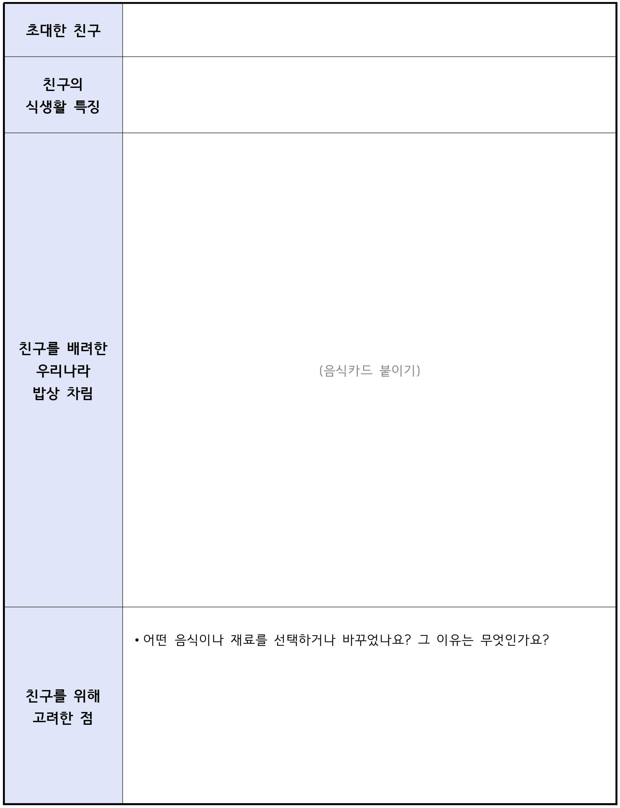
교과 융합 프로젝트 수업대덕초 · 6학년일 시 | 대 상 | 6학년 1반 | 교과서 | 실과 93(6/9) | 지도교사 | ||||||||||
|---|---|---|---|---|---|---|---|---|---|---|---|---|---|---|---|
프로젝트 | 다문화, 야호~! 밥상과 공간 잇기 (6/8) | nite | | ||||||||||||
본시 성취기준 | [6실02-06] 우리나라 밥상 차림을 이해하고, 함께 식사하는 즐거움을 경험하면서 이 과정에서 식사 예절을 실천한다. | 본시 관련교과 | 실과 | ||||||||||||
학습목표 | 세계 여러 나라의 식사 예절을 알고 실천할 수 있다. | ||||||||||||||
수업 모형 | 프로젝트 교수 학습 모형 | 교과 역량 | 관계형성 역량 | ||||||||||||
수업전략 | 수업 의도 | - 우리나라와 다른 세계 여러 나라의 식사 예절을 고유한 문화로 이해하고 이를 포스터로 제작하여 공유함으로써 문화적 편견을 허물고 다문화 수용성을 기를 수 있도록 한다. - 교과서 속 형식적인 식사 예절을 넘어 세계 여러 나라의 식사 예절과 그 배경을 함께 탐구하는 과정이 이주배경학생과 비이주배경학생 모두에게 서로의 다름을 존중하고 배려하는 학습 경험이 되도록 한다. | |||||||||||||
다문화 주도성 | | | |||||||||||||
☑ | ☐ | ☐ | ☑ | ||||||||||||
이주배경학생 지도계획 | - 낯선 식사 예절에 대한 편견이 생기지 않도록 하고 한국어 표현 부담 없이 모국의 식문화를 긍정적으로 표현하고 공유할 수 있도록 한다. | ||||||||||||||
단계 (시간) | 학습요소 | 교수·학습 활동 | 자료(▶) 및 유의점(☞) |
|---|---|---|---|
목적 설정 (5´) | 동기유발 | ▣ 학습동기 유발 ◦ 세계 여러 나라의 식사 장면을 보며 생각 나누기 ∙ 사진을 보고 드는 생각이나 느낀 점을 이야기해 봅시다. - 밥그릇을 손에 들고 먹는 모습이 급해 보입니다. - 손으로 밥을 먹는 모습이 예의가 없어 보입니다. ∙ 서로 다른 문화권의 식사 장면이라는 점을 고려한다면, 우리의 생각은 어떻게 달라질 수 있을까요? - 우리나라에서는 그릇을 들고 먹거나 손으로 먹으면 혼나기도 하지만, 다른 나라에서는 예절이 될 수도 있을 것 같습니다. | ▶ 프레젠테이션 ☞ 문화에 따라 여러 나라의 식사 예절이 다를 수 있음을 이해하게 한다. |
공부할 문제 파악 | ▣ 공부할 문제 확인 ♣ 세계 여러 나라의 식사 예절을 알고 실천해 봅시다. | ||
학습활동 안내 | ▣ 학습활동 안내 【활동1】 식사 예절 OX 퀴즈 풀기 【활동2】 식사 예절 포스터 만들기 【활동3】 식사 예절 포스터 공유하기 | ||
계획 (10´) | OX 퀴즈로 식사 예절 알아보기 | ▣ 【활동1】 식사 예절 OX 퀴즈 풀기 ◦ 세계 여러 나라의 식사 예절 OX 퀴즈 풀기 ∙ 미국이나 유럽 등 서양의 식사 자리에서는 콧물이 흐를 때 훌쩍거리며 참는 것보다, 냅킨으로 소리 없이 조용히 코를 푸는 것이 더 위생적인 예절일까요? - 서양의 식사 자리에서는 조용히 코를 푸는 것이 더 위생적인 예절입니다. ∙ 미국이나 유럽에서는 왜 이런 문화가 생겨났을까요? - 서양에서는 식사 중 콧물을 계속 훌쩍거리는 소리를 내는 것이 다른 사람에게 훨씬 비위생적이고 불쾌한 소음으로 여겨지기 때문입니다. | ▶ 프레젠테이션 ☞ 세계 여러 나라의 식사 예절을 알아보면서 왜 그런 문화가 생겨났는지 배경까지 생각해 보도록 한다. |
교과 융합 프로젝트 수업대덕초 · 6학년단계 (시간) | 학습요소 | 교수·학습 활동 | 자료(▶) 및 유의점(☞) |
|---|---|---|---|
실행 (10´) | 세계 여러 나라의 식사 예절을 안내하는 포스터 만들기 | ▣ 【활동2】 식사 예절 포스터 만들기 ◦ 세계 여러 나라의 식사 예절 포스터 만들기 ∙ 식사 예절을 조사할 나라를 선정하고 학습지에 기록해 봅시다. - 미국의 식사 예절을 조사하고 싶습니다. ∙ 선택한 나라의 식사 예절과 그 문화가 만들어진 배경을 조사하여 포스터를 만들어 봅시다. - 식탁 건너편에 있는 소금을 집으려고 다른 사람 앞이나 식탁 중앙으로 팔을 길게 뻗지 않는 미국의 식사 예절을 포스터로 만들고 싶습니다. | ▶ 프레젠테이션, 활동지, 크롬북, 캔바 ☞ 시간의 여유가 있는 학생들은 한글로 포스터를 제작한 뒤, 영문으로도 제작해 보도록 한다. |
평가 (10´) | 세계 여러 나라의 식사 예절을 안내하는 포스터 공유하기 | ▣ 【활동3】 식사 예절 포스터 공유하기 ◦ 세계 여러 나라의 식사 예절 포스터 발표하기 ∙ 패들렛에 공유한 세계 여러 나라의 식사 예절 포스터를 발표해 봅시다. - 미국의 일반 식당에서는 음식값 외에 팁을 테이블에 두고 나오거나 카드를 결제할 때 포함하는 문화가 있습니다. 미국 식당의 서빙 직원들은 기본급이 낮아 팁이 주요한 소득원이 되기 때문입니다. - 말레이시아에서는 식사 중 발바닥이 사람이나 음식을 향하지 않도록 조심스럽게 모으거나 접어 앉습니다. 신체 부위 중 발바닥을 땅에 닿는 가장 낮고 불결한 부위로 여기기 때문입니다. | ▶ 크롬북, 패들렛, 캔바 ☞ 학생들이 자발적으로 발표에 참여할 수 있도록 수용적인 분위기를 조성한다. |
평가 (5´) | 학습내용 정리 | ▣ 학습내용 정리하기 ◦ 배운 내용 정리하기 ∙ 오늘 배운 내용과 활동에 대한 소감을 말해 봅시다. - 세계 여러 나라의 식사 예절이 서로 다르다는 점을 알게 되었습니다. - 세계 여러 나라의 식사 예절을 서로 존중해야겠다고 생각했습니다. | ▶ 프레젠테이션 ☞ 다양한 나라의 식사 예절에 지속적으로 관심을 가질 수 있도록 유도한다. |
▣ 차시 예고 ♣ 다문화 공존과 배려의 의미를 담은 배지를 디자인해 봅시다. |
판서계획 | 5. 바람직한 식생활 | ||
|---|---|---|---|
♣ 세계 여러 나라의 식사 예절을 알고 실천해 봅시다. | * 세계 여러 나라의 식사 예절 예) 미국이나 유럽 - 콧물이 흐를 때 훌쩍거리며 참는 것보다, 냅킨으로 소리 없이 조용히 코를 푸는 것이 더 위생적인 예절이다. | ||
【활동1】 식사 예절 OX 퀴즈 풀기 【활동2】 식사 예절 포스터 만들기 【활동3】 식사 예절 포스터 공유하기 |
평가 계획 | 평가내용 | 척도 | 채점 기준 | 평가 방법 |
|---|---|---|---|---|
세계 여러 나라의 식사 예절을 알고 설명할 수 있는가? | 매우 잘함 | 세계 여러 나라의 식사 예절을 알고 능숙하게 설명할 수 있다. | 관찰법 | |
잘함 | 세계 여러 나라의 식사 예절을 알고 설명할 수 있다. | |||
보통 | 세계 여러 나라의 식사 예절을 도움을 받아 설명할 수 있다. | |||
이주배경학생 평가 시 유의점 | 식사 예절의 의미와 특징을 머릿속으로 충분히 이해하고 있더라도 한국어 어휘력이 부족해 문장으로 술술 말하지 못할 수 있으므로, 말로만 하는 설명 외에도 포스터에 표현한 그림 등 학생이 선택한 다채로운 표현 방식을 모두 정당한 설명으로 인정하여 반영한다. | |||
교과 융합 프로젝트 수업대덕초 · 6학년* 세계 여러 나라의 식사 예절 포스터를 만들어 봅시다. 1. 조사할 나라 선정하기
선정한 나라
이 나라를 선정한 이유
2. 포스터에 소개할 대표 식사 예절 선정하기
포스터에 소개할
대표 식사 예절
3. 식사 예절이 생겨난 문화적 배경 탐구하기
식사 예절이 생겨난
문화적 배경
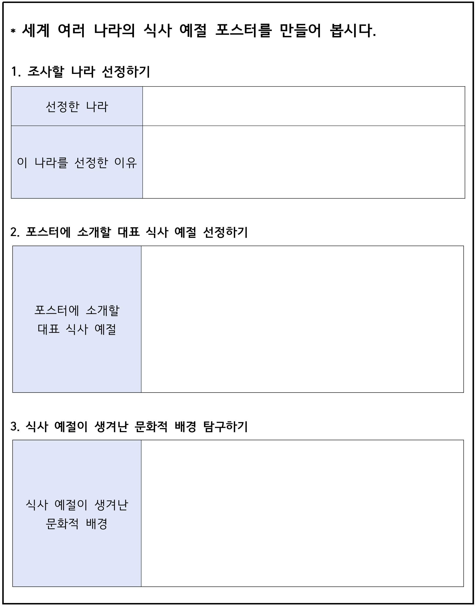
교과 융합 프로젝트 수업대덕초 · 6학년융합과목 | 미술 | 대 상 | 6학년 | 프로젝트 단계 | ake | ||||||
|---|---|---|---|---|---|---|---|---|---|---|---|
프로젝트 | 다문화, 야호~! 밥상과 공간 잇기(7/8) | | |||||||||
성취기준 | [6미02-02] 디지털 매체 등 다양한 표현 재료와 용구를 탐색하여 작품 제작에 활용할 수 있다. | ||||||||||
학습목표 | 다문화 공존과 배려의 의미를 담은 배지를 디자인할 수 있다. | ||||||||||
수업전략 | 수업모형 | 창의적 문제 해결 학습 모형 | 교과 역량 | 심미적 감성 역량 | |||||||
다문화 주도성 | | | |||||||||
☐ | ☑ | ☐ | ☑ | ||||||||
단계 (시간) | 학습요소 | 교수·학습 활동 | 자료(▶) 및 유의점(☞) |
|---|---|---|---|
문제 인식 (5′) | 동기유발 | ▣ 학습동기 유발 ◦ 일상 속 다양한 메시지를 담은 배지 살펴보기 ∙ 평화, 환경 보호, 장애 인식 개선 등 의미가 담긴 배지 디자인 사례를 살펴봅시다. | ▶ 프레젠테이션 |
공부할 문제 파악 | ▣ 공부할 문제 확인 ♣ 다문화 공존과 배려의 의미를 담은 배지를 디자인해 봅시다. | ||
아이디어 탐색 (10′) | 이미지 떠올리기 | ▣ 【활동1】 디자인 구상하기 ◦ 다문화 관련 이미지 떠올리기 ∙ 기후와 건축의 다양성, 무역, 배려 밥상 차리기와 식사 예절 탐구에서 느낀 다문화 관련 이미지를 떠올려 봅시다. ∙ 떠올린 이미지를 어떤 색, 형태, 글자로 표현할지 생각하며 스케치해 봅시다. | ☞ 복잡한 그림보다는 누구나 한눈에 그 의미를 알아볼 수 있도록 단순화하여 표현하게 한다. |
아이디어 정교화 (15‘) | 디자인 하기 | ▣ 【활동2】 배지 디자인하기 ◦ 스케치를 기반으로 디자인 완성하기 ∙ 배지 디자인 스케치를 정교하게 다듬고 채색하여 배지 디자인을 완성해 봅시다. ∙ 자신이 전하고자 하는 다문화 공존과 배려의 의미가 잘 드러나는지 확인해 봅시다. | ▶ 이비스 페인트, 크롬북 |
아이디어 적용 (5‘) | 디자인 공유하기 | ▣ 【활동3】 배지 디자인 공유하기 ◦ 작품 설명 작성하기 ∙ 배지 디자인 의도, 사용한 상징의 의미를 포함하여 작품 설명을 작성해 봅시다. ◦ 작품 설명과 함께 배지 디자인 공유하기 ∙ 작품 설명과 함께 배지 디자인을 공유해 봅시다. | ▶ 패들릿, 크롬북 ☞ 어떤 의미로 텍스트, 모양, 색깔을 활용했는지 그 의도를 충분히 설명하도록 한다. |
종합 및 재검토 (5′) | 학습내용 정리하기 | ▣ 학습내용 정리 ◦ 배지 디자인 과정에서 느낀 소감 이야기하기 ∙ 배지를 디자인하면서 들었던 생각이나 느낌을 이야기해 봅시다. | |
▣ 차시 예고 ♣ 친구들의 작품을 감상하고 다문화 공존을 위한 실천을 다짐해 봅시다. |
교과 융합 프로젝트 수업대덕초 · 6학년융합과목 | 도덕 | 대 상 | 6학년 | 프로젝트 단계 | ake | ||||||
|---|---|---|---|---|---|---|---|---|---|---|---|
프로젝트 | 다문화, 야호~! 밥상과 공간 잇기(8/8) | | |||||||||
성취기준 | [6도03-04] 다른 나라 사람들이 처한 여러 가지 상황을 종합적으로 이해하고 해결 방안을 탐구하며 인류애를 기른다. | ||||||||||
학습목표 | 친구들의 작품을 감상하고 다문화 공존을 위한 실천을 다짐할 수 있다. | ||||||||||
수업전략 | 수업모형 | 가치 명료화 수업 모형 | 교과 역량 | 도덕적 공동체 의식 | |||||||
다문화 주도성 | | | |||||||||
☐ | ☐ | ☑ | ☑ | ||||||||
단계 (시간) | 학습요소 | 교수·학습 활동 | 자료(▶) 및 유의점(☞) |
|---|---|---|---|
도덕적 문제 사태의 제시 (5′) | 동기유발 | ▣ 학습동기 유발 ◦ 우리가 꿈꾸는 지구촌의 평화로운 세상과 관련된 영상 보기 ∙ 서로 다른 문화적 배경을 가진 사람들이 조화롭게 살아가는 모습을 영상을 통해 살펴봅시다. | ▶ 동영상 |
공부할 문제 파악 | ▣ 공부할 문제 확인 ♣ 친구들의 작품을 감상하고 다문화 공존을 위한 실천을 다짐해 봅시다. | ||
선택 (10′) | 친구들 작품 감상하기 | ▣ 【활동1】 친구들의 작품 감상하기 ◦ 프로젝트를 수행하며 만든 친구들의 작품 감상하기 ∙ 이번 프로젝트를 수행하면서 친구들이 제작한 작품을 감상해 봅시다. ∙ 친구들의 작품을 살펴보며 각 작품이 담아낸 배려와 공존의 아이디어를 탐색해 봅시다. | ▶ 패들릿, 크롬북 ☞ 친구들의 작품 속 문화 다양성을 알고 긍정적인 시선으로 존중하며 감상할 수 있도록 한다. |
존중 (15‘) | 피드백 주고 받기 | ▣ 【활동2】 격려와 감상평 남기기 ◦ 격려와 감상평을 남기며 피드백 주고 받기 ∙ 창의적인 배지 작품을 이야기해 볼까요? ∙ 인상 깊은 배려 밥상 식단에 칭찬과 공감의 댓글을 달아봅시다. | ▶ 패들릿, 크롬북 |
행동 (5‘) | 다문화 공존 실천 다짐하기 | ▣ 【활동3】 실천 다짐하기 ◦ 다문화 공존을 위한 실천 다짐하기 ∙ 학교와 일상생활에서 문화적 차별을 없애고 배려를 실천할 수 있는 한 줄 다짐을 작성해 봅시다. ∙ 다문화 공존을 위한 실천을 친구들 앞에서 다짐해 봅시다. | ▶ 패들릿, 크롬북 |
행동 (5′) | 학습내용 정리하기 | ▣ 학습내용 정리 ◦ 배운 내용과 느낀 점 이야기하기 ∙ 오늘 배운 내용과 느낀 점을 말해 봅시다. | ☞ 학생들이 다문화 주도성을 내면화하고 지속적으로 실천할 수 있도록 격려한다. |
▣ 차시 예고 ♣ 지구촌 이웃과 더불어 살아가는 약속을 꾸준히 실천해 봅시다. |